1 · Oxygen Delivery
Lecture 33 · Lauren Reynolds, MSPA, PA-C · Tuesday 27 October 2026
Instructional Objectives
OXYGEN DELIVERY — Lauren Reynolds, MSPA, PA-C
- Identify the indications, benefits, and hazards of oxygen therapy.
- Select the appropriate equipment and supplies necessary for initiating oxygen therapy.
- Explain the rationale for a nebulizer treatment.
- Compare and contrast the different oxygen delivery systems.
- Evaluate the patient’s response to oxygen therapy.
- Discuss the selection and application of oxygen delivery
- Discuss patient education for oxygen delivery
Quoted as the syllabus prints it (page 17, “Oxygen Delivery”); the last two objectives carry no closing period there. They are answered in order in 1.1–1.7.
What Prof. Reynolds said the class is expected to know (from the lecture recording; every fact below still comes from the slides).
- Who gets oxygen and who qualifies for it — “one of the big things is the indications, like who gets oxygen, who qualifies for oxygen.” Starred in 1.1 and 1.6.
- Fire — “the benefit is we’re fixing things, the risk is fire. That is probably one of the biggest risks.” Starred in 1.1 and 1.7.
- The home oxygen qualification, walked through step by step: the patient is first medically optimized; if they still cannot stay on room air, oxygen saturation is documented at rest, then with exertion, then the lowest flow that corrects it. Starred in 1.6.
- The two indications without hypoxia: air hunger at the end of life and cluster headache.
- Myocardial infarction: oxygen is no longer given routinely; the slide’s threshold is in 1.1.
- The devices were taught in order of how sick the patient is, from nasal cannula to the advanced airways (1.4).
Starred boxes and highlighted phrases mark what she stressed. On the recording only, and so never used for a question: high-flow nasal cannula, noninvasive ventilation when carbon dioxide rises, an 88–92% target in chronic obstructive pulmonary disease, and heart failure as a qualifying comorbidity.
Where the slides are loose or disagree
- Nasal cannula range (slide 9). The slide prints “.24% to .44%”; its own per-liter list shows the fractions .24 to .44, which are 24% to 44%. Use 24–44%.
- Partial rebreather mask. Slide 14 says it delivers 60–80% inspired oxygen; the summary table (slide 20) gives .40–.70 at a flow of at least 10 L/min. The two disagree, so no question asks for its number; know that some exhaled gas enters its bag and that it is not commonly used.
- Air-entrainment nebulizer lower limit. Slide 17 gives .28–1.0, the table .21–1.0. Both agree it can deliver higher but is not recommended above .50; only that is tested.
- Oxygen in myocardial infarction (slide 3). The slide says oxygen is not given unless saturation is below 91%; current guidelines use 90%. The slide’s 91% is what is keyed.
- Recertification. On the recording, 3-month recertification was linked to an acute problem. The slides (5 and 6) tie 3 months to the conditional group (a moderately abnormal value plus pulmonary hypertension, cor pulmonale or polycythemia) and 12 months to the group that qualifies outright. The slides are keyed.
- Non-rebreather. Slide 15 calls it a “low flow device, but with high” fraction of inspired oxygen; it is keyed that way.
1.1 · Indications, benefits and hazards
| Indication | Examples on the slide |
|---|---|
| Hypoxia | The main indication |
| Acute medical or surgical needs | The perioperative and postoperative period |
| Respiratory conditions | Carbon monoxide poisoning |
| Special indications (the patient need not be hypoxic) | Air hunger (for example at the end of life) and cluster headache |
- Benefits of oxygen therapy: correction of hypoxia, symptom relief and therapeutic benefits.
- Hazard: fire. Oxygen is highly flammable; fire is one of the biggest risks.
- Fire threatens anyone near the patient. Fire is the hazard that threatens anyone near the patient, not only the patient, because oxygen is highly flammable; hypercapnia, mucosal irritation and vasoconstriction injure only the person receiving the oxygen.
- Hazard: hypercapnia. Oxygen therapy risks carbon dioxide retention, a listed blood gas hazard.
- Hazard: mucosal irritation of the nose and airway lining.
- Hazard: vasoconstriction — so oxygen is not given in myocardial infarction unless saturation is below 91%.
- Oxygen in myocardial infarction. Oxygen is withheld in myocardial infarction because it causes vasoconstriction, but only while the saturation is 91% or higher; below 91% the benefit of correcting hypoxia wins and oxygen is given.
How much oxygen a patient receives depends on two things: the type of delivery system placed on the patient, and the oxygen requirement or demand of that patient.
1.2 · Equipment and supplies to start oxygen
Pick the device first, then the flow. The slides group the devices by whether the delivered fraction of inspired oxygen changes with the patient’s breathing:
- Nasal cannula and simple mask: the fraction of inspired oxygen varies with respiratory rate, inspiratory flow and tidal volume.
- Partial rebreather and non-rebreather: delivery varies with patient demand.
- Air-entrainment systems (the Venturi mask and the air-entrainment nebulizer): a fixed fraction of inspired oxygen that does not fluctuate with patient demand.
Nasal cannula flow and the oxygen it gives
| Flow | Room air | 1 L/min | 2 | 3 | 4 | 5 | 6 |
|---|---|---|---|---|---|---|---|
| Fraction of inspired oxygen | 21% | 24% | 28% | 32% | 36% | 40% | 44% |
- Each extra liter adds about 4%. Range 1–6 L/min, 24–44%; the knob turns past 6, but the fraction maxes out at 44%.
- Humidity is used with flow rates above 4 L/min.
- The nasal cannula delivers oxygen through the nose; the simple, partial rebreather and non-rebreather masks fit over the face, covering the nose and mouth.
Simple mask: oxygen setting and fraction of inspired oxygen Slide 13
| Oxygen setting | Fraction of inspired oxygen (FiO2) |
|---|---|
| 5–6 L/min | 35% |
| 6–7 L/min | 40% |
| 7–8 L/min | 50% |
Setting the masks
- Non-rebreather: set the flow (10–15 L/min) to prevent the bag from collapsing on inspiration. A reservoir bag that collapses each time the patient breathes in breaks this rule.
- Venturi mask: the total flow should be higher than the patient’s inspiratory demand.
- Air-entrainment nebulizer (aerosol mask, open face mask, T-piece, tracheostomy collar): can deliver a higher fraction but is not recommended above .50.
Advanced airways
- Bag-valve mask (resuscitator bag).
- Artificial airways: oropharyngeal airway, nasopharyngeal airway.
- Tracheal airways: endotracheal tube, tracheostomy. Supplies shown: an endotracheal tube changer and a bougie.
- Laryngeal mask airway.
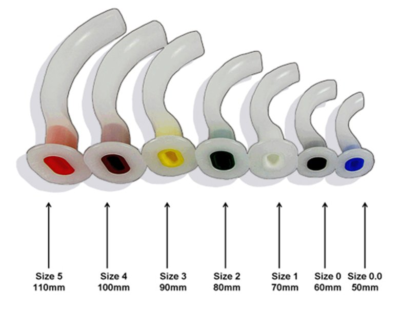
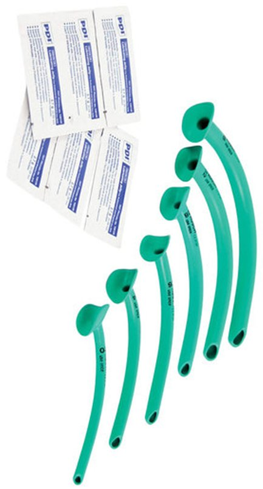
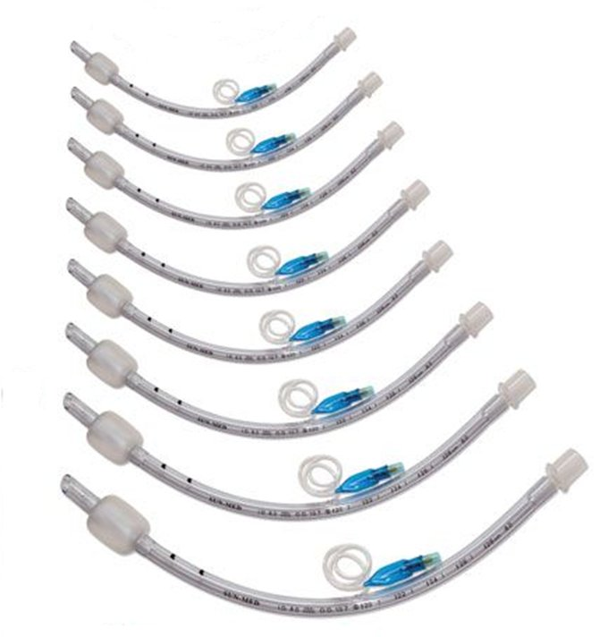
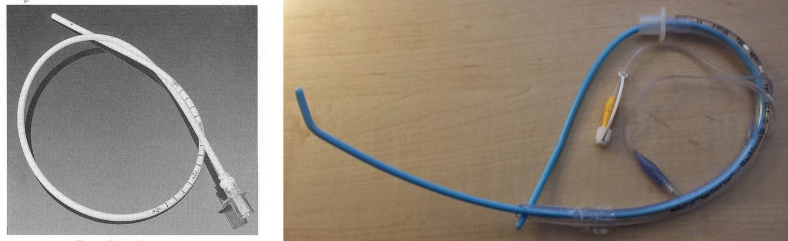
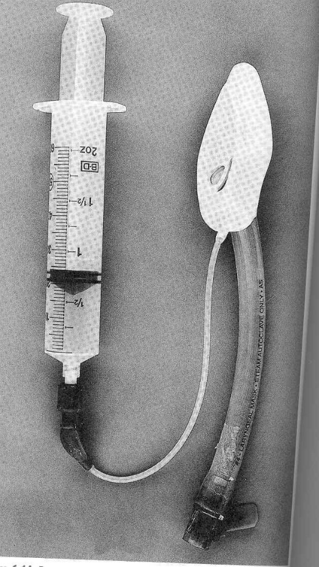
1.3 · Why give a nebulizer treatment
- A nebulizer delivers liquid medication directly to the airways.
- The liquid medication is chosen for the specific treatment the condition needs.
- Secretion clearance is a rationale for nebulizer therapy: it helps clear airway secretions.
- Inhalers are challenging in certain situations, so a nebulizer is chosen over an inhaler when an inhaler is hard for the patient to use.
- Severe exacerbations of respiratory illnesses are a reason to deliver inhaled medication by nebulizer.
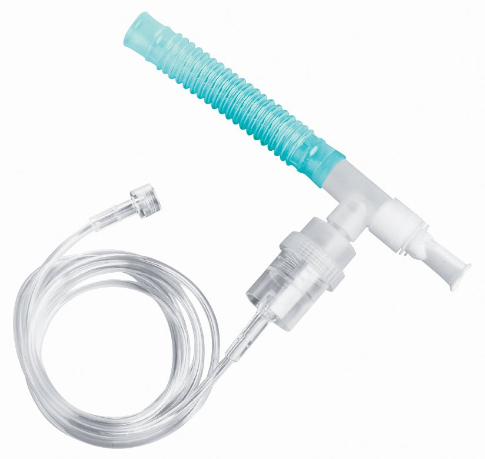
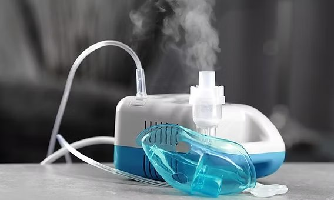
1.4 · Comparing the delivery systems
In order of how sick the patient is, from mild to severe:
| Device | Flow type | Flow | Fraction of inspired oxygen | Used for |
|---|---|---|---|---|
| Nasal cannula | Low flow | 1–6 L/min | 24–44% (about 4% per liter) | Mild hypoxia (most commonly used) |
| Simple mask | Low flow | 5–10 L/min | .35–.50 (5–6 L/min 35%, 6–7 40%, 7–8 50%) | Mild to moderate respiratory distress |
| Partial rebreather | — | At least 10 L/min | The slides disagree (see the box above) | Some exhaled gas gets into the reservoir bag; not commonly used |
| Non-rebreather | Low flow device, but with a high fraction | 10–15 L/min | 60–100% | Severely hypoxic patients who are still ventilating well; reservoir bag plus a one-way valve that stops the patient inhaling exhaled air |
| Venturi mask | High flow | 4–10 L/min, adjusted in increments | 24–50%, precise; different ports change it | Chronic obstructive pulmonary disease, for the precision you can dial in |
| Air-entrainment nebulizer | Air entrainment | Variable | Fixed; not recommended above .50 | Aerosol mask, open face mask, T-piece, tracheostomy collar |
Simple mask when the nose is blocked. With both nostrils packed a nasal cannula would not deliver; a simple mask, a low flow device for mild to moderate distress that covers the nose and mouth, can still deliver oxygen at 5-10 L/min, whichever way she breathes.
Cannula ceiling and the non-rebreather. The cannula's fraction tops out at 44%, so more flow gains nothing; the non-rebreather mask, used in severely hypoxic patients who are still ventilating well, delivers 60-100% at 10-15 L/min, while for mild hypoxia the nasal cannula is the most commonly used device.
Amount of oxygen delivered Slide 20
| Device | Fraction of inspired oxygen (FiO2) | Flow range |
|---|---|---|
| Simple mask | .35–.50 | 5–10 L/min |
| Partial rebreather mask | .40–.70 | At least 10 L/min |
| Nonrebreather mask | .60–1.0 | At least 10 L/min |
| Venturi mask (the slide’s “Venti-Mask”) | .24–.50 | Variable |
| Air-entrainment nebulizer (the slide’s “Air Ent Neb”) | .21–1.0 | Variable |
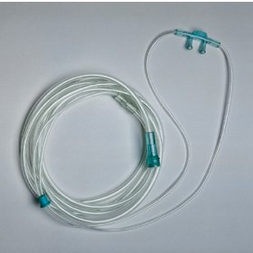
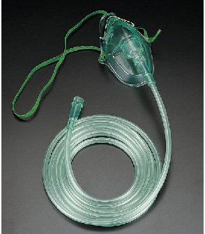
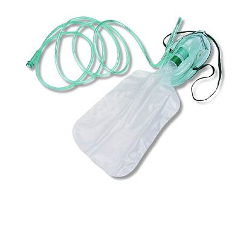
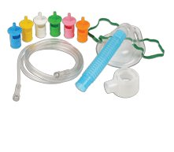
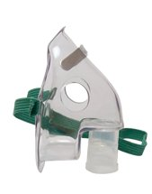
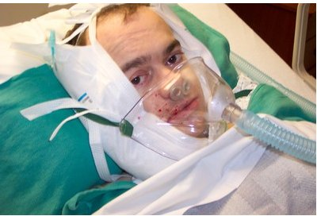
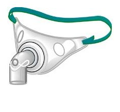
1.5 · Evaluating the patient’s response
- Clinical assessment: symptom improvement, work of breathing, color and perfusion.
- Objective data: oxygen saturation improves (the target varies); on an arterial blood gas, a rise in the partial pressure of oxygen without a rise in carbon dioxide, and correction of the pH.
- Vital signs.
- Further monitoring for complications.
So after the clinical and objective assessment come vital signs and further monitoring for complications, even when the patient is improving. A good response is a higher partial pressure of oxygen with no rise in carbon dioxide; a rising carbon dioxide is not a good response.
1.6 · Selecting and applying oxygen; home oxygen
Match the device to the need (1.4): nasal cannula for mild hypoxia, simple mask for mild to moderate distress, non-rebreather for severe hypoxia with good ventilation, Venturi mask when a precise fraction matters; the advanced airways of 1.2 sit above them all.
Home oxygen needs documented hypoxia by arterial blood gas or pulse oximetry, at rest, with exertion and/or during sleep, performed at the time of need: while the patient still needs the oxygen, so a hospitalized patient is qualified before discharge, not after the need has passed.
A normal resting saturation does not end the assessment: the next step is to check saturation with exertion (and during sleep).
| Setting | Qualifies when |
|---|---|
| Rest | Oxygen saturation ≤ 88% on room air, or partial pressure of arterial oxygen ≤ 55 mm Hg |
| Exertion | Saturation ≤ 88% and improves when oxygen is given |
| Sleep | Saturation ≤ 88% with a drop of 5% or more from baseline |
| Medicare group | Values | Recertify |
|---|---|---|
| Group I (qualifies) | Partial pressure of oxygen ≤ 55 mm Hg or saturation ≤ 88% | 12 months |
| Group II (conditional) | Partial pressure of oxygen 56–59 mm Hg or saturation 89% plus pulmonary hypertension, cor pulmonale (right heart failure) or polycythemia (hematocrit above 56%) | 3 months |
Home oxygen qualification, Centers for Medicare & Medicaid Services (CMS)/Medicare Slide 6
| Situation | Qualifying criteria (arterial oxygen = partial pressure of oxygen in arterial blood) | Notes |
|---|---|---|
| Resting (room air) | Arterial oxygen ≤ 55 mm Hg or saturation ≤ 88% | Group I qualification |
| Resting (conditional) | Arterial oxygen 56–59 mm Hg or saturation = 89% + evidence of pulmonary hypertension, cor pulmonale, or hematocrit > 56% | Group II qualification |
| During sleep | Arterial oxygen ≤ 55 mm Hg or saturation ≤ 88% with a ≥ 5% drop from baseline | Qualifies for nocturnal oxygen |
| During exertion | Arterial oxygen ≤ 55 mm Hg or saturation ≤ 88% during exercise and improves with oxygen | Qualifies for ambulatory oxygen |
| Recertification | Group I: 12 months · Group II: 3 months | Repeat testing required |
Hematocrit in Group II. A hematocrit above 56%, which indicates polycythemia, supports Group II home oxygen qualification when the oxygen value is borderline (56 to 59 mm Hg or 89% saturation).
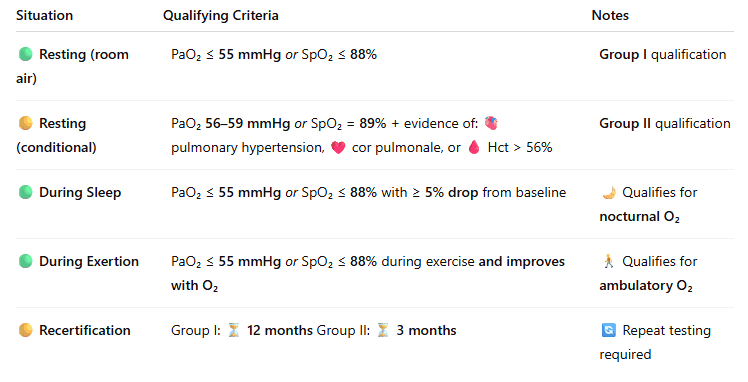
1.7 · Patient education
- Oxygen is highly flammable, and tanks contain compressed gas.
- No smoking in the home; post “No Smoking” signs and possibly “Oxygen in Use” signs.
- Keep oxygen at least 10 feet from heat sources: pilot lights, electric appliances, candles.
- Avoid petroleum-based products: lip balms, lotions, oils, grease.
- Working smoke and carbon monoxide alarms, tested monthly.
- Proper storage and disposal of tanks.
1.8 · The devices, point by point
Nasal cannula
Defining feature: the everyday low flow device for mild hypoxia; about 4% per liter, capped at 44%
- What it is
- Low flow nasal prongs; the delivered fraction varies with respiratory rate, inspiratory flow and tidal volume.
- Flow
- 1–6 L/min (turning past 6 adds nothing); humidity above 4 L/min.
- Fraction delivered
- 24–44% (room air 21%).
- Who it is for
- Mild hypoxia; the most commonly used device.
Slides 8–11
Simple mask
Defining feature: low flow, 5–10 L/min, for mild to moderate distress
- What it is
- Low flow mask; the delivered fraction varies with the patient’s breathing.
- Flow
- 5–10 L/min.
- Fraction delivered
- .35–.50 (5–6 L/min 35%, 6–7 L/min 40%, 7–8 L/min 50%).
- Who it is for
- Mild to moderate respiratory distress.
Slides 12–13, 20
Non-rebreather mask
Defining feature: reservoir bag plus one-way valve; the highest fraction (60–100%) for the severely hypoxic patient still ventilating well
- What it is
- A low flow device, but with a high fraction; the one-way valve prevents inhaling exhaled air.
- Flow
- 10–15 L/min, enough to keep the bag from collapsing on inspiration.
- Fraction delivered
- 60–100%.
- Who it is for
- Severely hypoxic patients who are still ventilating well.
Slides 15, 17, 20
Venturi mask
Defining feature: the high flow device: a precise, fixed fraction chosen by port
- What it is
- High flow air-entrainment mask; different ports change the fraction; it does not fluctuate with demand.
- Flow
- 4–10 L/min, adjusted incrementally; total flow above the patient’s inspiratory demand.
- Fraction delivered
- 24–50%.
- Who it is for
- Chronic obstructive pulmonary disease, for the precision you can dial in.
Slides 16–17, 20
2 · Acid-Base Part I
Lecture 34 · Megan B. Finck, MMS, PA-C · Tuesday 27 October 2026
Instructional Objectives
ACID - BASE: PART I — Megan B. Finck, MMS, PA-C
- Describe the major buffer systems of the body.
- Explain how acid-base disorders affect electrolytes and oxygenation.
- Identify mechanisms for maintaining acid-base homeostasis.
- Identify the etiologies, clinical manifestations, and management of simple acid-base disorders, including:
- Respiratory acidosis
- Respiratory alkalosis
- Metabolic acidosis
- Metabolic alkalosis
- Identify compensatory mechanisms for simple acid-base disorders.
- Identify simple acid-base disorders by interpreting diagnostic test results and patient presentations
Quoted as the syllabus prints it (page 17, “Acid - Base: Part I”). Answered in order in 2.2–2.7; 2.1 sets out the definitions and normal values the rest depends on.
What Prof. Finck said the class is expected to know (from the lecture recording; every fact below still comes from the slides).
- The normal values — “burn this into your eyeballs, the 7.35 to 7.45,” with carbon dioxide 40 and bicarbonate 24 as the working midpoints. Starred in 2.1.
- Treatment: “the answer to how do we treat an acid-base problem is always going to be correct the underlying disorder.”
- Respiratory acidosis: chronic obstructive pulmonary disease is “the first thing that comes to mind”; the sleepy, confused patient; acute versus chronic read from how far the kidneys have compensated. The obesity hypoventilation syndrome triad is “a frequent question.”
- Respiratory alkalosis: the paper bag “doesn’t actually do anything” (placebo).
- Metabolic alkalosis: the saline-responsive type is the common one; compensation rarely takes carbon dioxide above 55; urine chloride splits the two types, then blood pressure splits the unresponsive ones; licorice is “a unicorn.”
- Metabolic acidosis, “by far the most complex”: the two mnemonics, and the Winter formula — “I want you to commit to memory” — along with the anion gap calculation. Starred in 2.6 and 2.7.
- The compensation table: “not that you memorize this exact table, but have a sense for how things change acutely versus chronically.” Quiz questions give its ratios; they never give the Winter or anion gap formulas.
The recording has a gap: slides 45–53 (metabolic acidosis, the anion gap and its errors) were taught after the break and were not captured, so they carry no starred emphasis beyond what she said later. The four board cases at the end of the lecture are not in the deck; she will post them, and nothing here or in the quizzes is built from them.
Where the slides are loose or disagree
- Unsustainable pH (slide 8). The slide gives below 6.7 or above 7.6; other sources quote about 6.8 and 7.8. The slide’s values are keyed.
- Chronic respiratory acidosis ratio (slide 59). The table says bicarbonate rises 3.5 mEq/L per 10 mm Hg; on the recording she rounded to 4 for the arithmetic. No question turns on 3.5 versus 4.
- Exogenous alkali (slide 43) is listed with the hypertensive saline-unresponsive causes; it is usually grouped with the normotensive ones. No question asks its blood-pressure group.
- “Inappropriate retention of alkali” (slide 45) is listed as a way to get metabolic acidosis; slide 53 gives the mechanism as loss of bicarbonate. Read it as loss of alkali.
- Spellings on the slides: “alkalai” is alkali, “Isoniazide” is isoniazid, “Ethelyne” is ethylene glycol.
2.1 · Definitions and normal values
| Arterial value | Normal | Working midpoint |
|---|---|---|
| pH | 7.35–7.45 | 7.40 |
| Partial pressure of carbon dioxide | 36–44 mm Hg | 40 |
| Bicarbonate | 22–26 mEq/L | 24 |
| Partial pressure of oxygen | 80–100 mm Hg (decreases with age) | — |
| Oxygen saturation | above 95% (decreases with age) | — |
| Base difference | −2 to +2 | — |
Venous blood: pH 7.31–7.41, oxygen 30–50 mm Hg, carbon dioxide 40–52 mm Hg, saturation 60–85%, bicarbonate 22–28 mEq/L.
Normal blood gas values Slide 6
| Measurement | Arterial blood | Venous blood |
|---|---|---|
| pH (range) | 7.40 (7.35–7.45) | 7.36 (7.31–7.41) |
| Partial pressure of oxygen, mm Hg (decreases with age) | 80–100 | 30–50 |
| Partial pressure of carbon dioxide, mm Hg | 36–44 | 40–52 |
| Oxygen saturation, % (decreases with age) | > 95 | 60–85 |
| Bicarbonate, mEq/L | 22–26 | 22–28 |
| Base difference (deficit/excess) | −2 to +2 | −2 to +2 |
- Acidemia is a pH below 7.35; alkalemia a pH above 7.45. Acidosis and alkalosis are the pathologic conditions with excessively acidic or alkaline body fluids and tissues.
- A simple acid-base disorder is one primary disturbance with its corresponding compensation; a mixed disorder is more than one primary disturbance at the same time.
- An anion carries a negative charge, a cation a positive charge.
2.2 · The buffer systems
Acid-base homeostasis is necessary for cellular and enzyme function. It is maintained by three systems:
- Chemical buffering, extracellular and intracellular.
- Respiratory mechanisms — control of carbon dioxide (fast).
- Renal mechanisms — control of plasma bicarbonate, over hours to days.
2.3 · Effects on electrolytes and oxygenation
| Acidosis | Alkalosis | |
|---|---|---|
| Potassium | In acidosis, hydrogen ions move into cells and potassium moves out: hyperkalemia | In alkalosis, hydrogen ions move out of cells and potassium moves into cells, so serum potassium falls: hypokalemia |
| Hemoglobin and oxygen | Acidosis lowers hemoglobin’s affinity for oxygen and shifts the curve to the right, so more oxygen is released to the tissues (delivery increases) | Alkalosis increases hemoglobin’s affinity for oxygen and shifts the curve to the left, so less oxygen reaches the tissues (delivery decreases) |
| Calcium | — | In alkalosis a high pH increases calcium binding to albumin: in severe respiratory alkalosis, tetany from low calcium |
| Chloride | Chronic respiratory acidosis: hypochloremia (acid excreted as ammonium chloride). Normal-gap metabolic acidosis: hyperchloremic; elevated gap: normochloremic | Respiratory alkalosis: kidneys retain chloride, hyperchloremia. Metabolic alkalosis: low chloride |
Acidosis and potassium. In acidosis, hydrogen ions shift from the extracellular fluid into cells and potassium shifts out of cells in exchange, raising the serum potassium, so a marked acidemia makes hyperkalemia expected.
Alkalosis and hemoglobin. Alkalosis increases hemoglobin's affinity for oxygen, so less oxygen is released and delivery to the tissues decreases: the leftward shift of the oxygen-hemoglobin dissociation curve.
Acidosis and hemoglobin. Acidosis decreases hemoglobin's affinity for oxygen and shifts the oxygen-hemoglobin dissociation curve to the right, so hemoglobin releases oxygen more readily and delivery to the tissues increases.
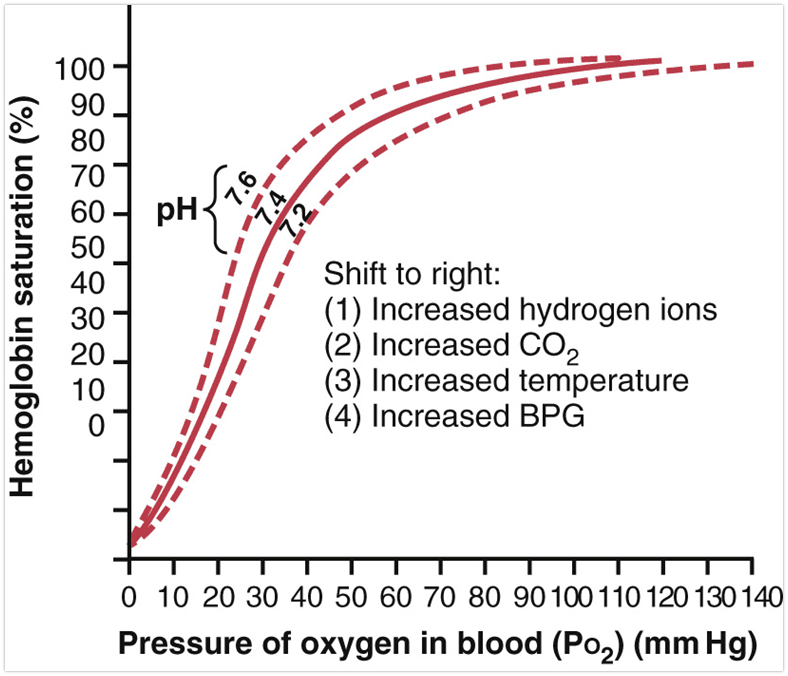
Unsustainable pH: below 6.7 or above 7.6. It may cause cardiac hypocontractility and irritability, seizures, cerebral edema and metabolic disturbances, and may warrant therapy to normalize the serum pH along with treatment of the underlying cause.
2.4 · How the body keeps the pH
The respiratory mechanism (breathing)
- At steady state, carbon dioxide production matches excretion. More ventilation, less carbon dioxide; less ventilation, more carbon dioxide. When ventilation increases, carbon dioxide decreases.
- A brainstem chemoreceptor regulates respiration: more carbon dioxide → lower cerebral pH → more ventilation. A rise in carbon dioxide therefore leads to increased ventilation.
- Brain stem chemoreceptor. A chemoreceptor in the brain stem regulates respiration: increased carbon dioxide lowers cerebral pH, which the brain stem answers with increased ventilation to clear the carbon dioxide.
- Hypercapnia is usually from under-excretion (hypoventilation), not excess production; hypocapnia usually from excess excretion (hyperventilation).
The renal mechanism
- Controls plasma bicarbonate by excreting or retaining filtered bicarbonate, over hours to days.
The rules of compensation
- The body attempts to correct the disturbance, but compensation never returns the pH to normal and never corrects it beyond normal. The underlying disorder must be corrected to restore the pH.
- A respiratory cause is compensated by the kidneys (bicarbonate retained or excreted); a metabolic cause by the lungs (carbon dioxide retained or excreted).
2.5 · The four simple disorders
Respiratory acidosis
Defining feature: hypoventilation → carbon dioxide above 40 → low pH; the sleepy, confused patient
- Definition
- Hypoventilation raising the partial pressure of carbon dioxide (greater than 40) and causing acidemia; may come with hypoxemia; acute or chronic.
- Who gets it (causes)
- Acute: airway obstruction; pulmonary disease (pneumonia, asthma, pulmonary edema, aspiration pneumonitis); central nervous system depression (recreational drugs, intracranial catastrophe, intravenous sedation); neuromuscular disorders (myasthenia gravis, Guillain-Barré syndrome); thoracic trauma (pneumothorax, flail chest). Chronic: lung disease (chronic obstructive pulmonary disease, interstitial lung disease, idiopathic pulmonary fibrosis); neuromuscular disorders (muscular dystrophy, amyotrophic lateral sclerosis); obesity hypoventilation syndrome.
- Risk factors
- ★ Obesity hypoventilation syndrome (Pickwickian syndrome): the triad of obesity, sleep disordered breathing and chronic hypercapnia.
- Classic signs & symptoms
- Somnolence, confusion, altered mental status.
- Physical exam findings
- Asterixis (a flapping tremor), myoclonus (muscle jerks). Severe hypercapnia: increased cerebral blood flow, intracranial and cerebrospinal fluid pressure; papilledema (optic disc swelling) may be seen.
- Diagnostics / tests
- Low arterial pH, increased carbon dioxide, elevated bicarbonate (compensation); hypochloremia in chronic acidosis. Acute versus chronic: how far the bicarbonate has risen (2.6).
- First-line treatment
- Treat the underlying cause. Acute: restore ventilation. Chronic: careful oxygen titration; avoid rapid, aggressive carbon dioxide reduction.
- Complications
- Lowering carbon dioxide too fast in chronic disease causes a post-hypercapnic metabolic alkalosis (the retained bicarbonate is left unopposed).
Chronic respiratory acidosis on a blood gas. A pH just below normal with a high carbon dioxide that matches it; with a carbon dioxide of 55, a bicarbonate of 30 (a rise of about 5, 1.5 x 3.5) is the size of chronic compensation. Obesity, sleep disordered breathing and chronic hypercapnia form the obesity hypoventilation triad.
Slides 21–28
Respiratory alkalosis
Defining feature: hyperventilation → low carbon dioxide → high pH; light-headed, perioral numbness, tingling
- Definition
- Hyperventilation lowering the partial pressure of carbon dioxide and causing alkalemia.
- Who gets it (causes)
- Central: voluntary or psychogenic hyperventilation, cerebrovascular accident, increased intracranial pressure. Hypoxia: high altitude, severe anemia, ventilation-perfusion mismatch, hypotension. Toxic: salicylates (aspirin), caffeine, nicotine, catecholamines, thyroxine. Pulmonary: pulmonary embolism, pneumonia, pulmonary edema, mechanical hyperventilation, interstitial lung disease. Endocrine: pregnancy, hyperthyroidism. Also septicemia, heat exposure, hepatic failure.
- Risk factors
- Any of the causes above; anxiety is the everyday one.
- Classic signs & symptoms
- Light-headedness, anxiety, perioral numbness, paresthesias.
- Physical exam findings
- In severe cases, tetany from low calcium (a high pH increases calcium binding with albumin).
- Diagnostics / tests
- Elevated pH, low carbon dioxide; decreased bicarbonate in chronic respiratory alkalosis. Compensation: first, cells release hydrogen ions in exchange for potassium; then the kidneys excrete bicarbonate and retain chloride (low bicarbonate, hypokalemia, hyperchloremia).
- First-line treatment
- Treat the underlying cause; hyperventilation is usually self-limited. ★ A paper bag is not necessary: it does not correct carbon dioxide, may lower oxygen, and works as a placebo.
- Complications
- Rapid correction of chronic respiratory alkalosis may cause a post-hypocapnia metabolic acidosis.
Acute respiratory alkalosis on a blood gas. Alkalemia with a low carbon dioxide that matches it is respiratory; a bicarbonate that fell about 2 per 10 mm Hg is the acute response. Psychogenic hyperventilation and high altitude (hypoxia-induced hyperventilation) are listed causes, and perioral numbness is a listed finding.
Slides 29–35
Metabolic alkalosis
Defining feature: high bicarbonate → high pH; urine chloride splits saline responsive from unresponsive
- Definition
- Elevated serum bicarbonate causing alkalemia. Two types: saline responsive (more common), a sign of extracellular volume contraction; and saline unresponsive, a high bicarbonate with euvolemia or hypervolemia.
- Who gets it (causes)
- Saline responsive: diuretic therapy, post-hypercapnia, loss of hydrochloric acid (vomiting, nasogastric suction), antacids, volume contraction. Saline unresponsive, normotensive: severe potassium depletion, hypoparathyroidism and hypercalcemia. Saline unresponsive, hypertensive: primary aldosteronism, exogenous alkali, mineralocorticoids, licorice.
- Risk factors
- Diuretics, vomiting or suction, antacids, too-rapid correction of chronic hypercapnia.
- Classic signs & symptoms
- No characteristic findings; may have orthostatic hypotension.
- Physical exam findings
- From the associated hypokalemia: weakness, hyporeflexia.
- Diagnostics / tests
- Elevated pH and bicarbonate; increased carbon dioxide with compensation; low potassium; low chloride. ★ Urine chloride: below 25 mEq/L in saline responsive, above 40 mEq/L in saline unresponsive; then blood pressure sorts the unresponsive causes.
- First-line treatment
- Treat the underlying cause. If saline responsive: isotonic saline for the extracellular volume deficit, and stop diuretics if present.
- Complications
- Compensation is hypoventilation; carbon dioxide rarely goes above 55 mm Hg, so a higher value suggests a concurrent primary respiratory acidosis. Less oxygen delivered to tissues (left shift).
Diuretic metabolic alkalosis. High pH with a high bicarbonate is metabolic alkalosis, and a low urine chloride marks the saline-responsive type; diuretic therapy is a saline-responsive cause, and low potassium and weakness fit.
Slides 36–44
Metabolic acidosis
Defining feature: low bicarbonate → low pH; calculate the anion gap, then check compensation with the Winter formula
- Definition
- Reduced serum bicarbonate causing acidemia: acids added (intrinsic or exogenous), acid excretion impaired, or bicarbonate lost. Two types: normal anion gap and elevated anion gap.
- Who gets it (causes)
- Elevated gap (MUDPILES): methanol, metformin; uremia; diabetic ketoacidosis; paraldehyde; isoniazid, iron; lactic acidosis; ethylene glycol; salicylates (aspirin), starvation (metabolic and drug or chemical anions). Normal gap (USEDCAR): ureteral diversion; saline infusion; exogenous acid; diarrhea; carbonic anhydrase inhibitors; adrenal insufficiency; renal tubular acidosis (loss of bicarbonate, chloride retention, acids).
- Risk factors
- Increased acid production or ingestion, loss of bicarbonate, decreased renal acid excretion.
- Classic signs & symptoms
- Mainly those of the underlying disorder, plus compensatory hyperventilation.
- Physical exam findings
- Compensation: the lungs increase ventilation to lower carbon dioxide and offset the acidosis. In severe cases, profound hyperventilation: Kussmaul respirations (increased tidal volume and tachypnea) in diabetic ketoacidosis.
- Diagnostics / tests
- Decreased pH, bicarbonate and carbon dioxide; hyperkalemia may be present. Normal gap is hyperchloremic; elevated gap is normochloremic. Anion gap = sodium − (chloride + bicarbonate), normal 9–15.
- First-line treatment
- Treat the underlying disorder, for either gap type; assess the compensatory response with the Winter formula.
- Complications
- Carbon dioxide higher than the Winter formula predicts means an added respiratory acidosis, which can signal impending respiratory failure. A pH below 6.7 is unsustainable.
Elevated-gap acidosis on a blood gas. Low pH with a low bicarbonate and a gap above 9 to 15 is an elevated-gap metabolic acidosis: uremia and diabetic ketoacidosis are elevated-gap causes, and Kussmaul breathing is the compensation.
Normal-gap acidosis on a blood gas. Low pH with a low bicarbonate, a gap within 9 to 15 and a high chloride is a normal-gap, hyperchloremic acidosis: saline infusion (chloride retention) and bicarbonate loss in diarrhea are listed causes.
Slides 45–58
MUDPILES = causes of an increased anion gap; USEDCAR = causes of a normal anion gap. In class she asked you to know which causes fit in MUDPILES and which fit in USEDCAR. The letters spell a word; they are not in order of how often each cause happens. Most common, in her order: increased gap, diabetic ketoacidosis, lactic acidosis, uremia, then everything else; normal gap, diarrhea.
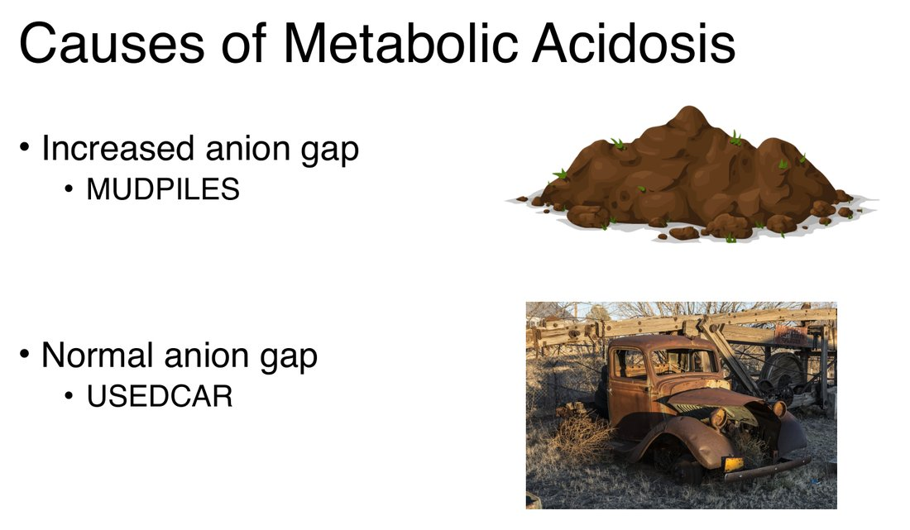
MUDPILES: causes of increased anion gap metabolic acidosis (slide 55)
| Letter | Cause |
|---|---|
| M | Methanol, metformin |
| U | Uremia |
| D | Diabetic ketoacidosis |
| P | Paraldehyde |
| I | Isoniazid, iron |
| L | Lactic acidosis |
| E | Ethylene glycol |
| S | Salicylates, starvation |
| Think about: metabolic anions; drug and chemical anions. Three letters carry two causes each (M, I, S). | |
USEDCAR: causes of normal anion gap metabolic acidosis (slide 56)
| Letter | Cause |
|---|---|
| U | Ureteral diversion |
| S | Saline infusion |
| E | Exogenous acid |
| D | Diarrhea |
| C | Carbonic anhydrase inhibitors |
| A | Adrenal insufficiency |
| R | Renal tubular acidosis |
| Think about: loss of bicarbonate; chloride retention; acids (hydrochloric acid equivalents, ammonium chloride). | |
The anion gap
- The concentration of anions other than chloride and bicarbonate. Albumin accounts for most of the normal gap; lactate, ketones, phosphate, sulfate and other organic anions also contribute.
- An elevated gap is usually from more unmeasured anions, less often from fewer unmeasured cations (calcium, magnesium, potassium, gamma-globulins).
- A normal gap does not exclude acidosis or a high unmeasured anion concentration and should not override clinical concern. Sources of error: hypoalbuminemia, hypernatremia or hyponatremia, antibiotics.
2.6 · Compensation
Winter formula (metabolic acidosis): expected carbon dioxide = 1.5 × measured bicarbonate + 8, plus or minus 2.
- Measured carbon dioxide higher than expected: metabolic acidosis together with respiratory acidosis — can be a sign of impending respiratory failure.
- Salicylates appear on both lists: the elevated-gap causes and the toxic causes of respiratory alkalosis.
- Example: bicarbonate 16 → 1.5 × 16 + 8 = 32, so 30–34 mm Hg is appropriate compensation.
Winter formula with a bicarbonate of 10. Expected carbon dioxide = 1.5 x 10 + 8 = 23, plus or minus 2, so 21 to 25 mm Hg is the appropriately compensated value.
| Disorder | Primary change | Compensation | Size of compensation (given in questions) |
|---|---|---|---|
| Respiratory acidosis, acute | ↑ carbon dioxide | ↑ bicarbonate | 1 mEq/L per 10 mm Hg rise |
| Respiratory acidosis, chronic | ↑ carbon dioxide | ↑ bicarbonate | 3.5 mEq/L per 10 mm Hg rise |
| Respiratory alkalosis, acute | ↓ carbon dioxide | ↓ bicarbonate | 2 mEq/L per 10 mm Hg fall |
| Respiratory alkalosis, chronic | ↓ carbon dioxide | ↓ bicarbonate | 5 mEq/L per 10 mm Hg fall |
| Metabolic acidosis | ↓ bicarbonate | ↓ carbon dioxide | 1.3 mm Hg per 1 mEq/L fall (use the Winter formula) |
| Metabolic alkalosis | ↑ bicarbonate | ↑ carbon dioxide | 0.75 mm Hg per 1 mEq/L rise; rarely above 55 |
Expected bicarbonate in acute respiratory alkalosis. Acutely, bicarbonate falls about 2 per 10 mm Hg fall in carbon dioxide: a fall of 15 (40 to 25) takes it from 24 to about 21 mEq/L. Altitude is a listed hypoxic cause of hyperventilation.
- Renal compensation for respiratory acidosis begins 6–12 hours after onset; complete compensation may take days. That is why a small bicarbonate rise means acute and a large one chronic.
- Acute or chronic? In respiratory acidosis, bicarbonate rises about 1 mEq/L per 10 mm Hg rise in carbon dioxide when acute and about 3.5 when chronic. In respiratory alkalosis, bicarbonate falls about 2 mEq/L per 10 mm Hg fall in carbon dioxide when acute and about 5 when chronic. A bicarbonate still near normal (22–26) with an abnormal carbon dioxide means an acute disorder; a large change means a chronic one.
- Metabolic alkalosis: carbon dioxide rises about 0.75 mm Hg for each 1 mEq/L rise in bicarbonate. Example: bicarbonate 32 is 8 above 24, so expected carbon dioxide is 40 + 8 × 0.75 = 46 mm Hg.
- In a mixed disorder each disturbance has its own compensation; they may push the pH the same way or opposite ways, and can be hard to recognize. A normal pH with clearly abnormal values points to one.
2.7 · Reading a blood gas
- Acidosis or alkalosis? Look at the pH.
- Respiratory or metabolic? See whether the carbon dioxide or the bicarbonate is the one consistent with the pH.
- Possible mixed disorder? Is the pH more or less than expected for the reported values?
- Compensation? Respiratory disorder: what is the expected bicarbonate? Metabolic disorder: what is the expected carbon dioxide?
- Don’t neglect the patient: does the presentation match the lab values?
Anion gap = sodium − (chloride + bicarbonate); normal 9–15. Example: sodium 138, chloride 104, bicarbonate 14 → 138 − 118 = 20: an elevated-gap acidosis.
Anion gap of 30. Anion gap = sodium - (chloride + bicarbonate) = 140 - (102 + 8) = 30, above the normal 9 to 15: an elevated-gap metabolic acidosis, fitting ethylene glycol, the E of the mnemonic.
Anion gap of 10. Anion gap = 138 - (114 + 14) = 10, within the normal 9 to 15; with a low bicarbonate and a high chloride, this is a normal-gap (hyperchloremic) metabolic acidosis.
| pH | Carbon dioxide | Reading | Then |
|---|---|---|---|
| Below 7.4 (acidosis) | Above 40 | Respiratory acidosis | Is the lung disorder acute or chronic? |
| Below 7.4 | Below 40 | Compensation for metabolic acidosis | Check for an increased anion gap; history for renal, gastrointestinal and systemic causes |
| Above 7.4 (alkalosis) | Above 40 | Compensation for metabolic alkalosis | History for gastrointestinal, diuretic and antacid causes |
| Above 7.4 | Below 40 | Respiratory alkalosis | History for hyperventilation syndrome, drug and mechanical ventilator causes |
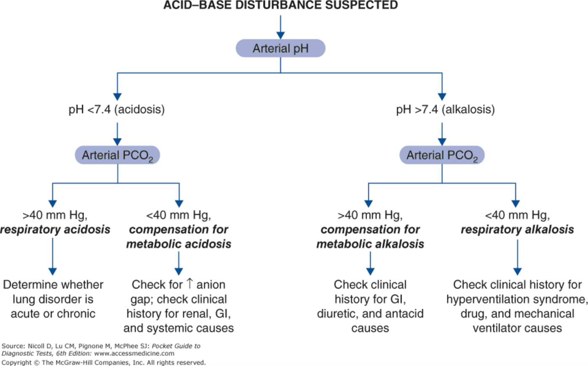
2.8 · Traps
| Trap | What the slides say |
|---|---|
| Compensation can bring the pH back to normal | It never returns the pH to normal or past it; a normal pH with abnormal values suggests a mixed disorder |
| A paper bag fixes hyperventilation | Not necessary; it does not correct carbon dioxide and may lower oxygen (placebo) |
| Lower the carbon dioxide quickly in a chronic retainer | Avoid it: post-hypercapnic metabolic alkalosis. Use careful oxygen titration |
| A carbon dioxide of 60 in metabolic alkalosis is just compensation | Compensation rarely exceeds 55; consider a concurrent respiratory acidosis |
| A normal anion gap rules out a high-gap process | It does not; low albumin lowers the gap, and the gap should not override clinical concern |
| Acidosis causes hypokalemia | Acidosis moves potassium out of cells: hyperkalemia. Alkalosis causes hypokalemia |
| Acidosis reduces oxygen delivery | Acidosis shifts the curve right and increases delivery; alkalosis reduces it |
| A low carbon dioxide with a low pH is respiratory alkalosis | A low pH is an acidosis; the low carbon dioxide is compensation for a metabolic acidosis |
3 · Asthma
Lecture 35 · Megan B. Finck, MMS, PA-C · Wednesday 28 October 2026
Instructional Objectives
ASTHMA — Megan B. Finck, MMS, PA-C
- Define asthma.
- Compare and contrast the etiologies, epidemiology, risk factors, clinical manifestations, differential diagnosis, diagnostic testing (including ordering and interpretation), management (acute and chronic, including applicable rehabilitative and palliative care), patient education, and prognosis of asthma.
- Define, describe, and discuss aspergillosis as it relates to asthma.
- Develop a treatment plan for patients with asthma based on symptoms and physical examination.
- List the components of patient education in treating asthma, including use of peak flow meters, metered-dose inhalers, nebulizers.
- Describe how PFTs are utilized to aid in the diagnosis of pulmonary diseases and monitoring of patients with those diseases
- Identify medical care strategies for patients with asthma in the following patient populations. 1. adolescent 2. adult 3. elderly
Quoted as the syllabus prints it (pages 17–18), leading letters kept. Answered in order: a in 3.1; b across 3.1–3.4 (prognosis and course 3.1, etiology and risk factors 3.2, manifestations, testing and differential 3.3, management 3.4); c in 3.3 (the aspergillosis block); d in 3.4; e in 3.3 (peak flow, action plan) and 3.4 (inhaler, spacer and nebulizer use); f in 3.3 (spirometry); g in 3.5. The eight-point summary of asthma sits at the end of 3.1.
What Prof. Finck said is and is not tested (recording of Wednesday 28 October, two parts, 95.8 minutes; every fact below still comes from the slides).
- Adults means 12 and up. “The only ones you’re responsible for for CMS1 are the ones for the adults. Don’t worry about anybody that’s younger than 12.” Pediatric content returns in the spring.
- Classifying severity from a description. “If I were to give you a description of a patient … decide this patient has moderate persistent asthma, or this patient has intermittent asthma.” Intermittent “follows the rule of twos”; “focus in on the mild and moderate.” Not tested: whether a given ratio is normal for a 20-year-old versus an 80-year-old.
- Epidemiology. “I’m not going to test you on epidemiologic statistics.” The numbers are context only.
- Drug classes, not trade names. “It’s more important to understand the class of medication … rather than the specific trade names.” Monoclonal antibodies: “we’re not going to spend much time talking about this.”
- Emergency management is not testable. “The emergency management of asthma is not testable for CMS one.” Slides 97–105 are for reference only.
- Patient education is weighted up. “Really important is the patient education”: written action plan, inhaler and spacer technique, peak flow zones, rinsing after an inhaled steroid.
- Rescue inhaler. The slides say albuterol; she said clinicians increasingly follow the Global Initiative for Asthma, which pairs it with an inhaled steroid, and added “I’m not gonna ask you the question that has conflicting information.” The quizzes key albuterol only.
Where the slides are loose or disagree
- Guideline PDFs (slide 87). She called the Asthma Care Quick Reference and the At-A-Glance guide “testable material” (adult columns). They are not slides, so no step-by-step drug choice is built into the quizzes. Read those pages yourself.
- Systemic effects of high-dose inhaled steroids (slide 75). The slide says “minimal with high-dose therapy”; high doses carry more systemic effect. Only the local effects are keyed.
- Slides 78–82 file cromolyn, tiotropium and theophylline under “Long-acting Bronchodilators.” Cromolyn is a mast cell stabilizer, not a bronchodilator. Items key what each slide says about the drug, not the heading.
- Pneumococcal vaccine for ages 19–64 (slide 86) names a product and an age band; the quizzes key only that influenza and pneumococcal vaccination prevent exacerbations, and that the intranasal influenza vaccine needs caution.
- Bronchodilator response (slide 53) reads “12% or 10% of predicted”; the quizzes use 12%.
- Meloxicam (slide 93) is listed as a selective anti-inflammatory drug that may be used in aspirin-sensitive asthma; current guidance treats it as only partly selective at higher doses. The slide is keyed.
- First-line controller. The slides prefer a daily inhaled corticosteroid; the Global Initiative for Asthma guidelines prefer an as-needed inhaled steroid-formoterol combination in mild asthma. The slides are keyed.
- “Forced Expiratory Ventilation” (slides 9–10) is a typo for forced expiratory volume in 1 second.
- Silent chest and referral are inferences. Slide 51 says only that wheeze may be absent in a severe exacerbation; the reason (too little air moves) is the standard explanation, and in the recording the lecturer called a quiet chest “scary” and said it “should be considered urgent or emergent.” The quiz asks only that a quiet chest signals a severe exacerbation. Slide 84 says antibody drugs are used by pulmonology and allergy specialists; the guide line “refractory asthma despite confirmed adherence is referred to such a specialist” follows from it.
3.1 · Definition and pathophysiology
Asthma is a chronic inflammatory airway disorder with reversible airflow obstruction (some long-standing cases become irreversible), with recurrent breathlessness and wheezing and difficulty getting air out of the lungs (air trapping, hyperinflation). Airway hyper-responsiveness is excessive bronchoconstriction to a trigger that would not affect a normal airway; more hyper-responsiveness means more frequent symptoms. Airflow falls through bronchoconstriction, airway edema, vascular congestion and sometimes mucus plugging, so the forced expiratory volume in 1 second, the ratio of that volume to forced vital capacity, and the peak expiratory flow all fall.
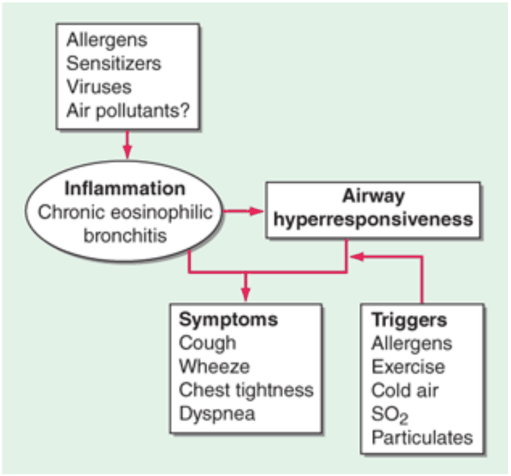
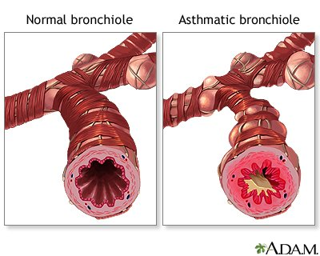
Course: asthma can appear at any age (peak presentation at 3 years), may go quiet in adolescence and return in adulthood. Severity rarely varies for a patient: mild asthma rarely becomes severe, severe asthma is usually severe at onset. Risk of death rises with frequent bronchodilator use, no inhaled corticosteroid, poor compliance with it, and previous near-fatal admissions.
Asthma deaths. Death from asthma is uncommon and declining in affluent countries, credited to widespread use of inhaled corticosteroids; having no inhaled corticosteroid, or poor compliance with it, raises the risk of death.
Asthma
Defining feature: reversible airflow obstruction with airway hyper-responsiveness; trouble getting air out
- Definition
- A chronic inflammatory airway disorder with reversible airflow obstruction (some long-standing cases become irreversible) and airway hyper-responsiveness.
- Who gets it
- Any age, peak presentation at 3 years; may go quiet in adolescence and return. Extrinsic (allergic) asthma is most common; intrinsic is about 10% and starts in adulthood.
- Risk factors
- Genetic predisposition; atopy (atopic triad: allergic rhinitis, asthma, atopic dermatitis); obesity (body mass index above 30); early viral infection; occupational sensitizers.
- Classic signs & symptoms
- Episodic wheeze, dyspnea, chest tightness, cough, sputum; often worse at night (peak bronchial reactivity 3–4 in the morning).
- Physical exam findings
- Often normal between exacerbations. In exacerbations: accessory muscle use, leaning forward, prolonged expiratory phase; wheezing may be absent in a severe exacerbation.
- Diagnostics / tests
- Spirometry before and after a short-acting bronchodilator: reduced 1-second volume and ratio, improvement of 12% or more; provocation testing if spirometry is not diagnostic; home peak flow (a 20% swing = poor control).
- First-line treatment
- A short-acting beta-2 agonist (albuterol) rescue inhaler for every patient; an inhaled corticosteroid is the preferred first-line controller for persistent asthma; a long-acting beta-2 agonist is never used alone; trigger avoidance and education.
- Complications
- Exacerbations; risk of death rises with frequent bronchodilator use, no or poorly taken inhaled steroid and a previous near-fatal admission; allergic bronchopulmonary aspergillosis (exacerbations despite treatment).
Slides 7–14, 23–36, 44–61, 65–76
3.2 · Etiology, risk factors and types
- Endogenous: genetic predisposition (polygenic); atopy (raised immunoglobulin E on allergen exposure; the atopic triad is allergic rhinitis, asthma and atopic dermatitis); obesity (body mass index above 30: more asthma, harder to control); early viral infection (respiratory syncytial virus in infancy).
- Obesity. Asthma is more frequent in people with a body mass index above 30, and their symptoms are more difficult to control, although the mechanism is unknown.
- Environmental: inhaled allergens (dust mites most common; pet dander, cockroaches, pollens, fungal spores); occupational sensitizers (independent of atopy, improves on weekends and vacations); air pollution and passive smoke (controversial); diet (controversial); the hygiene hypothesis. Allergen avoidance does not reduce the risk of developing asthma; early exposure may be protective.
- Maternal smoking. Under passive cigarette smoke there is evidence that maternal smoking is a risk factor for asthma, although its effect is difficult to separate from the increased risk of respiratory infections in exposed children.
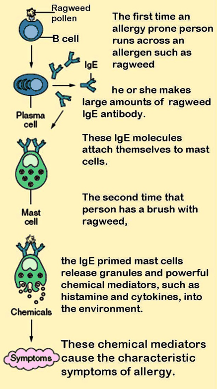
| Type | Key points |
|---|---|
| Extrinsic (allergic) | Most common; allergen-triggered; atopic; exam may show swollen nasal mucosa, eczema, nasal polyps. |
| Intrinsic | About 10%; negative skin tests and normal immunoglobulin E; adult onset, usually more severe, nasal polyps common, may be aspirin sensitive. Same pathology as extrinsic. |
| Occupational | Weeks or years after sensitization; better away from work. |
| Catamenial | Symptoms at predictable points in the menstrual cycle. |
| “Cardiac asthma” | Wheezing from decompensated heart failure. |
| Exercise-induced | Common in children and adolescents; starts during or within 3 minutes after exercise, peaks at 10–15 minutes, resolves by 60 minutes. |
| Aspirin-sensitive | 1–5% of asthmatics; minutes to 12 hours after aspirin; rhinorrhea, conjunctival irritation, facial flushing, wheeze. |
Cardiac asthma. Cardiac asthma is wheezing caused by decompensated heart failure rather than by asthma itself.
Exercise-induced bronchospasm timing. Exercise-induced bronchospasm is common in children and adolescents, begins during or within 3 minutes after exercise, peaks in 10 to 15 minutes and resolves by 60 minutes.
Aspirin-sensitive asthma. About 1 to 5% of asthmatics become worse with aspirin, through a genetic predisposition that increases inflammatory mediators. Symptoms may occur within minutes of aspirin ingestion or may be delayed up to 12 hours, and they include rhinorrhea, conjunctival irritation, facial flushing and wheezing.
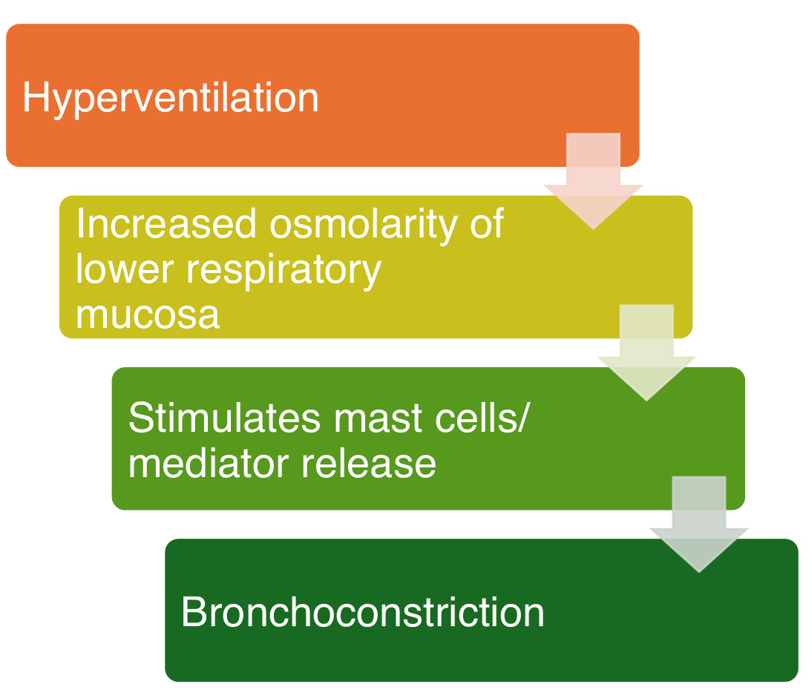
Triggers: allergens, viral infections, aspirin and beta blockers (avoid), exercise, cold air and weather, pollution, tobacco and combustion products, stress, occupational exposures.
Viral triggers. Viral infections trigger exacerbations by a poorly understood mechanism; the list is influenza, rhinovirus, respiratory syncytial virus, coronavirus and other upper respiratory viruses.
3.3 · Diagnosis, severity and monitoring
Visit steps. Initial visit: diagnose, assess severity, start medication and demonstrate use, develop a written action plan, schedule follow-up. Follow-up: assess control, review medicines and compliance, adjust, update the plan, schedule follow-up.
- History and exam: triggers, frequency, pattern, impact on activity, atopy. Symptoms vary: episodic wheeze, dyspnea, chest tightness, cough, sputum; often worse at night (circadian peak in bronchial reactivity 3–4 in the morning). Exam may be normal between exacerbations. In exacerbations: accessory muscle use, leaning forward; wheezing may be absent in a severe exacerbation (only decreased breath sounds with a prolonged expiratory phase).
- Work of breathing. Increased work of breathing during an exacerbation shows as accessory muscle use, leaning forward and hunched shoulders.
- Prolonged expiratory phase. A prolonged expiratory phase during normal respiration correlates with obstruction.
- Spirometry (objective; best before and after a short-acting bronchodilator; repeat annually): reduced 1-second volume and ratio; improvement of 12% or more after a bronchodilator strongly supports asthma. Results depend on effort: coach the patient.
- Repeat spirometry. Spirometry is best done before and after a short-acting bronchodilator and is repeated annually to monitor progression.
- Other tests: bronchial provocation (methacholine or histamine) if spirometry is not diagnostic, not recommended if the 1-second volume is under 65% predicted; exercise challenge if exercise-induced bronchospasm is suspected; chest x-ray usually normal or hyperinflated; allergy skin or blood testing to identify triggers; fractional exhaled nitric oxide shows airway inflammation.
- Chest radiograph. The chest radiograph in asthma is usually normal or may show hyperinflation from air trapping, so it supports rather than makes the diagnosis and mainly helps exclude other causes of symptoms.
- Peak flow at home: sets a baseline; morning before and afternoon after the bronchodilator; a 20% change between morning and afternoon, or day to day, means poor control.
Spirometry with obstructive pulmonary disease (slide 55)
| FEV1 (forced expiratory volume in 1 second), L | FEV1/FVC (forced vital capacity), % | Peak flow, L/min | |
|---|---|---|---|
| Normal | 4.0–6.0 | 80–90 | 550–650 (male); 400–500 (female) |
| Mild obstruction | 3.0 | 70 | 300–400 |
| Moderate obstruction | 1.6 | 50 | 200–300 |
| Severe obstruction | 0.6 | 40 | 100 |
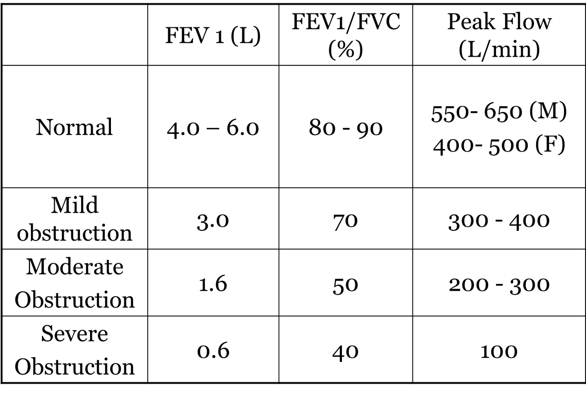
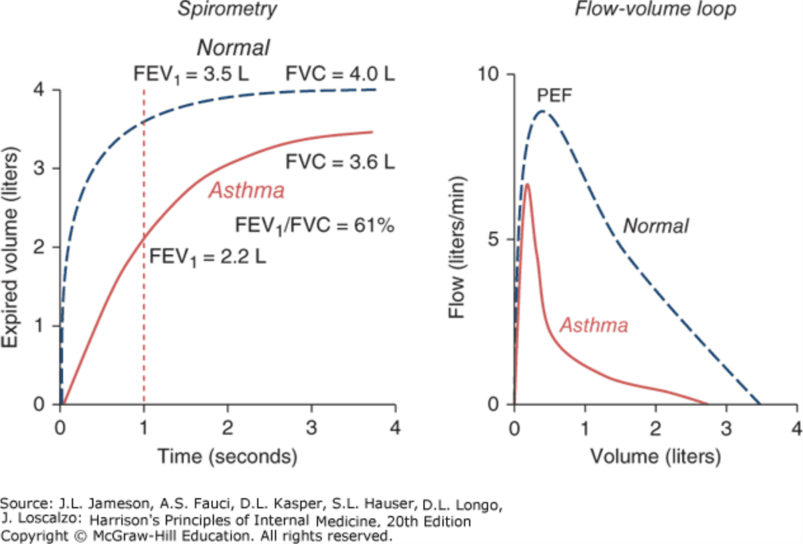
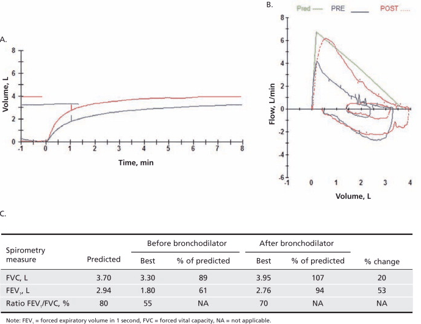
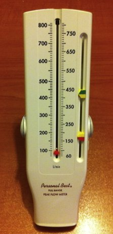
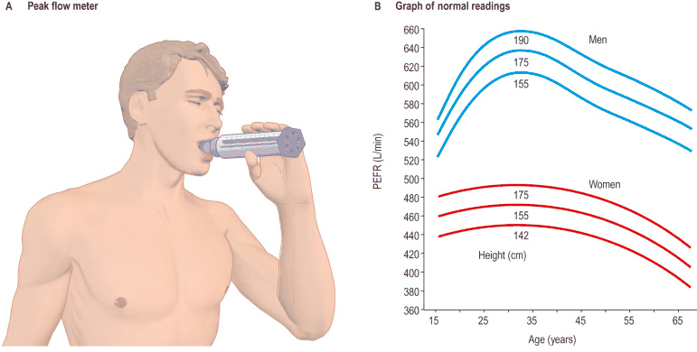
| 12 years and older | Intermittent | Mild persistent | Moderate persistent | Severe persistent |
|---|---|---|---|---|
| Symptoms | 2 or fewer days/week | More than 2 days/week, not daily | Daily | Throughout the day |
| Night awakenings | 2 or fewer/month | 3–4/month | More than once/week, not nightly | Often 7/week |
| Short-acting beta-2 agonist use | 2 or fewer days/week | More than 2 days/week, not daily, not more than once a day | Daily | Several times a day |
| Interference with activity | None | Minor | Some | Extremely limited |
| 1-second volume | Above 80% (normal between exacerbations) | Above 80% | 60% to 80% | Below 60% |
| Exacerbations needing oral steroids | 0–1/year | 2 or more/year | ||
Assign severity to the most severe category in which any feature occurs. Two or more steroid-requiring exacerbations in a year may be treated as persistent asthma even with intermittent-level impairment.
Severe persistent asthma. Symptoms throughout the day, rescue use several times a day, night awakenings often 7 times a week, extreme limitation and a 1-second volume below 60% predicted define severe persistent asthma.
Mild persistent asthma. Symptoms and rescue use on more than 2 days a week but not daily, 3 to 4 night awakenings a month, minor limitation, and a 1-second volume above 80% with a normal ratio all fall in the mild persistent column.
Moderate persistent asthma. Daily symptoms, daily short-acting beta-2 agonist use, night awakenings more than once a week but not nightly, some limitation, and a forced expiratory volume in 1 second between 60% and 80% predicted define moderate persistent asthma. Severity is assigned to the most severe category in which any feature occurs, so a single moderate persistent feature (daily symptoms, or a 1-second volume between 60% and 80% predicted) makes the class moderate persistent even when the other features are milder.
Intermittent asthma. Symptoms and rescue use on 2 or fewer days a week, night awakenings 2 or fewer times a month, no interference with normal activity, a 1-second volume above 80% with a normal ratio (normal lung function between exacerbations), and 0 to 1 steroid-requiring exacerbations a year sit in the intermittent column.
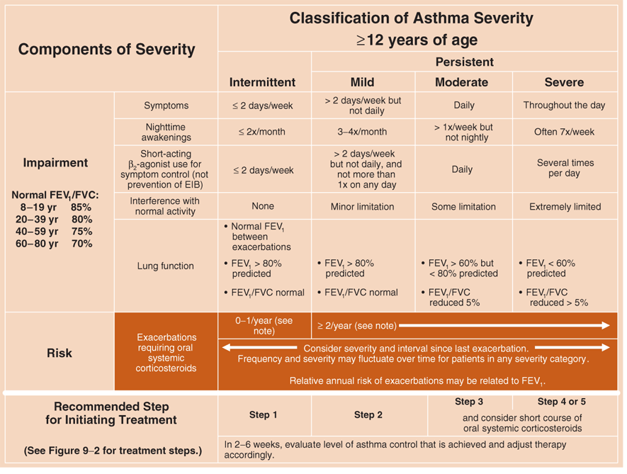
Classification of asthma severity, 12 years and older: the rows the table above shortens (slide 62)
| Component | Intermittent | Mild persistent | Moderate persistent | Severe persistent |
|---|---|---|---|---|
| Lung function | Normal FEV1 (forced expiratory volume in 1 second) between exacerbations; FEV1 > 80% predicted; FEV1/FVC (forced vital capacity) normal | FEV1 > 80% predicted; FEV1/FVC normal | FEV1 > 60% but < 80% predicted; FEV1/FVC reduced 5% | FEV1 < 60% predicted; FEV1/FVC reduced > 5% |
| Recommended step for initiating treatment | Step 1 | Step 2 | Step 3 | Step 4 or 5 |
| Under Steps 3 and 4 or 5 the slide adds “and consider short course of oral systemic corticosteroids”; across all columns: “In 2–6 weeks, evaluate level of asthma control that is achieved and adjust therapy accordingly.” Risk row: consider severity and interval since last exacerbation; frequency and severity may fluctuate over time for patients in any severity category; relative annual risk of exacerbations may be related to FEV1. | ||||
| The slide’s normal FEV1/FVC by age (8–19 years 85%, 20–39 years 80%, 40–59 years 75%, 60–80 years 70%) is left to the picture: the lecturer said she will not ask whether a value is normal for a given age. | ||||
Diagnosis. Asthma is diagnosed from the history, the physical examination and an objective measurement of lung function. The examination may be normal between exacerbations, which is why an objective lung function measurement is needed for the diagnosis; extrinsic asthma may still show nasal mucosal swelling, increased secretions, eczema or nasal polyps.
Action plan zones: green (no symptoms, peak flow 80% or more of personal best): take the daily controller; yellow (symptoms, waking at night, 50–79%): add quick-relief medicine and keep the controller; red (very short of breath, quick-relief medicine not helping, under 50%): medical alert. Danger signs: trouble walking or talking from breathlessness, blue lips or fingernails.
Asthma action plan zones (slides 88–89)
| Zone | Signs | Peak flow (slide 88) | Action |
|---|---|---|---|
| Green: “Doing well” / Go | Slide 88: no cough, wheeze, chest tightness, or shortness of breath during the day or night; can do usual activities. Slide 89 (all of these): breathing is good; no cough or wheeze; sleep through the night; can work and play | ≥ 80% of my best peak flow | Take long-term control medicines each day (include an anti-inflammatory); slide 89: use preventive medicine |
| Yellow: “Asthma is getting worse” / Caution | Slide 88: cough, wheeze, chest tightness, or shortness of breath; or waking at night due to asthma; or can do some, but not all, usual activities. Slide 89 (any of these): first signs of a cold; exposure to known trigger; cough; mild wheeze; tight chest; coughing at night | 50–79% | Add quick-relief medicine (short-acting beta-2 agonist) and keep taking green zone medicine; slide 89: call your primary care provider |
| Red: “Medical alert!” / Danger | Slide 88: very short of breath; or quick-relief medicines have not helped; or cannot do usual activities; or symptoms are same or get worse after 24 hours in yellow zone. Slide 89 (getting worse fast): medicine is not helping; breathing is hard and fast; nose opens wide; ribs show; can’t talk well | < 50% | Take quick-relief medicine and oral steroid, then call your doctor now; slide 89: get help from a doctor |
| Danger signs (slide 88) | Trouble walking and talking due to shortness of breath; lips or fingernails are blue | — | Take 4 or 6 puffs of quick-relief medicine and go to the hospital or call an ambulance now |
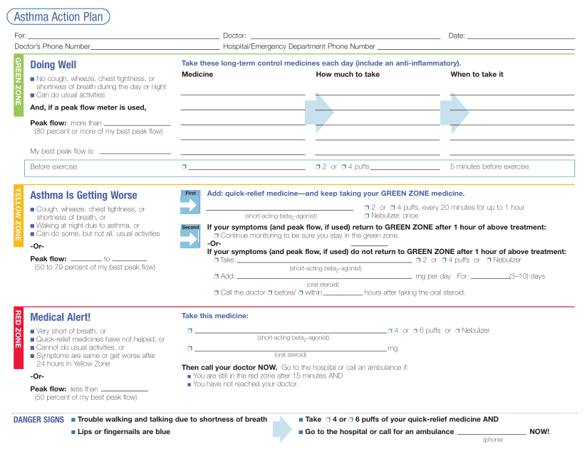
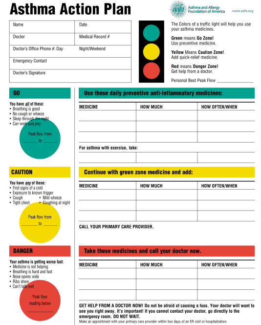
Differential: upper airway (vocal fold paralysis or dysfunction, foreign body, laryngotracheal mass); lower airway (chronic obstructive pulmonary disease, bronchiectasis, cystic fibrosis); psychiatric (conversion, emotional laryngeal wheezing, factitious disorder); aspergillosis.
Allergic bronchopulmonary aspergillosis
Defining feature: hypersensitivity to Aspergillus fumigatus in a patient with asthma or cystic fibrosis
- Definition
- A hypersensitivity reaction to Aspergillus species, almost exclusively in asthma or cystic fibrosis.
- Who gets it
- Patients with asthma or cystic fibrosis.
- Pathology
- Exposure causes a vigorous immunoglobulin E and G response.
- Classic presentation
- Acute asthma symptoms and exacerbations despite treatment.
- Diagnostics
- Raised immunoglobulin E and G antibodies to Aspergillus fumigatus.
Slide 65
3.4 · Treatment
Goals: minimize symptoms, prevent exacerbations and emergency visits, normal lung function, no activity limits, minimal drug side effects; compliance is key (non-compliance is the most common reason for poor control; steroid-resistant asthma is very uncommon). Non-drug: trigger avoidance and environmental control. Every patient needs a rescue agent.
| Class | Key facts |
|---|---|
| Short-acting beta-2 agonists (albuterol, levalbuterol, terbutaline) | Relax airway smooth muscle; inhaler or nebulizer; last 3–6 hours; before exercise they prevent exercise-induced bronchoconstriction; rising use means poor control; side effects tremor, palpitations. |
| Inhaled corticosteroids | Preferred first-line for persistent asthma; twice-daily dosing; maximum response may take months; local effects hoarseness, cough, thrush: use a spacer and rinse the mouth. |
| Systemic corticosteroids | Exacerbations (short course, no taper); long-term only in refractory cases at the minimum dose, with calcium and vitamin D; side effects truncal obesity, osteoporosis, bruising, gastric ulcers, depression, hypertension. |
| Long-acting beta-2 agonists | Up to 12 hours; never monotherapy (no anti-inflammatory effect); combine with an inhaled steroid; tremor, palpitations. |
| Mast cell stabilizers (cromolyn) | Prevent symptoms in mild persistent or exercise-induced asthma; do not relieve symptoms once present. |
| Anticholinergics (tiotropium) | Block the cholinergic reflex part of bronchoconstriction; less effective than beta-2 agonists, slow onset, little systemic absorption. |
| Methylxanthines (theophylline) | Mild bronchodilation; narrow toxic range; toxicity: nausea, vomiting, tachyarrhythmias, headache, seizure, hyperglycemia, hypokalemia; rarely used. |
| Leukotriene modifiers | Modest benefit, add-on, helpful in exercise-induced bronchospasm; less effective than inhaled steroids alone. |
| Monoclonal antibodies | Specialist use; reduce the need for corticosteroids. |
| Immunotherapy | Allergic triggers, best for a single allergen; only in a controlled setting (risk of bronchoconstriction). |
| Vaccination | Influenza yearly and pneumococcal prevent exacerbations; caution with the intranasal influenza vaccine in younger patients. |
Poor control: adherence first. Non-compliance is the most common reason for poor symptom control, and follow-up visits review medications, compliance and correct use before adjusting therapy.
Exercise-induced bronchospasm. It is treated with an inhaled short-acting beta-2 agonist before exercise and is best prevented with regular inhaled corticosteroid use.
Montelukast versus an inhaled steroid. Montelukast is a leukotriene modifier with modest clinical benefit, useful as add-on therapy, and less effective than inhaled corticosteroids as monotherapy; the inhaled steroid is the preferred first-line treatment for persistent asthma.
Trigger avoidance. Non-pharmacological asthma treatment is trigger avoidance and environmental control. Dust mites are the most common inhaled allergen trigger, so reducing exposure at home is the added measure for a patient sensitive to them.
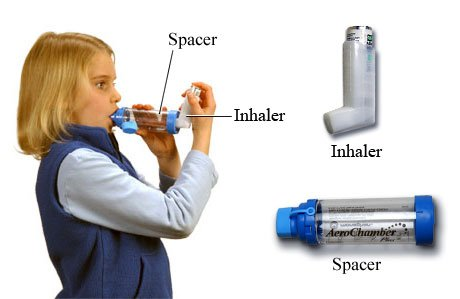
Refractory asthma has two forms: persistent symptoms with poor lung function, or normal lung function with severe exacerbations. Check compliance and technique first; refer to a specialist for antibody therapy.
3.5 · Adolescent, adult and elderly patients
Adult content covers patients 12 and older. Exercise-induced bronchospasm is common in adolescents; spacers and nebulizers are for any age (“I don’t think anybody’s ever too old for either one”); in older adults beta blockers and non-selective anti-inflammatory drugs deserve the same caution as in younger ones.
4 · Chronic Obstructive Pulmonary Disease
Lecture 36 · Lauren Reynolds, MSPA, PA-C · Wednesday 28 October 2026
Instructional Objectives
CHRONIC OBSTRUCTIVE PULMONARY DISEASE (COPD) / CHRONIC OBSTRUCTIVE LUNG DISEASE (COLD) — Lauren Reynolds, MSPA, PA-C
- Compare and contrast the etiologies, epidemiology, risk factors, clinical manifestations, differential diagnosis, diagnostic testing (including ordering and interpretation), management (acute and chronic, including applicable rehabilitative and palliative care), appropriate referrals, patient education, and prognosis of the following pulmonary conditions: 1. Chronic obstructive pulmonary disease / chronic obstructive lung disease a. Chronic bronchitis subtype b. Emphysema subtype
- Describe airflow obstruction in COLD and methods for assessing the severity of the obstruction
- Describe how PFTs are utilized to aid in the diagnosis of pulmonary diseases and monitoring of patients with those diseases
- Identify medical care strategies for chronic obstructive lung disease (COLD)/ chronic obstructive lung disease (COLD) for the following populations. 1. adult 2. elderly
Quoted as the syllabus prints it, leading letters kept. Answered in order: a across 4.1–4.8 (subtypes and how common 4.1, etiology and risk factors 4.2, manifestations and differential 4.3, testing 4.4, chronic and acute management 4.6–4.7, referral and prognosis 4.8); b in 4.4 (the obstruction) and 4.5 (grading its severity); c in 4.4; d in 4.8. The eight-point summary sits at the end of 4.1.
What Prof. Reynolds said is and is not tested (recording of Wednesday 28 October, four parts, 121 minutes, checked against two transcripts; every fact below still comes from the slides).
- Two grouping schemes, both on the slides. The 2020 four-group scheme (A, B, C, D) stays “because it may be what you’re tested on in the boards”; the 2023 and 2026 three-group scheme (A, B, E) is “probably what you’ll be practicing in real life.” Learn both. The group sets the initial treatment.
- Smoking cessation. The slide sets it in red, bold and italics: “the only thing you can do to keep it from getting worse is quit smoking.”
- She declared nothing untestable. No “this is on the exam” list was given, so the slides stand and her emphasis marks only the starred boxes.
- Where she and the slides differ. She said that under the 2026 scheme “any exacerbation makes the person high risk.” Slides 36 and 40 and the Figure 4.2 picture on slide 37 define high risk as 2 or more moderate exacerbations, or 1 leading to hospitalization, in the past year; but the GOLD 2026 assessment pictures on slides 35 and 37 put group E at 1 or more moderate or severe exacerbations, which matches what she said. The slides disagree with each other, so no quiz item places a patient in the disputed zone of a single moderate exacerbation.
Where the slides are loose or disagree
- Group and grade (slide 36). The slide says each group is “typically” certain airflow grades; the quizzes key groups from symptoms and exacerbation history only.
- Inhaled corticosteroid (slide 42) says “usually not used in severe disease” while slide 37 adds one to group E when blood eosinophils are 300 or more. The keyed facts: never alone, raises pneumonia risk.
- Pneumococcal vaccine (slide 48) names products and says one is given at 65. Product names are not keyed; the keyed facts are influenza yearly, pneumococcal at 65 or earlier with severe disease (1-second volume under 40%) or cardiac comorbidity.
- Oxygen (slides 63 and 64). Slide 63 says treat if arterial oxygen is under 55 mmHg or saturation under 88%; the flowchart says 88% or less. It also says societies disagree on the saturation target (88–92%, 90%, at least 90%); no target is keyed.
- BODE index (body mass index, obstruction, dyspnea, exercise) (slide 52). The walk-distance row reads “250–249” (read as 250–349); quiz items avoid walks of 250 to 349 meters.
- Bronchodilator response (slide 26) reads “under 12% means irreversible”; it is keyed only with a post-bronchodilator ratio below 0.70.
4.1 · Definition, subtypes and how common
Chronic obstructive pulmonary disease is an umbrella term: persistent airflow obstruction plus respiratory symptoms caused by inhaled particulate exposure in the setting of genetic, developmental and social factors. It mixes chronic bronchitis and emphysema; the obstruction is chronic and irreversible, unlike asthma.
| Feature | Chronic bronchitis subtype | Emphysema subtype |
|---|---|---|
| Definition | Clinical: chronic productive cough, at least 3 months a year for 2 consecutive years | Pathologic: alveolar wall destruction and permanent airspace enlargement |
| Primary site | Large and small airways (gland hyperplasia, goblet cells, wall thickening) | Respiratory bronchioles and alveoli |
| Obstruction | Airway narrowing and mucus plugging | Loss of elastic recoil: airways collapse on expiration |
| Descriptor | “Blue bloater” | “Pink puffer” |
| Exam | Cough, sputum, rhonchi, possible cyanosis and edema (cor pulmonale) | Thin, pursed-lip breathing, barrel chest, distant breath sounds, hyperresonance |
| Gas exchange | Earlier hypoxemia and hypercapnia | Preserved until late |
| Diffusing capacity | Normal or near normal | Reduced |
| Imaging | Bronchial wall thickening | Hyperinflation, flat diaphragms, bullae |
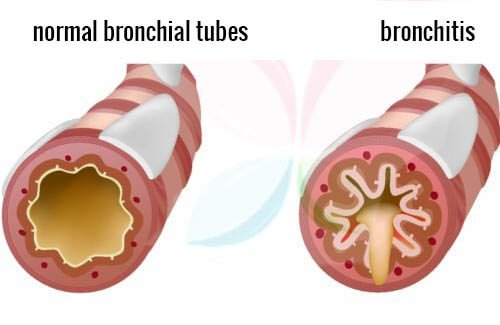
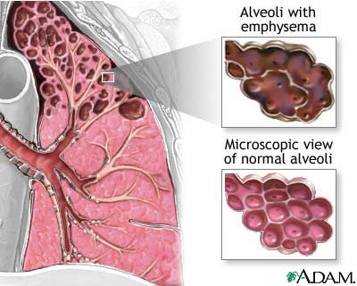
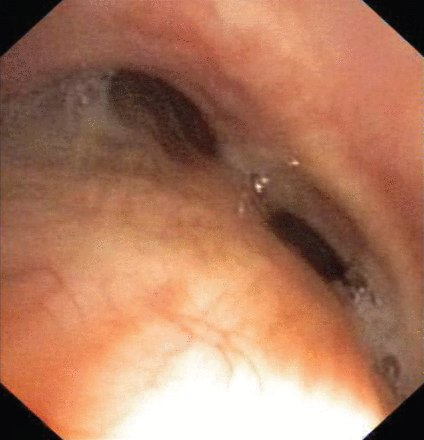
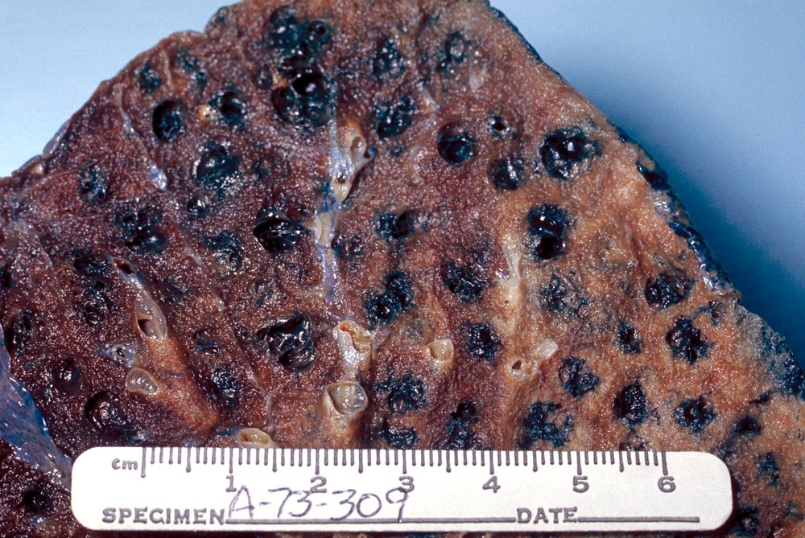
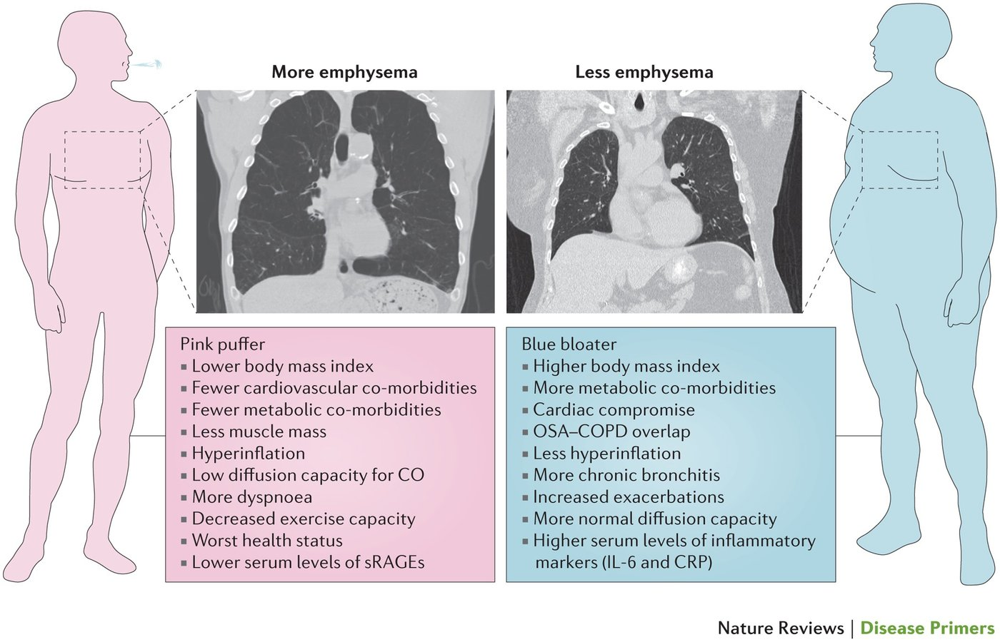
Chronic bronchitis without airflow obstruction is not chronic obstructive pulmonary disease. Small airway disease is narrowing of the bronchioles. Underdiagnosis is very common; symptoms start in midlife and the diagnosis may wait until later adulthood. Blebs lie under the visceral pleura; bullae lie deeper, form their own sacs and are much larger.
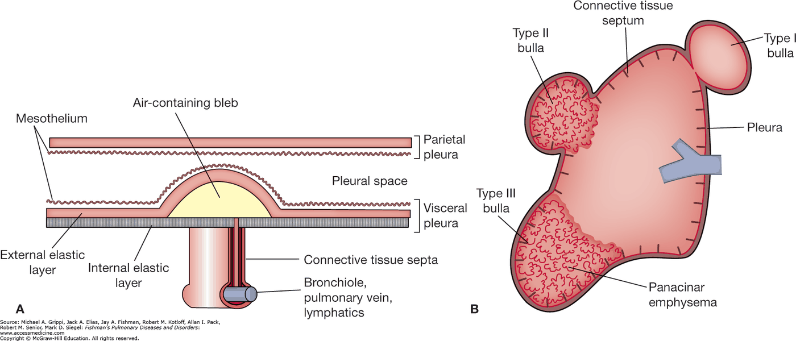
Chronic obstructive pulmonary disease
Defining feature: post-bronchodilator ratio of 1-second volume to forced vital capacity below 0.70 with symptoms, after inhaled exposure
- Definition
- Persistent airflow obstruction plus respiratory symptoms from inhaled particulate exposure; an umbrella over chronic bronchitis (productive cough 3 months a year for 2 years) and emphysema (alveolar wall destruction).
- Who gets it
- Smokers above all; symptoms start in midlife and the diagnosis is often late; never-smokers exposed to biomass smoke; young or unexposed patients with alpha-1 antitrypsin deficiency.
- Risk factors
- Tobacco smoke (about 90%); biomass burning; coal dust, gold mining, welding and fumes; sedentary lifestyle; alpha-1 antitrypsin deficiency.
- Classic signs & symptoms
- Progressive dyspnea (dyspnea on exertion is the early sign), chronic cough, sputum, wheeze, fatigue, exercise intolerance.
- Physical exam findings
- Barrel chest, pursed-lip breathing, accessory muscles, tripoding; decreased breath sounds with wheeze or crackles; distant heart sounds; cyanosis and edema in the chronic bronchitis picture; hyperresonance in emphysema.
- Diagnostics / tests
- Spirometry is required: post-bronchodilator ratio below 0.70; then grade (1-second volume), symptoms (assessment test 10 or more, dyspnea grade 2 or more) and exacerbation history give the group.
- First-line treatment
- Smoking cessation with counseling for every group; group A one bronchodilator, B a long-acting beta agonist plus long-acting antimuscarinic, E the same pair (inhaled steroid added when eosinophils are 300 or more); rehabilitation for B and E; vaccines.
- Complications
- Exacerbations; cor pulmonale; chronic hypoxemia and hypercapnia; comorbid heart disease, lung cancer, osteoporosis, depression.
Slides 5–22, 26, 35–45, 52
4.2 · Etiology, risk factors and alpha-1 antitrypsin deficiency
- Tobacco smoke is primary (about 90%). Smoking cessation and limiting exposure slow progression; treatments otherwise palliate symptoms and reduce hospitalization.
- Only cessation slows progression. Smoking cessation, with limiting exposure to triggers, is the only treatment that can slow progression; other treatments target symptom palliation and fewer hospitalizations.
- Secondary: biomass burning (a major risk in low- and middle-income countries, where never-smokers develop it); occupational coal dust, gold mining, welding and fumes (silica and fiberglass lead to other conditions); sedentary lifestyle.
- Pathophysiology: chronic inflammation, oxidative stress, protease-antiprotease imbalance → lung inflammation, injury, impaired growth and healing with more mucus, accelerated decline.
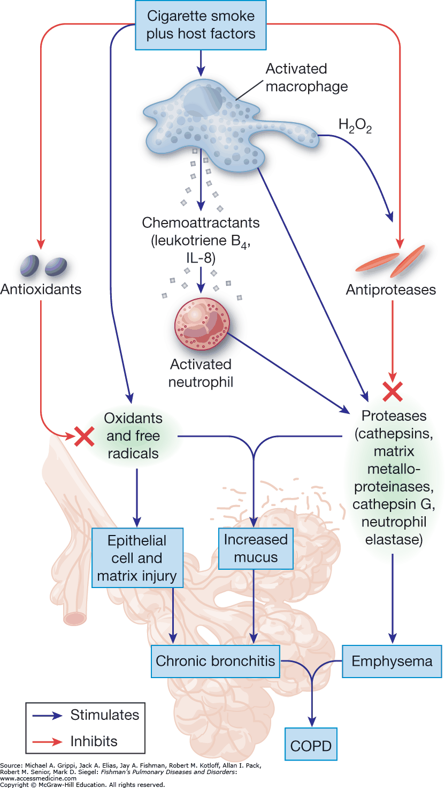
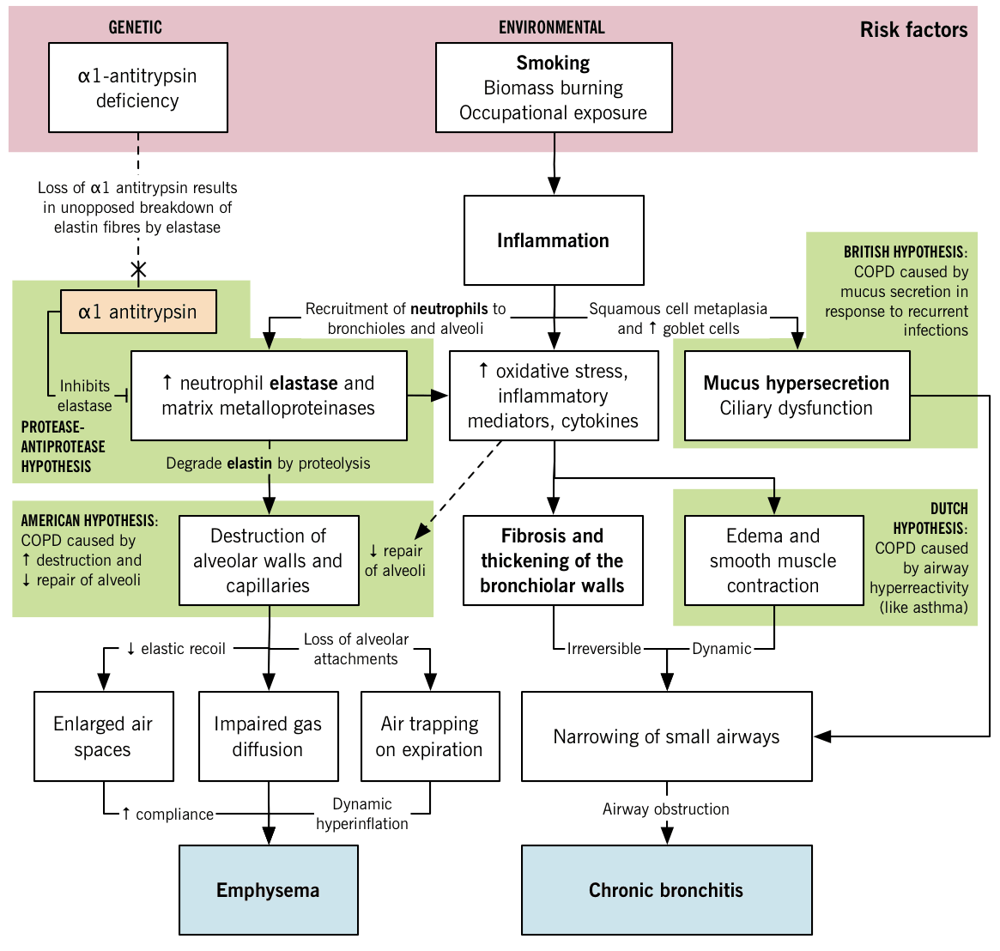
Alpha-1 antitrypsin deficiency
Defining feature: panlobular, lower-lobe emphysema in a young or unexposed patient
- Who gets it
- About 3 or 4 per 10,000; a genetic risk found in nonsmokers.
- Suspect it when
- Emphysema at 45 or under; emphysema in a nonsmoker or minimal smoker; predominantly basilar on the chest film; family history of emphysema.
- Pattern
- Panlobular (lower lobes), unlike the centrilobular upper-lobe pattern of smokers.
- Diagnosis
- Alpha-1 antitrypsin level below 11 micromol/L with a severely deficient genotype.
Emphysema patterns. Emphysema from smoking is centrilobular and predominantly in the upper lobes; the panlobular, lower-lobe pattern belongs to alpha-1 antitrypsin deficiency.
Alpha-1 antitrypsin test. An alpha-1 antitrypsin level below 11 micromol/L together with a severely deficient genotype is diagnostic.
Slides 10–12, 19, 30
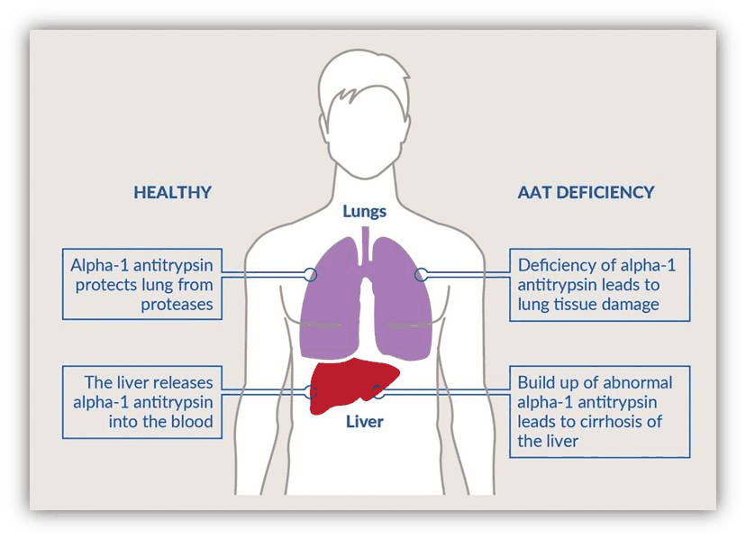
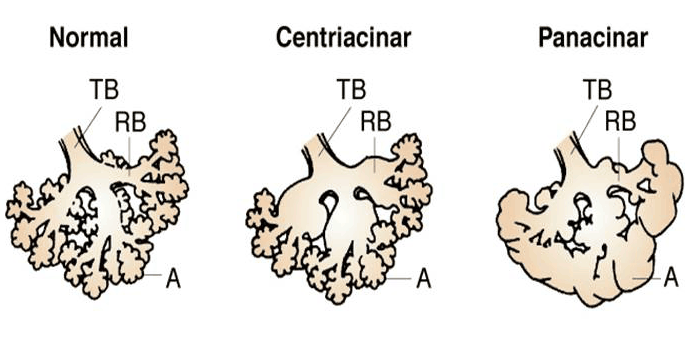
4.3 · Presentation, exam and differential
- Symptoms: progressive dyspnea, chronic cough, wheeze, sputum (more than 3 months a year for 2 years); dyspnea on exertion is the early sign in most; fatigue, exercise intolerance. Symptoms may be subtle at first (prolonged expiration, wheeze alone). Patients are not always thin (inactivity can cause weight gain) and not always productive of sputum (chronic bronchitis or combined disease).
- Exam: respiratory rate above 20–30, saturation below 95% on room air, heart rate above 100; barrel chest, pursed-lip breathing (raises airway pressure to keep airways open), accessory muscles, leaning forward (tripoding) in severe disease; rare clubbing; cyanosis; distended neck veins, particularly in expiration; decreased breath sounds with wheeze or crackles; paradoxical lower intercostal retraction on inspiration (flat diaphragm); distant heart sounds. Poor perfusion can cause syncope and falls; right heart strain (cor pulmonale).
- Cor pulmonale. Cor pulmonale, right heart strain or failure, is a secondary complication of this disease, seen with the chronic bronchitis picture of cyanosis and edema; distended jugular veins, particularly during expiration, and edema fit it.
- Screen for comorbidities: cardiovascular disease, lung cancer, osteoporosis, anxiety and depression, reflux, anemia, skeletal muscle dysfunction.
- Differential: cough with sputum — acute bronchitis, upper respiratory infection, pneumonia; dyspnea on exertion — heart failure, valvular disease, coronary disease, embolism, lung disease (fibrosis, cancer); productive cough plus dyspnea — this disease, pneumonia, lung cancer.
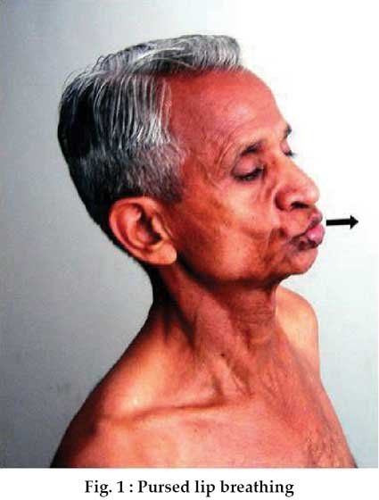
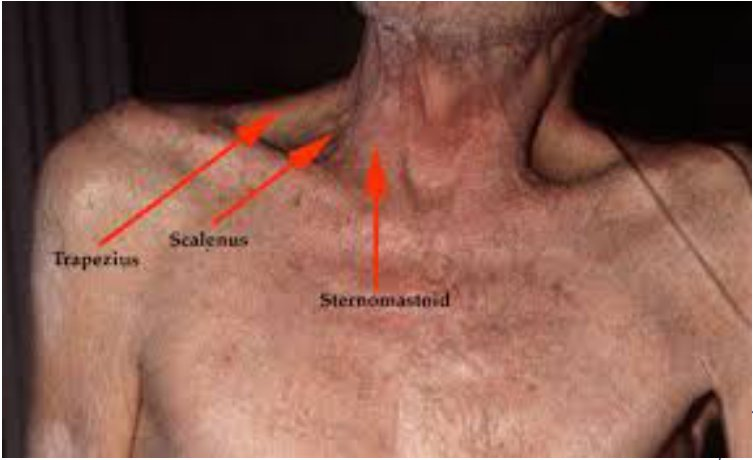
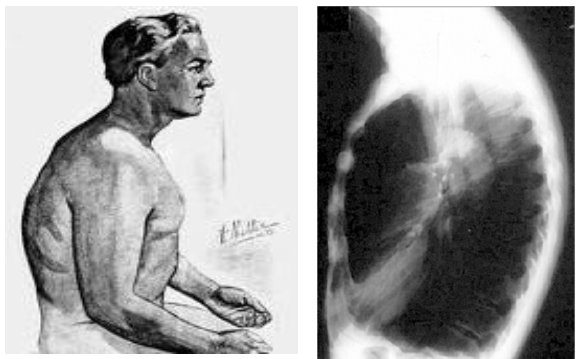
4.4 · Diagnosis and pulmonary function tests
- Spirometry is required, before and after a bronchodilator (albuterol): ratio of the 1-second volume to forced vital capacity below 0.70 confirms; a bronchodilator response of less than 12% signifies irreversible obstruction (asthma reverses).
- Pattern reading: low 1-second volume = obstruction; obstruction with low forced vital capacity = possible mixed disorder, confirmed by total lung capacity; normal ratio with low forced vital capacity = possible restriction, confirmed by total lung capacity.
- Physiology: air trapping (raised residual volume), hyperinflation (raised total lung capacity and functional residual capacity), dynamic hyperinflation with exertion drives dyspnea; the flow-volume loop has a scooped expiratory limb.
- Lung volumes identify hyperinflation or restriction; diffusing capacity is reduced in emphysema, separating it from chronic bronchitis and asthma.
- Other workup: metabolic panel (raised bicarbonate); blood gas only in deterioration or severe exacerbation (chronic hypercapnia, carbon dioxide above 45 mmHg, with compensatory metabolic alkalosis); blood count (anemia, eosinophils); B-type natriuretic peptide if heart failure is suspected; alpha-1 antitrypsin level; chest film (not diagnostic; rules out heart failure or pneumothorax; hyperlucent overinflated lungs, flat diaphragm, bullae, narrow vertical heart); computed tomography generally not needed.
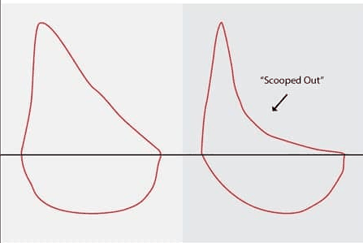
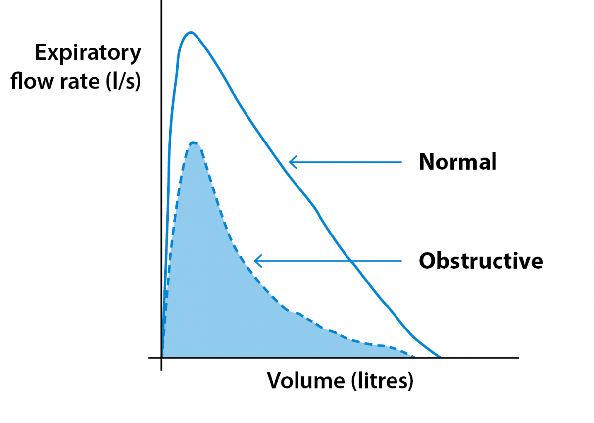
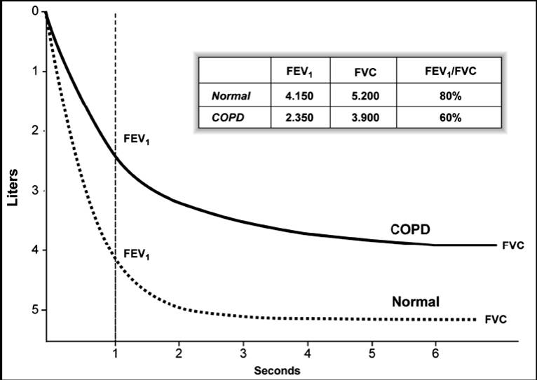
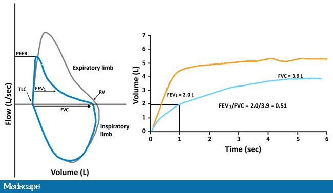
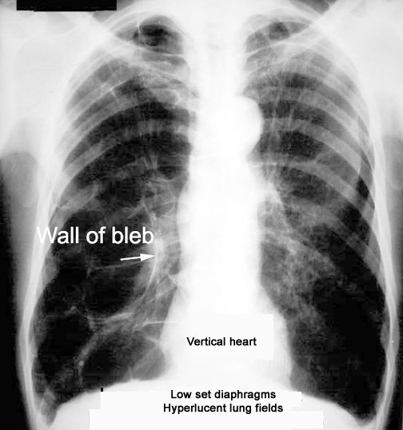
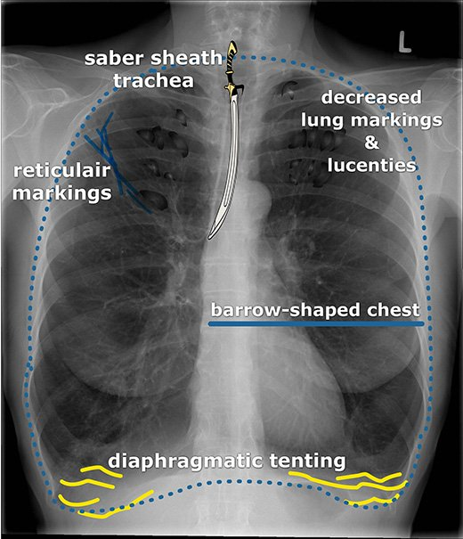
4.5 · Airflow severity, symptoms, exacerbation risk and groups
| Airflow grade (post-bronchodilator 1-second volume, ratio below 0.70) | Percent predicted |
|---|---|
| Grade 1, mild | 80% or more |
| Grade 2, moderate | 50% to 79% |
| Grade 3, severe | 30% to 49% |
| Grade 4, very severe | below 30% |
- Symptoms: the 8-item assessment test (0–5 each, total 0–40; 10 or more = more symptoms) or the modified Medical Research Council dyspnea grade (0 strenuous exercise only; 1 hurrying or slight hill; 2 slower than peers or stops at own pace; 3 stops after about 100 meters; 4 too breathless to leave the house; 2 or more = more symptoms).
- Exacerbation risk: low = 0 or 1 not leading to admission; high = 2 or more moderate, or 1 leading to hospitalization.
- 2020 scheme: A low symptoms, low risk; B high symptoms, low risk; C low symptoms, high risk; D high symptoms, high risk. 2023/2026 scheme: low risk is A or B by symptoms; any high-risk patient is E.
Modified Medical Research Council (mMRC) dyspnea scale (slide 24)
| Grade | Statement (tick one box only) |
|---|---|
| 0 | I only get breathless with strenuous exercise |
| 1 | I get short of breath when hurrying on the level or walking up a slight hill |
| 2 | I walk slower than people of the same age on the level because of breathlessness, or I have to stop for breath when walking on my own pace on the level |
| 3 | I stop for breath after walking about 100 meters or after a few minutes on the level |
| 4 | I am too breathless to leave the house or I am breathless when dressing or undressing |
| In the group assessment (slides 35–37), grade ≥ 2 = more symptoms; 0–1 = fewer. | |
COPD (chronic obstructive pulmonary disease) Assessment Test (CAT) (slide 23)
| Item: 0 end | Item: 5 end |
|---|---|
| I never cough | I cough all the time |
| I have no phlegm (mucus) in my chest at all | My chest is completely full of phlegm (mucus) |
| My chest does not feel tight at all | My chest feels very tight |
| When I walk up a hill or one flight of stairs I am not breathless | When I walk up a hill or one flight of stairs I am very breathless |
| I am not limited doing any activities at home | I am very limited doing activities at home |
| I am confident leaving my home despite my lung condition | I am not at all confident leaving my home because of my lung condition |
| I sleep soundly | I don’t sleep soundly because of my lung condition |
| I have lots of energy | I have no energy at all |
| Each item is scored 0–5 and summed. In the group assessment, total ≥ 10 = more symptoms, < 10 = fewer (slides 35–37). The slide 29 algorithm writes “CAT score >10”, and the slide 35 GOLD 2026 picture spells it “CAAT”. | |
Totaling the 8-item symptom assessment test. Add the 8 item scores, each scored 0 to 5 (cough, phlegm, chest tightness, breathlessness on a hill or flight of stairs, limitation of home activities, confidence leaving home, sleep and energy); a total of 10 or more counts as more symptoms when assigning the group.
GOLD 2020 groups A to D (slides 35–36, 41)
| Group | Exacerbation risk | Symptoms |
|---|---|---|
| A: low risk, less symptoms | 0 or 1 exacerbation per year, no hospitalization | CAT < 10 or mMRC 0–1 |
| B: low risk, more symptoms | 0 or 1 exacerbation per year, no hospitalization | CAT ≥ 10 or mMRC ≥ 2 |
| C: high risk, less symptoms | ≥ 2 exacerbations per year or ≥ 1 hospitalization | CAT < 10 or mMRC 0–1 |
| D: high risk, more symptoms | ≥ 2 exacerbations per year or ≥ 1 hospitalization | CAT ≥ 10 or mMRC ≥ 2 |
| Slide 36 adds the airflow grade each group “typically” has; that line is never used to assign a group: groups come from symptoms and exacerbation history. CAT = chronic obstructive pulmonary disease Assessment Test; mMRC = modified Medical Research Council dyspnea grade. | ||
GOLD 2023/2026 groups A, B and E, with initial treatment (slides 35, 37, 40–41)
| Group | Exacerbation history (per year) | Symptoms | Initial treatment (slide 37 Figure 4.2, slide 40) |
|---|---|---|---|
| A | 0 or 1 moderate exacerbations (not leading to hospital admission) | mMRC 0–1, CAT < 10 | A bronchodilator (short- or long-acting) |
| B | 0 or 1 moderate exacerbations (not leading to hospital admission) | mMRC ≥ 2, CAT ≥ 10 | LABA + LAMA (long-acting beta-2 agonist + long-acting muscarinic antagonist: dual bronchodilators) |
| E | ≥ 2 moderate exacerbations or ≥ 1 leading to hospitalization (Figure 4.2, slide 40) | Any | LABA + LAMA; consider LABA + LAMA + ICS (inhaled corticosteroid) if blood eosinophils ≥ 300 |
| Slide conflict: the GOLD 2026 picture on slide 35 and the second picture on slide 37 define the high-risk (E) row as “One or more (≥ 1) moderate or severe exacerbations in the previous year” and A/B as “Zero (0)”; slide 36, slide 37’s Figure 4.2 and slide 40 say ≥ 2 moderate or ≥ 1 leading to hospitalization. Not resolved here. | |||
| Figure 4.2: single inhaler therapy may be more convenient and effective than multiple inhalers; the table is for initial treatment of patients naive to maintenance therapy (slide 37). The slide 35 picture spells the test “CAAT”. | |||
Initial treatment (2023/2026): A = one bronchodilator; B = long-acting beta agonist plus long-acting antimuscarinic; E = the same pair, with an inhaled corticosteroid considered when blood eosinophils are 300 or more. Single-inhaler therapy may be more convenient.
Eosinophils and the inhaled corticosteroid. For group E, a long-acting beta agonist plus antimuscarinic is the start, with an inhaled corticosteroid considered when blood eosinophils are 300 or more; at discharge after an exacerbation, an inhaled corticosteroid is considered if eosinophils are elevated.
Algorithm for evaluation and treatment of chronic obstructive pulmonary disease (slide 29)
| Step or finding | What the algorithm says |
|---|---|
| At risk | Healthy lifestyle; vaccinations. Avoidance of exposure (smoking, pollution). |
| Spirometry | FEV1:FVC < 0.7 |
| FEV1 ≥ 80% of predicted | Provide risk counseling; follow over time |
| FEV1 < 80% of predicted | Grade the severity (GOLD grade 1 ≥ 80, 2 50–79, 3 30–49, 4 < 30 % of predicted); evaluate risk: mMRC or CAT score and exacerbation history; address coexisting conditions |
| mMRC score 0–1 or CAT score < 10; no exacerbations | Treat airflow obstruction; monitor treatment adherence; follow over time |
| mMRC score ≥ 2 or CAT score > 10; no exacerbations | Treat airflow obstruction; monitor treatment adherence; follow over time; consider pulmonary rehabilitation |
| mMRC score 2 or CAT score > 10; exacerbations | Treat airflow obstruction; monitor treatment adherence; follow over time; implement pulmonary rehabilitation; assess gas exchange |
| Grade 3 or 4, or the exacerbation branch | Lung volumes (IC:TLC and RV:TLC), DLco, CT scan, body-mass index, 6MWD, BODE index, oxygen saturation → hyperinflation, inhomogeneous emphysema, low 6MWD → evaluate for LVR or lung transplantation |
| Slide 29: green and yellow pathways are considered the usual domain of the primary care provider; brown pathways are for clinicians well-experienced in treating the disease (referral to pulmonology). The exacerbation box prints “mMRC score 2”, not ≥ 2. Abbreviations: FEV1 forced expiratory volume in 1 second; FVC forced vital capacity; mMRC modified Medical Research Council; CAT COPD Assessment Test; IC inspiratory capacity; TLC total lung capacity; RV residual volume; DLco diffusing capacity for carbon monoxide; CT computed tomography; 6MWD 6-minute walk distance; BODE body-mass index, obstruction, dyspnea, exercise; LVR lung volume reduction. | |
4.6 · Chronic management
Goals: fewer symptoms and better exercise tolerance, slow progression, prevent exacerbations, reduce mortality. Non-drug care: smoking cessation is essential for every group; pulmonary rehabilitation is also essential for B and E; physical activity recommended; vaccines depend on local guidelines.
GOLD Table 4.1: goals for treatment of stable chronic obstructive pulmonary disease (slide 45)
| Goals | Together they |
|---|---|
| Relieve symptoms · improve exercise tolerance · improve health status | Reduce symptoms |
| Prevent disease progression · prevent and treat exacerbations · reduce mortality | Reduce risk |
| The table joins the two rows with AND. | |
GOLD Table 4.9: non-pharmacologic management by group (slides 43, 48)
| Patient group (Table 4.9) | Essential | Recommended | Depending on local guidelines |
|---|---|---|---|
| A | Smoking cessation (can include pharmacological treatment) | Physical activity | Flu, pneumococcal, pertussis, COVID-19 and shingles vaccinations |
| B and E | Smoking cessation (can include pharmacological treatment); pulmonary rehabilitation | Physical activity | Flu, pneumococcal, pertussis, COVID-19 and shingles vaccinations |
| Slide 48: every patient should get a yearly influenza shot (reduces hospitalizations and death); pneumococcal vaccine at age 65, earlier with severe disease (FEV1 (forced expiratory volume in 1 second) < 40%) or cardiac comorbidities. Vaccine product names are not used. | |||
- Smoking cessation (nicotine replacement, bupropion, varenicline) always with counseling. Five A's: Ask, Advise, Assess, Assist, Arrange. FRAMES: Feedback, Responsibility, Advice, Menu of options, Empathy, Self-efficacy.
- Vaccines: yearly influenza (reduces hospitalization and death); pneumococcal at 65 or earlier with severe disease (under 40%) or cardiac comorbidity (reduces pneumonia, not deaths or admissions).
- Influenza vaccine. Every patient should get a yearly influenza shot, which is proven to reduce hospitalizations and death. The pneumococcal vaccine reduces community-acquired pneumonia but overall does not reduce deaths or admissions.
- Drugs: albuterol for every patient (not excessively: cardiac and psychiatric effects). Long-acting beta agonist: tachycardia, arrhythmias, can worsen atrial fibrillation. Long-acting antimuscarinic (tiotropium): blocks M3 receptors, poorly absorbed, mainly dry mouth. The pair is synergistic at lower doses. Inhaled corticosteroid: never alone, must be combined with a long-acting beta agonist, raises pneumonia risk, withdrawal has consequences. Oral steroids: acute exacerbations only.
- Pulmonary rehabilitation (next to cessation, the most effective management): secretion clearance, breathing techniques, strengthening, energy conservation, education; fewer hospitalizations; needs a professional team.
- Oxygen: for severe resting hypoxemia (arterial oxygen under 55 mmHg or saturation below 88%) it decreases the risk of death. Pathway: resting saturation 88% or less = long-term oxygen over 15 hours a day; 89–93% at rest = no indication; exertional saturation 88% or less = oxygen with exertion; 88% or less at night only = evaluate for obstructive sleep apnea.
The Five A’s and FRAMES (slide 47)
| Step | 5 A’s approach | 5 A’s example dialogue | FRAMES approach | FRAMES example dialogue |
|---|---|---|---|---|
| 1 | Ask: Initiates dialogue by nonjudgmentally inquiring about the individual’s behavior, opening a discussion on health-related practices. | “Can you tell me about your current exercise routine?” | Feedback: Provides specific information about the effects of the individual’s behavior on their health, aiming to increase awareness. | “Based on your check-up, your current alcohol consumption is affecting your liver health.” |
| 2 | Advise: Offers clear, specific advice on the benefits of making a health-related change, tailored to the individual’s situation. | “Increasing your physical activity can significantly reduce health risks like diabetes and heart disease.” | Responsibility: Emphasizes the individual’s personal responsibility for their health and the decision to change their behavior. | “It’s important to recognize that only you can decide to make this change for your health.” |
| 3 | Assess: Evaluates the individual’s readiness and willingness to change their behavior, considering their current stage of change. | “How do you feel about making a change to your exercise habits?” | Advice: After establishing a foundation of feedback and responsibility, provides direct, nonjudgmental advice to encourage change. | “Cutting down on your drinking could improve your health and personal relationships.” |
| 4 | Assist: Offers support by helping to identify actionable steps and strategies for overcoming obstacles to change. | “Let’s work together to set realistic exercise goals and identify potential challenges.” | Menu of options: Presents a range of options for behavior change, allowing the individual to choose strategies that they feel will work best for them. | “There are several strategies we can explore to help you reduce drinking, such as…” |
| 5 | Arrange: Sets up a system of follow-up support to monitor and discuss progress, ensuring ongoing motivation and accountability. | “I’d like to schedule a follow-up visit to discuss your progress. How does that sound?” | Empathy: Acknowledges and validates the individual’s feelings and challenges, demonstrating understanding and compassion. | “I understand that this change can be challenging, and it’s okay to have mixed feelings about it.” |
| 6 | — | — | Self-efficacy: Focuses on enhancing the individual’s confidence in their ability to change, reinforcing their belief in their own capabilities. | “You’ve made significant changes before; I believe you have the strength to do this too.” |
| Slide 47: “Remember the FRAMES and ‘Five A’s’ frameworks from Bates’ Chapter 7.” The Five A’s have no sixth step. | ||||
Self-efficacy. Self-efficacy focuses on enhancing the person's confidence in their ability to change and reinforcing belief in their own capabilities.
Transtheoretical model for behavioral change (slide 47)
| Stage | Description | Statement |
|---|---|---|
| Precontemplation | No intention to change behavior in the foreseeable future; often unaware of their problems | “I do not think that I need to change any behaviors.” |
| Contemplation | Aware that a problem exists and seriously thinking about overcoming it; no commitment to take action | “I’m concerned about my behavior, but not ready to make any changes now.” |
| Preparation | Expressed intention to take action soon; reporting small behavioral changes | “I’m ready to change my behavior now.” |
| Action | Modify their behavior for a period from 1 day to 6 months | “I’m changing my behavior now.” |
| Maintenance | Continue the change (usually > 6 months) and work to prevent relapse | “I’ve changed my behavior.” |
| Relapse | Cessation of behavioral changes; revert to old behavior. Not a stage itself: a return from action or maintenance to an earlier stage | “I’ve returned to my old behavior.” |
Pneumococcal vaccines in patients with chronic obstructive pulmonary disease (slide 48)
| Benefits | Harms |
|---|---|
| 1 in 21 avoided an episode of community-acquired pneumonia | No harms were reported |
| 1 in 8 avoided an acute COPD exacerbation | |
| No deaths were prevented | |
| No hospital admissions were prevented | |
| No cases of pneumococcal pneumonia were prevented | |
| No reduction in all-cause mortality |
COPD (chronic obstructive pulmonary disease) Foundation guide for management (the COPD Pocket Consultant, slide 49)
| Symptoms (CAT or mMRC) and exacerbations | Treatment | If symptoms (or exacerbations) persist |
|---|---|---|
| mMRC 0,1; CAT < 10; exacerbations < 2/year | prn SABD (as-needed short-acting bronchodilator; the picture prints “pm”) | LAMA |
| mMRC ≥ 2, CAT ≥ 10, with or without exacerbations | LAMA or LAMA+LABA plus pulmonary rehabilitation | LAMA+LABA+ICS |
| mMRC 0,1; CAT < 10; exacerbations ≥ 2/year | LAMA or LAMA+LABA or LABA+ICS | Joins the middle branch: LAMA+LABA+ICS |
| Above the branches: COPD is defined by postbronchodilator FEV1/FVC ratio < 0.7 on spirometry; all COPD patients should have smoking cessation if smoking, vaccinations, and be on regular exercise program. | ||
| Abbreviations (the figure’s own key): CAT, COPD Assessment Test; mMRC, modified Medical Research Council dyspnea scale; SABD, short-acting bronchodilator; LAMA, long-acting muscarinic agent; LABA, long-acting beta-2 agonist; ICS, inhaled corticosteroids. This guide’s LABA+ICS option is not in the GOLD 2023/2026 Figure 4.2 on slide 37. | ||
Does this patient need supplemental oxygen? (slides 20, 63–64)
| Situation (slide 64) | Oxygen saturation | Decision |
|---|---|---|
| Severe resting desaturation | ≤ 88% at rest | Qualifies for LTOT (long-term oxygen therapy) > 15 h/day; cor pulmonale absent: titrate to goal > 89%; present: > 90%–92% |
| Moderate resting desaturation | 89%–93% at rest | No indication for long-term oxygen |
| Severe exertional desaturation (mobile, exertional symptoms: exercise test) | ≤ 88% with exertion | Qualifies for long-term oxygen during exertion |
| Moderate exertional desaturation | 89%–93% on exertion | No indication for long-term oxygen |
| Nocturnal desaturation | ≤ 88% at night only | Evaluate for OSA (obstructive sleep apnea) and screen for other etiologies |
| Slide 63: treat if arterial oxygen < 55 mm Hg or saturation < 88%; slide 64 uses ≤ 88%. Slide 63 also says societies disagree on the saturation target (88–92% vs 90% vs at least 90%); no target is tested. | ||
| Slide 20: may need oxygen acutely if saturation is below 95% on room air, but a baseline below 88% requires oxygen chronically. | ||
4.7 · Exacerbations, admission and discharge
- Definition: acute worsening of dyspnea, cough or sputum over 14 days or less; triggers viral or bacterial infection, pollution. Exclude pneumonia, pulmonary embolism, acute heart failure, pneumothorax (oxygen saturation, blood gas, chest film, electrocardiogram, B-type natriuretic peptide or troponin). More than 80% are managed as outpatients.
- Excluding pneumothorax. Pneumothorax is one of the diagnoses to exclude before calling a decline an exacerbation, and the chest x-ray, though not a diagnostic standard for the disease itself, can rule out other diagnoses such as heart failure or pneumothorax.
- Admit for: marked symptoms despite treatment, need for noninvasive ventilation, new signs (edema), arrhythmia, poor secretion control, significant comorbidity, age, no home resources. Intensive care for instability, major infection, invasive ventilation, sepsis, altered mental status, respiratory failure or acidosis.
- Treatment: bronchodilators, corticosteroids, oxygen, antibiotics (when dyspnea comes with more and more purulent sputum): doxycycline, a macrolide, trimethoprim-sulfamethoxazole or amoxicillin-clavulanate; respiratory fluoroquinolone with resistance; levofloxacin for pseudomonal concern. Inpatient: high-flow nasal cannula for hypoxia; noninvasive ventilation for hypercapnic respiratory failure (reduces intubation and mortality); venous thromboembolism prophylaxis. Long-term azithromycin is rare (resistance, side effects).
- Discharge: albuterol no more often than every 4 hours, long-acting bronchodilators, walks across the room, eats and sleeps without waking, stable 12–24 hours, understands medicines, home arrangements, consider rehabilitation. Bundle: long-acting bronchodilators promptly, inhaled steroid if eosinophils are high, check technique, follow-up; recovery takes 4 to 6 weeks and may not return to baseline.
Table 6: pharmacologic treatment for inpatient chronic obstructive pulmonary disease (COPD) exacerbations (slide 59)
| Class | Medication | Dose and frequency |
|---|---|---|
| Bronchodilator | Albuterol | 2.5 mg/3 mL NS (nebulizer solution) nebulized or MDI (metered-dose inhaler) 1 puff every hour × 2–3 doses, then every 2–4 hours |
| Ipratropium | 500 mcg nebulized or inhaled every 6–8 hours or MDI 1 puff every hour × 2–3 doses | |
| Glucocorticoidsa | Methylprednisolone | 60–125 mg IV (intravenous) daily for no more than 5–7 days OR 40 mg IV daily × 1 day, then prednisone 40 mg PO (by mouth) daily × 4 days (total 5 days) |
| Prednisone | 40 mg PO daily × 5 days | |
| Antibiotics (nonpseudomonal coverage) | Ceftriaxone | 1–2 g IV daily × 5–7 days |
| Moxifloxacin | 400 mg IV or PO daily × 5–7 days | |
| Antibiotics (pseudomonal coverage) | Cefepime | 1–2 g IV every 8–12 hours × 5–7 days |
| Ceftazidime | 1–2 g IV every 8 hours × 5–7 days | |
| Piperacillin-tazobactam | 4.5 g IV every 6 hours × 5–7 days | |
| Levofloxacin | 750 mg IV or PO daily × 5–7 days | |
| a Might be less efficacious in acute COPD exacerbations in patients with lower levels of blood eosinophils. The table writes “q” for every. Slide 59 adds: it is rare, but some patients are put on long-term azithromycin or erythromycin, which increases the risk of resistance and side effects. | ||
Discharge criteria for chronic obstructive pulmonary disease, Table 1 (slide 60)
| Criterion (Table 1) |
|---|
| Able to use long-acting bronchodilators, either beta-2 agonists and anticholinergics with or without inhaled corticosteroids |
| Inhaled short-acting beta-2 agonist therapy is required no more frequently than every 4 hours |
| Patient, if previously ambulatory, is able to walk across room |
| Patient is able to eat and sleep without frequent awakening by dyspnea |
| Patient has been clinically stable for 12–24 hours |
| Patient (or home caregiver) fully understands correct use of medications |
| Follow-up and home care arrangements have been completed (visiting nurse, oxygen delivery, meal provisions) |
| Patient, family, and physician are confident that the patient can manage successfully at home |
| Consider pulmonary rehabilitation |
4.8 · Adults and older adults; referral; prognosis
| Domain | Adult (about 40–64) | Elderly (65 and older) |
|---|---|---|
| Diagnosis | Consider alpha-1 antitrypsin deficiency if young or few exposures; lower limit of normal or z-scores under 50 | The fixed 0.70 ratio may overdiagnose; weigh clinical context |
| Priorities | Cessation, preserve lung function, stay in work, prevent exacerbations | Function, quality of life, multimorbidity, goals of care |
| Inhaler device | Most can use any | Arthritis, tremor, cognitive impairment, low inspiratory flow limit dry powder inhalers: use a metered-dose inhaler with spacer, soft mist inhaler or nebulizer |
| Drugs | Standard approach | Polypharmacy, anticholinergic burden, cardiac effects of long-acting beta agonists, inhaled steroid pneumonia and fracture risk |
| Comorbidities | Heart, metabolic, depression | Add osteoporosis, frailty, falls, cognitive decline |
| Rehabilitation | Return to work and activity | Referred less often: refer actively |
| Palliative care | As disease advances | Early, with caregivers and advance directives |
Inhaled corticosteroid risks in older adults. Inhaled corticosteroids increase the risk of pneumonia, and in older adults the concerns include inhaled corticosteroid-related pneumonia and fracture risk.
Refer to pulmonology for: diagnostic uncertainty; early onset or suspected alpha-1 antitrypsin deficiency; frequent exacerbations despite optimal therapy; long-term oxygen; noninvasive ventilation evaluation; possible surgery; symptoms out of proportion to testing.
Symptoms out of proportion. Symptoms out of proportion to pulmonary function tests, like diagnostic uncertainty, is a listed reason for pulmonology referral: for example a dyspnea grade of 3 with near-normal airflow (grade 1, 82%).
Prognosis: the BODE index (body mass index, obstruction, dyspnea, exercise) estimates 4-year survival. Points: 1-second volume 65% or more 0, 50–64 1, 36–49 2, 35 or less 3; 6-minute walk 350 meters or more 0, 150–249 2, 149 or less 3; dyspnea grade 0–1 0, 2 1, 3 2, 4 3; body mass index above 21 0, 21 or less 1. Total 0–2 = about 80% survival; 3–4 = 67%; 5–6 = 57%; 7–10 = 18%. Survival benefit comes from smoking cessation, long-term oxygen for severe resting hypoxemia, and noninvasive ventilation for hypercapnic exacerbations.
BODE index (body mass index, obstruction, dyspnea, exercise) points (slide 52)
| Variable | 0 points | 1 point | 2 points | 3 points |
|---|---|---|---|---|
| FEV1 (forced expiratory volume in 1 second), % of predicted | ≥ 65 | 50–64 | 36–49 | ≤ 35 |
| 6-minute walk distance (meters) | ≥ 350 | “250-249” (see note) | 150–249 | ≤ 149 |
| mMRC (modified Medical Research Council) dyspnea scale | mMRC 0–1 | mMRC 2 | mMRC 3 | mMRC 4 |
| Body-mass index | > 21 | ≤ 21 | — | — |
| Slide 52 prints the 1-point walk band as “250-249”; between its neighbors it can only be 250–349. Questions avoid that band. | ||||
BODE score and estimated 4-year survival (slide 52)
| BODE index score (total points) | Estimated 4-year survival |
|---|---|
| 0–2 | 80% |
| 3–4 | 67% |
| 5–6 | 57% |
| 7–10 | 18% |
5 · Respiratory Infections and Vaccines
Lecture 37 · Robert Bobilin, MS, MPAS, PA-C (guest lecturer) · Thursday 29 October 2026
Instructional Objectives
RESPIRATORY INFECTIONS AND VACCINES PREVENTING RESPIRATORY INFECTIONS — Robert Bobilin, MS, MPAS, PA-C
- Identify and discuss vaccines which prevent respiratory infections.
- Compare and contrast the etiologies, epidemiology, risk factors, clinical manifestations, differential diagnosis, diagnostic testing (including ordering and interpretation), management (acute and chronic, including applicable rehabilitative and palliative care), appropriate referrals, patient education, and prognosis of the following respiratory infections: 1. Acute bronchitis 2. Pneumonia: 3. Bacterial 4. Viral 5. Atypical (including but not limited to chlamydia psittacosis and mycoplasma) 6. Fungal (including but not limited to cryptococcosis, histoplasmosis, pneumocystis jiroveccii) 7. Aspiration pneumonia 8. Lung abscess 9. Influenza 10. Coronavirus (COVID-19)
- Identify medical care strategies for respiratory infections in the lecture topic list for the following populations. 1. adult 2. elderly
Quoted as the syllabus prints it, leading letters kept (the syllabus numbers the pneumonia types as items 3–6 of the same list). Answered in order: a in 5.1; b across 5.2–5.10 (acute bronchitis 5.2; pneumonia, bacterial, in 5.3–5.5 with hospital and ventilator pneumonia; aspiration pneumonia and lung abscess 5.6; fungal 5.7; atypical 5.8; influenza and viral pneumonia 5.9; COVID-19 5.10); c in 5.11. Each disease’s eight-point summary sits inside its subsection.
What Prof. Bobilin said is and is not tested (Zoom recording of Thursday 29 October, Lecture 37 = the first 2 hours 54 minutes; every fact below still comes from the slides).
- He writes the exam questions himself and promised guidance: “I’m going to finish writing all my questions … and I will give you all some guidance” (0:02), repeated at the end of Lecture 38. It is now posted: the revised slides of 31 October add a study-focus slide (slides 127–128, in the starred box below). He wrote about 20 of the exam questions on this lecture (and about 10 on Lecture 38). He also said the posted slides had “a few typos and grammatical changes … not anything that’s dramatic”; slides 1–126 of the revised deck are unchanged.
- Vaccines: the focus slide now names what he will ask. In the lecture he said “I’m not going to require a lot of detail on the exam, and if I require anything specific, I will give you some guidelines on it” (0:22). The study-focus slide is those guidelines and supersedes that remark for three decisions: influenza product selection, respiratory syncytial virus age and risk eligibility, and pneumococcal sequencing, “especially when PCV15 requires PPSV23” (5.1). The make-up of the influenza vaccine is still not on his list.
- The theme he opened with: diagnostic restraint. Acute bronchitis is “our first opportunity to practice diagnostic restraint”: when antibiotics help and when they do not (0:23). He closed on the same two slides: when testing changes a decision, and when antibiotics should be withheld (5.11).
- “This may be a great question”: on the slide about when antibiotics should be withheld (slide 126, 5.11), “do review this slide, because this may be a great question in here, you know, when do you avoid it? … what conditions?” (2:51). Know each condition on it: uncomplicated acute bronchitis, chemical aspiration pneumonitis, influenza or COVID-19 without a bacterial complication, and the selected viral-positive outpatient.
- Severity scores. The Pneumonia Severity Index “is what’s being used, more than not, and the CURB-65 is simply complementary” (0:56). Both are on the slides.
- Not tested, in his words: the example chest radiographs (“I’m not going to put these on the exam and say, what is it”, 0:59); the alveolar-arterial gradient in the Pneumocystis steroid rule (“It’s not going to show up on a test”, 1:56); the make-up of the influenza vaccine (“won’t show up on a test”, 2:25). The pneumonia stages “aren’t cold, hard, fast rules” (0:44).
- Steroid thresholds are on the focus slide. For Pneumocystis that means the room-air arterial oxygen below 70 mm Hg trigger for adjunctive corticosteroids (slide 72, 5.7): keep it. In the lecture he said the alveolar-arterial gradient half of the same rule would not be on a test; the focus slide says “steroid thresholds” without excluding it, so know both numbers (room-air arterial oxygen below 70 mm Hg, or a gradient of 35 mm Hg or more).
- Board favorites he named: histoplasmosis (“going to show up on your PANCE”, 1:59) and psittacosis (“a super common medical boards question”, though “not common enough to really deserve a lot of attention”, 2:04).
- Time on topic (minutes): pneumonia overview, workup, scores and antibiotics about 46; vaccines 16; influenza 15; acute bronchitis 14; psittacosis 13; Pneumocystis 12; COVID-19 9; aspiration 6; histoplasmosis 5; lung abscess 4; Mycoplasma and cryptococcosis about 2 each.
Where the slides are loose or disagree
- Influenza and the nose (slides 100 and 102). Slide 100 lists nasal discharge as a symptom; slide 102 says nasal discharge is absent in most patients on examination. In the recording he corrected his own “not as much congestion” to “there is congestion.” Not keyed.
- The Pneumonia Severity Index picture (slide 30) is a cropped calculator: its list stops at arterial pH below 7.35, and Class I has no point range. Use it as “given a total, which class?”, never to add up a full score.
- Severe community-acquired pneumonia (slide 45) names “three minor criteria” but never lists them; only the two major criteria (vasopressor-dependent shock, mechanical ventilation) are on the slides.
- Geography (slides 41 and 75). The pathogen table links the Mississippi and Ohio River basins to Blastomyces dermatitidis; the histoplasmosis slide places Histoplasma in the Ohio and Mississippi River valleys. Exposure to bird or bat droppings is the histoplasmosis clue.
- Influenza vaccine make-up (slides 4 and 92): trivalent on the slides; he called it “basically tetravalent” and said it will not be tested.
- Timing in hospital pneumonia (slides 25, 39, 127): the focus slide says “Use acquisition timing”: timing names the pneumonia (hospital-acquired 48 hours or more after admission; ventilator-associated more than 48 hours after intubation). Slide 39 adds that early or late timing alone does not select the regimen; the local antibiogram and resistance risk do.
- How many questions (slide 128): the repeated focus slide’s footer reads “Covers Questions 1–25”; the class was told about 20 questions on this lecture.
The guidance he promised, word for word from the slide, with where each point sits in this guide.
| Topic | The slide says | In this guide |
|---|---|---|
| Prevention & vaccines | “Know influenza product selection, RSV age/risk eligibility, and pneumococcal sequencing—especially when PCV15 requires PPSV23.” | 5.1 (the summary table and the influenza bullets) |
| Bronchitis & stewardship | “Distinguish uncomplicated viral bronchitis from pneumonia. Sputum color alone does not justify antibiotics.” | 5.2; 5.11 |
| CAP severity & treatment | “Review diagnostic confirmation, PSI, severe-CAP criteria, outpatient regimens with and without comorbidities, and risk-based resistant coverage.” | 5.4; 5.5 |
| HAP, VAP & aspiration | “Use acquisition timing, cultures, local antibiograms, and de-escalation. Separate chemical pneumonitis from aspiration pneumonia and reserve anaerobic coverage for abscess/empyema.” | 5.5; 5.6 |
| Opportunistic & atypical infection | “Focus on PJP sampling, PCR limitations, steroid thresholds, histoplasmosis treatment by severity, and bird exposure with doxycycline for psittacosis.” | 5.7; 5.8 |
| Influenza & COVID-19 | “Interpret negative rapid influenza tests, treat high-risk influenza even after 48 hours, and separate early outpatient COVID antivirals from hypoxemic inpatient care.” | 5.9; 5.10 |
His best study method: “For each topic, practice the same five decisions—diagnosis, severity/site of care, test that changes management, first-line treatment, and when to withhold or narrow therapy.”
Slide abbreviations: RSV, respiratory syncytial virus; PCV15, 15-valent pneumococcal conjugate vaccine; PPSV23, 23-valent pneumococcal polysaccharide vaccine; CAP, community-acquired pneumonia; PSI, Pneumonia Severity Index; HAP, hospital-acquired pneumonia; VAP, ventilator-associated pneumonia; PJP, Pneumocystis jirovecii pneumonia; PCR, polymerase chain reaction. He wrote about 20 questions on this lecture. Practice on these points: Lectures 37–38 Study Focus, Set 1 and Set 2 (20 respiratory infection and 10 tuberculosis questions each).
5.1 · Vaccines that prevent respiratory infections
Use current Centers for Disease Control and Prevention (CDC) vaccine guidance with the adult schedule and the patient’s vaccination history. Influenza and COVID-19 vaccination reduce severe disease (they do not exclude infection); pneumococcal and respiratory syncytial virus (RSV) eligibility depends on age and risk; tetanus, diphtheria and acellular pertussis (Tdap) protects against pertussis; adult Haemophilus influenzae type b (Hib) vaccination is for selected indications (slide 3).
| Vaccine | Who and when |
|---|---|
| Influenza | Every year for everyone aged 6 months or older without a contraindication; most adults in September or October, and keep vaccinating while influenza circulates. |
| COVID-19 | The current seasonal schedule by age, immune status and prior doses; an updated vaccine for adults 18 and older; adults 65 and older generally need two seasonal doses about 6 months apart. |
| Tdap / Td (tetanus and diphtheria) | One Tdap if no documented prior dose, then Td or Tdap every 10 years; Tdap in every pregnancy, preferably early in weeks 27–36. |
| Pneumococcal | By age, conditions and prior products. For a pneumococcal-conjugate-naive eligible adult, PCV20 (20-valent pneumococcal conjugate vaccine) or PCV21 (21-valent) alone completes the series; PCV15 (15-valent) is usually followed by PPSV23 (23-valent pneumococcal polysaccharide vaccine), usually 1 year or more later. All adults 50 and older; ages 19–49 with a risk condition. |
| RSV | One dose for all adults 75 or older and adults 50–74 at increased risk of severe disease; not an annual vaccine. |
| Hib | Selected indications only: asplenia without prior vaccination (one dose, preferably 14 days or more before an elective splenectomy) and a 3-dose series after a hematopoietic stem-cell transplant regardless of prior doses. |
After the 15-valent pneumococcal conjugate vaccine. Every adult aged 50 or older is eligible, and a series started with the 15-valent conjugate vaccine usually needs the 23-valent polysaccharide vaccine afterward, usually 1 year or more later, so at 14 months a 23-valent polysaccharide dose now completes the series.
Respiratory syncytial virus vaccine at 66 without increased risk. One respiratory syncytial virus vaccine dose is recommended for all adults 75 or older and for adults 50 to 74 who are at increased risk of severe disease. At 66 with no such risk he is not yet eligible: one dose is due at 75, not a yearly one.
- Influenza vaccine choices (slides 5–6): adults 65 or older preferentially receive a high-dose inactivated, an adjuvanted inactivated or a recombinant vaccine; if none is available, give another age-appropriate vaccine rather than delay. Pregnancy: an inactivated or recombinant vaccine in any trimester; avoid the live attenuated vaccine, which also has immunocompromise restrictions. Egg allergy needs no egg-free product or extra precautions beyond routine vaccine safety. A severe reaction to a prior influenza vaccine needs a product-specific contraindication review (an alternate vaccine may be possible under specialist supervision). Children 6 months to 8 years may need two doses at least 4 weeks apart.
- RSV in pregnancy and infancy (slide 7): the maternal vaccine at 32–36 weeks in the seasonal window; infants can get nirsevimab or clesrovimab (passive antibody) when maternal protection is inadequate; most infants do not need both.
- Pneumococcal risk conditions at ages 19–49 (slide 10): alcoholism; cancer; cerebrospinal fluid leak; chronic heart, liver or lung disease; chronic kidney failure; cigarette smoking; cochlear implant; diabetes mellitus; hemoglobinopathies including sickle cell disease; human immunodeficiency virus (HIV); immunodeficiency; immunosuppression; nephrotic syndrome; asplenia; solid organ transplant. PCV21 is an adult vaccine; children under 5 receive a PCV15 or PCV20 series (slide 8).
- COVID-19 and immunocompromise (slide 12): vaccination from 6 months of age on a modified schedule; do not delay vaccination solely because the patient receives immunosuppressive therapy; coordinate timing with the treating specialist.
Pneumococcal vaccination by age (slide 9)
| Adults aged 19–49 | All adults aged 50 or older | |
|---|---|---|
| Who | With a qualifying risk condition and no prior PCV (pneumococcal conjugate vaccine) | If PCV-naive or history unknown |
| Give | One dose PCV20 or PCV21, OR PCV15, then PPSV23 usually 1 year or more later | One dose PCV20 or PCV21, OR PCV15, then PPSV23 usually 1 year or more later |
| Note | A minimum 8-week interval may apply with immunocompromise, cerebrospinal fluid leak, or cochlear implant | For prior PCV13 (13-valent pneumococcal conjugate vaccine) or PPSV23 recipients, use CDC PneumoRecs to determine the next dose and interval |
5.2 · Acute bronchitis
Acute bronchitis is usually a self-limited viral infection of the large airways: inflammation and mucus cause cough, sometimes with transient wheeze. The diagnosis is clinical, after considering pneumonia, an asthma or chronic obstructive pulmonary disease exacerbation, influenza, COVID-19 and pertussis (slide 15).
- History: starts like a cold (low-grade fever, chills, body aches, fatigue, loss of appetite, postnasal drip), then a cough with mucus that is worst in the morning; green or yellow mucus does not tell viral from bacterial; shortness of breath with possible wheeze (present depending on the airflow limitation), chest tightness or substernal discomfort, a tickle in the throat (slide 16).
- Exam: wheeze is central (substernal) over the bronchial airways; subtle rhonchi that clear with cough; chest-wall or costochondral tenderness from coughing; pharyngeal injection or other local viral signs. Consolidation should not be found: if it is, think pneumonia. Absent sounds at the bases suggest severe airflow limitation, atelectasis or a shallow breath (slide 16).
- Course and differential (slide 17): most episodes are viral; cough commonly lasts 2–3 weeks and may last longer. Abnormal vital signs, hypoxemia or focal consolidation call for evaluation for pneumonia. Asthma, chronic obstructive pulmonary disease and heart failure can cause acute exacerbations. Consider pertussis with paroxysmal cough, post-tussive vomiting, whoop or an exposure, without waiting for 4 weeks of cough. Test for influenza or COVID-19 when the result will guide treatment or infection prevention.
- Tests: routine complete blood count (CBC), sputum culture and chest radiography are unnecessary in uncomplicated cases; a CBC cannot reliably tell viral from bacterial. Image when vital signs, focal lung findings or clinical risk raise concern for pneumonia (slide 15).
- Do not prescribe routine antibiotics for uncomplicated acute bronchitis, regardless of cough duration or sputum color. Amoxicillin/clavulanate, clindamycin and fluoroquinolones are not default bronchitis treatments. Harms: adverse effects, C. difficile infection, resistance.
- Bacterial causes are uncommon; purulent or colored sputum does not establish bacterial infection. Fever or focal findings prompt evaluation for pneumonia, not empiric “bronchitis antibiotics.”
- When another diagnosis is likely: treat pneumonia by the community- or hospital-acquired pathway; suspected pertussis gets targeted testing and treatment to reduce transmission; manage a chronic obstructive pulmonary disease exacerbation on its own pathway. Hib vaccine prevents type b disease, not all H. influenzae infections.
- Managing expectations (slide 21 tables): call it a “chest cold” or viral illness; set the expected course (cough about two to three weeks); explain that antibiotics do not significantly shorten it and cause adverse effects and resistance; consider a delayed (“wait-and-see” or “pocket”) prescription; consider pelargonium to relieve cough in adults; discuss nonantibiotic symptom control.
Yellow sputum versus findings of pneumonia. Fever, a raised respiratory rate and focal crackles with dullness raise concern for pneumonia rather than uncomplicated bronchitis, and suspected pneumonia is confirmed with a chest radiograph. Yellow sputum is not what changes the plan: the fever and focal findings are.
Acute bronchitis: the two antibiotic-reduction tables (slide 21)
| Table 3. Methods for managing patient expectations for medication to treat acute bronchitis symptoms |
|---|
| Define the diagnosis as a “chest cold” or “viral upper respiratory infection” |
| Set realistic expectations for symptom duration (about three weeks) |
| Explain that antibiotics do not significantly reduce the duration of symptoms, and that they may cause adverse effects and lead to antibiotic resistance |
| Explain that many patients would need to be treated with antibiotics to prevent one case of pneumonia |
| Consider delayed “pocket” prescription or “wait-and-see” prescription (prescriptions given to patients with instructions to fill them only if symptoms do not resolve within a specific timeframe) |
| Consider pelargonium to relieve cough in adults |
| Table 2. Strategies to reduce antibiotic use for acute bronchitis |
|---|
| Use delayed prescription strategies, such as asking patients to call for or pick up an antibiotic or to hold an antibiotic prescription for a set amount of time |
| Address patient concerns in a compassionate manner |
| Discuss the expected course of illness and cough duration (two to three weeks) |
| Explain that antibiotics do not significantly shorten illness duration and are associated with adverse effects and antibiotic resistance |
| Discuss the treatment plan, including the use of nonantibiotic medications to control symptoms |
| Describe the infection as a viral illness or chest cold |
- Supportive care (slides 19–20): explain the course and agree on symptom goals; rest, hydration, avoiding smoke and irritants; acetaminophen for fever or discomfort. Short-term over-the-counter products give limited benefit and do not shorten the illness; check combination products so acetaminophen is not doubled, and discuss sedation, interactions and comorbidities first.
- Avoid routine opioid cough suppressants: codeine combinations give limited benefit with sedation, respiratory depression and misuse risks. No routine systemic or inhaled corticosteroids. A short bronchodilator trial may help selected patients with wheeze or airflow obstruction (then reassess for asthma or chronic obstructive pulmonary disease). Persistent or worsening cough means reconsider the diagnosis.
- Return precautions: dyspnea, hemoptysis, persistent fever, hypoxemia, or worsening after initial improvement (slide 19).
Acute bronchitis
Defining feature: a cough illness after a cold, with no consolidation, normal vital signs and oxygenation
- Definition
- A usually self-limited viral infection of the large airways; inflammation and mucus cause cough, sometimes with transient wheeze.
- Who gets it
- Patients after cold symptoms; most uncomplicated episodes are viral, bacterial causes uncommon.
- Risk factors
- A preceding viral upper respiratory infection; smoke and irritants worsen it (avoid them).
- Classic signs & symptoms
- Cough with mucus (worst in the morning; color does not mean bacteria), lasting 2–3 weeks or longer; dyspnea, wheeze, chest tightness, throat tickle; low-grade fever.
- Physical exam findings
- Central (substernal) wheeze; rhonchi that clear with cough; chest-wall tenderness; no consolidation.
- Diagnostics / tests
- Clinical diagnosis; no routine CBC, sputum culture or chest film; image when vital signs, focal findings or risk suggest pneumonia; test for pertussis, influenza or COVID-19 when it changes care.
- First-line treatment
- Expectation setting and supportive care; acetaminophen; no routine antibiotics, opioid cough suppressants or corticosteroids; a bronchodilator trial for selected wheezing patients.
- Complications
- A cough that persists or worsens needs a new diagnosis (pneumonia, pertussis, asthma, chronic obstructive pulmonary disease, heart failure); antibiotic harms if treated unnecessarily.
Slides 15–22
5.3 · Pneumonia: types, pathogens, stages and presentation
Pneumonia is an acute infection of the lung parenchyma and alveolar sacs. Annual incidence is about 24.8 per 10,000 adults, highest over age 65; 15–20% are hospitalized, and influenza and pneumonia together are the 8th leading cause of death. The most common pathogen is Streptococcus pneumoniae (pneumococcus) (slide 24).
| Type (slide 25) | Definition |
|---|---|
| Community-acquired pneumonia (CAP) | Acquired outside the hospital or present early in admission; prior healthcare contact does not exclude it |
| Hospital-acquired pneumonia (HAP) | Develops 48 hours or more after admission and was not incubating on admission |
| Ventilator-associated pneumonia (VAP) | Develops more than 48 hours after endotracheal intubation |
| Aspiration pneumonia | Infection after aspiration; can occur in the community or the hospital |
The “healthcare-associated pneumonia” category is retired: nursing-home residence or healthcare exposure alone does not mandate broad-spectrum therapy. For CAP, look for prior respiratory isolation of methicillin-resistant Staphylococcus aureus (MRSA) or Pseudomonas and recent hospitalization with intravenous antibiotics, using locally validated risk factors (slide 25).
- Pathogens (slides 24, 39, 40): CAP: S. pneumoniae, H. influenzae, respiratory viruses; atypicals Mycoplasma pneumoniae, Chlamydophila (Chlamydia) pneumoniae and Legionella. HAP and VAP: S. aureus and gram-negative bacilli including Pseudomonas and Enterobacterales; early or late timing alone does not select the regimen. Gram-positive: S. pneumoniae, S. aureus; gram-negative: H. influenzae, Klebsiella, E. coli, Pseudomonas, Bordetella pertussis, Moraxella. Legionella pneumophila: travelers and confined spaces such as cruises; circulating water droplets (hot tubs, fountains). Pneumocystis, Aspergillus or Cryptococcus in HIV/AIDS (acquired immunodeficiency syndrome). Mycoplasma is more likely in children but also causes adult pneumonia.
- Stages (slide 26; “not cold, hard, fast rules”): 1 congestion (exudate congests alveoli and capillaries, first 24 hours, later for atypicals); 2 red hepatization (fibrin and red cells, no airflow); 3 gray hepatization (leukocytes, the area becomes avascular); 4 resolution (macrophages clean up, airflow returns).
- Presentation (slide 27): more severe than an upper respiratory infection or bronchitis (except “walking pneumonia”): higher fevers and chills; atypical chest pain (unilateral or pleuritic; stabbing or deep ache, or tightness); productive cough with possibly purulent sputum; shortness of breath with tachypnea; fatigue, aches, headache, nausea or vomiting. Becoming systemic (bacteremia or sepsis): tachycardia with hypotension, hypoxia, confusion or altered mental status, low urine output or kidney function.
- Risk factors (slide 28): age (young children and older adults; Streptococcus and RSV); immunocompromise (atypical organisms: insidious onset, then rapid decline); exposure to sick people (Streptococcus); alcohol and smoking (Klebsiella or Mycoplasma); aspiration (varied organisms); chronic disease, especially chronic obstructive pulmonary disease and heart disease (all organisms).
- Exam (slides 23, 28): looks ill, warm, diaphoretic, increased work of breathing; crackles and/or diminished sounds usually limited to one lobe; dullness to percussion there (or at the base if an empyema has formed); pleural rub with pleurisy. Lobar consolidation adds egophony (E to A), whispered pectoriloquy and increased tactile fremitus, with bronchial breath sounds.
Pneumonia pathogens by type (slide 39)
| Type | Pathogen considerations |
|---|---|
| CAP | S. pneumoniae, H. influenzae, respiratory viruses. Atypical pathogens include: M. pneumoniae, C. pneumoniae, and Legionella. Host factors and exposures guide additional testing. |
| HAP / VAP | S. aureus and gram-negative bacilli, including Pseudomonas and Enterobacterales. Use local resistance data, prior cultures, and recent antibiotics. Early/late timing alone does not select the regimen. |
| Risk factor (slide 41) | Related pathogens |
|---|---|
| Alcoholism | Anaerobic oral flora, Klebsiella pneumoniae, Mycobacterium tuberculosis, S. pneumoniae |
| Aspiration | Anaerobic oral flora |
| Chronic obstructive pulmonary disease or smoking | C. pneumoniae, H. influenzae, Legionella, Moraxella catarrhalis, Pseudomonas aeruginosa or other gram-negative rods, S. pneumoniae |
| Bat or bird droppings | Histoplasma capsulatum |
| Farm animals or parturient cats | Coxiella burnetii (Q fever) |
| HIV, early / late | Early: H. influenzae, M. tuberculosis, S. pneumoniae. Late: Aspergillus, Cryptococcus, H. capsulatum, H. influenzae, Nocardia, nontuberculous mycobacteria, Pneumocystis jirovecii |
| Hotel or cruise ship travel in the past two weeks | Legionella |
| Influenza active in the community | H. influenzae, influenza and other viruses, S. pneumoniae, S. aureus including MRSA |
| Injection drug use | Anaerobes, M. tuberculosis, S. aureus including MRSA, S. pneumoniae |
| Lung abscess | Anaerobic oral flora, M. tuberculosis, nontuberculous mycobacteria, S. aureus including MRSA |
| Travel: Middle East / Southeast and East Asia | Middle East respiratory syndrome / avian influenza, severe acute respiratory syndrome |
| Southeastern and south-central states bordering the Mississippi and Ohio River basins / southwestern United States | Blastomyces dermatitidis / Coccidioides, Hantavirus |
| Bioterrorism | Bacillus anthracis (anthrax), Francisella tularensis (tularemia), Yersinia pestis (plague) |
5.4 · Pneumonia workup, severity scores and where to treat
- Confirm suspected pneumonia with chest radiography; lung ultrasound is an acceptable alternative where expertise exists. Assess oxygen saturation, vital signs, organ dysfunction and sepsis risk (slide 29).
- Use the Pneumonia Severity Index (PSI) plus clinical judgment for admission decisions (slide 29); “PSI is preferred for admission support. CURB-65 complements, but does not replace, clinical judgment” (slide 31).
- Cultures selectively: severe CAP, resistant-pathogen risk, or treatment failure. Molecular viral testing can guide antiviral and antibiotic decisions. Start indicated therapy promptly; the algorithm’s aim is diagnosis made and antibiotics started within 4 hours (slide 29).
- Chest computed tomography (CT) after the film when (slide 37): the diagnosis is questionable or other pathology is possible (interstitial disease, cancer); the opacity is not homogeneous; atelectasis hides the lower lobes; severe inflammation or edema on the film; a cavitary lesion.
- Film patterns (slide 33): lobar pneumonia (homogeneous consolidation, silhouette sign, air bronchogram, sharply marginated fissure; usually S. pneumoniae); bronchopneumonia (poorly defined patchy infiltrates throughout, air bronchogram; S. aureus: multilobar, cavitation, pneumatoceles, abscess); interstitial pneumonia (bilateral diffuse fine reticular opacity; Pneumocystis); aspiration (airspace opacity in a lobar or segmental, gravity-dependent distribution; stroke, seizure).
Classification of pneumonia according to the chest X-ray (slide 33)
| Pattern | Signs | Usual cause |
|---|---|---|
| Lobar pneumonia | Homogeneous consolidation; silhouette sign; air bronchogram; sharply marginated fissure | Streptococcus pneumoniae |
| Bronchopneumonia | Poorly defined heterogeneous patchy infiltrates scattered throughout the lung; air bronchogram | Staphylococcus aureus: multilobar, cavitation, pneumatoceles, abscess |
| Interstitial pneumonia | Bilateral, diffuse fine reticular opacity | Pneumocystis jirovecii pneumonia |
| Aspiration | Airspace opacification in a lobar or segmental distribution; gravity-dependent predilection | Stroke, seizure |
| CURB-65 item (1 point each) | Cut-off |
|---|---|
| Confusion | Abbreviated Mental Test Score 8 or less, or new disorientation to person, place or time |
| Urea | Blood urea nitrogen above 20 mg/dL (7 mmol/L) |
| Respiratory rate | 30 or more breaths per minute |
| Blood pressure | Systolic below 90 or diastolic 60 or less mmHg |
| Age 65 | 65 years or older |
| CURB-65 total | Severity (risk of death) | Where (slide 29 algorithm) |
|---|---|---|
| 0–1 | Low (under 3%) | Home with antibiotics, unless other reasons to admit (unstable comorbidity, social) |
| 2 | Moderate (9%) | Hospital: supportive care, microbiology, antibiotics |
| 3–5 | High (15–40%) | Hospital with urgent senior review; consider critical care, especially at 4 or 5 |
Scoring CURB-65 in one line: give 1 point each for confusion (new disorientation, or an Abbreviated Mental Test Score of 8 or less), blood urea nitrogen above 20 mg/dL, respiratory rate 30 or more, systolic pressure below 90 or diastolic 60 or less mmHg, and age 65 or older; a total of 0–1 is low severity (under 3%), 2 is moderate (9%) and 3–5 is high (15–40%).
Pneumonia Severity Index: points for sex (male 0, female −10), age (1 point per year), nursing-home residence (10), comorbidities (neoplastic disease 30, liver disease 20, congestive heart failure 10, cerebrovascular disease 10, renal disease 10), exam (altered mental status 20, respiratory rate 30 or more 20, systolic pressure below 90 mmHg 20, temperature below 35 or 40 °C or more 15, pulse 125 or more 10) and tests (arterial pH below 7.35, 30; the picture stops there). Classes: I 0.1% mortality; II 51–70 points, 0.6%; III 71–90, 0.9%; IV 91–130, 9.3%; V 131–395, 27.0%.
Pneumonia Severity Index points (slide 30)
| Group | Finding | Points |
|---|---|---|
| Sex | Male / female | 0 / −10 |
| Demographic factors | Age | 1 per year |
| Nursing home resident | 10 | |
| Comorbid illnesses | Neoplastic disease | 30 |
| Liver disease | 20 | |
| Congestive heart failure | 10 | |
| Cerebrovascular disease | 10 | |
| Renal disease | 10 | |
| Physical examination findings | Altered mental status | 20 |
| Respiratory rate 30/minute or more | 20 | |
| Systolic blood pressure below 90 mmHg | 20 | |
| Temperature below 35 °C or 40 °C or more | 15 | |
| Pulse 125/minute or more | 10 | |
| Laboratory and radiographic findings | Arterial pH below 7.35 (the slide’s list stops here) | 30 |
| Total points | Class | Mortality |
|---|---|---|
| (no range on the slide) | I | 0.1% |
| 51–70 | II | 0.6% |
| 71–90 | III | 0.9% |
| 91–130 | IV | 9.3% |
| 131–395 | V | 27.0% |
| Nonsevere CAP | Severe CAP | |
|---|---|---|
| Severity signal | No major criterion and fewer than three minor criteria; confirm oxygenation and organ function | Vasopressor-dependent shock, mechanical ventilation, or at least three minor criteria |
| Place of care | PSI plus judgment: outpatient or general ward | Urgent intensive care unit (ICU)-level assessment and support |
| Treatment | Outpatient or nonsevere inpatient regimen; MRSA or Pseudomonas coverage only for validated risk | A beta-lactam combination regimen; cultures; resistant-pathogen coverage only when risk supports it |
| Duration | Once clinically stable, selected cases may use fewer than 5 days, minimum 3 | At least 5 days and until clinically stable; longer for complications or specific pathogens |
Vasopressor-dependent shock in community-acquired pneumonia. Vasopressor-dependent shock is one of the severity signals of severe community-acquired pneumonia, with mechanical ventilation or at least three minor criteria, and severe pneumonia needs urgent intensive care-level assessment and circulatory support. The Pneumonia Severity Index guides the outpatient-or-ward choice only in nonsevere pneumonia.
“Severity changes the site of care, diagnostic intensity, regimen and duration—not automatic broad-spectrum coverage” (slide 45).
5.5 · Pneumonia treatment: community, hospital and ventilator
- General (slide 38): assess oxygenation and escalate support (individualize targets, including hypercapnia risk); correct dehydration; manage sepsis, pain and comorbidities; choose antibiotics by setting, severity, allergy history and resistance risk; reassess daily and narrow; drain a complicated parapneumonic effusion or empyema when indicated; avoid routine corticosteroids in nonsevere CAP; consider systemic corticosteroids for severe CAP, excluding influenza pneumonia; give return precautions and follow-up.
- Empiric therapy follows the syndrome (slide 40): CAP covers pneumococcus, with atypical coverage when indicated; HAP and VAP use the local antibiogram and resistance risk. MRSA: vancomycin or linezolid when indicated. Pseudomonas: an active antipseudomonal agent; moxifloxacin and ertapenem are not reliable options. Narrow to culture and susceptibility results.
| Adult outpatient CAP (slide 43) | Empiric treatment |
|---|---|
| No comorbidities, no MRSA or Pseudomonas risk | Amoxicillin or doxycycline. Macrolide monotherapy only if local pneumococcal resistance is below 25%. |
| Comorbidities: chronic heart, lung, liver or renal disease, diabetes, alcoholism, malignancy, or asplenia (immunocompromised patients need a separate assessment) | Amoxicillin/clavulanate, cefpodoxime or cefuroxime PLUS azithromycin or doxycycline, OR a respiratory fluoroquinolone (levofloxacin or moxifloxacin). Review allergy, QT interval, interactions and fluoroquinolone risks. |
| Adult inpatient CAP (slide 44) | Empiric treatment |
|---|---|
| Nonsevere, no MRSA or Pseudomonas risk | A beta-lactam (for example ceftriaxone or ampicillin/sulbactam) plus a macrolide, OR respiratory fluoroquinolone monotherapy. Beta-lactam plus doxycycline when macrolides and fluoroquinolones are unsuitable. |
| Severe (ICU evaluation for vasopressor-dependent shock or respiratory failure needing ventilation) | A beta-lactam PLUS azithromycin or a respiratory fluoroquinolone; add MRSA or Pseudomonas coverage only for validated risks; cultures and de-escalation; review a severe beta-lactam allergy with pharmacy or infectious disease. |
- Duration and reassessment (slide 47): clinically stable nonsevere CAP may use fewer than 5 days (minimum 3); severe CAP at least 5 days and clinical stability. Viral-positive outpatients without comorbidities may avoid empiric antibiotics with close follow-up; viral-positive patients with comorbidities, or hospitalized CAP, generally still need empiric antibacterial therapy. Worsening: reassess the diagnosis, adherence, resistance, abscess or empyema, or another complication.
| Hospital-acquired and ventilator pneumonia (slides 42, 46) | Treatment approach |
|---|---|
| No major resistance or high mortality risk | An antipseudomonal agent with methicillin-sensitive S. aureus coverage by the local antibiogram, for example piperacillin/tazobactam or cefepime; not based on the retired healthcare-associated category |
| MRSA risk, resistance risk or high mortality risk | Add vancomycin or linezolid when MRSA coverage is indicated; a second antipseudomonal class for selected high-risk patients; cultures, daily reassessment, de-escalation. Usual duration 7 days if response is adequate. |
- Ventilator-associated pneumonia (slides 48–49): the circuit is closed but contaminated by flora, secretions, hands of healthcare workers, circuit changes, tube biofilm and prior antibiotics; higher mortality and longer ICU stays; more likely Pseudomonas or multidrug-resistant organisms. Prevention is the main thing: early extubation; hand washing and sterile technique; limit circuit changes; elevate the head of the bed; supraglottic secretion drainage and mouth care. Treatment: collect respiratory specimens, then start empiric antibiotics without delaying care in unstable patients; antibiogram and resistance risks; narrow or stop as results clarify; 7 days usual.
Community-acquired pneumonia (bacterial)
Defining feature: fever, productive cough and a focal lobe of crackles, dullness and egophony, with an infiltrate on the film
- Definition
- Acute infection of the lung parenchyma and alveoli acquired outside the hospital or present early in admission.
- Who gets it
- Highest incidence over 65; young children; 15–20% are hospitalized.
- Risk factors
- Age, immunocompromise, sick contacts, alcohol and smoking, aspiration, chronic obstructive pulmonary disease and heart disease.
- Classic signs & symptoms
- Higher fever and chills, pleuritic or stabbing chest pain, productive (possibly purulent) cough, dyspnea and tachypnea; sepsis signs when systemic.
- Physical exam findings
- Crackles or diminished sounds over one lobe, dullness, egophony, whispered pectoriloquy, increased tactile fremitus, bronchial breath sounds, pleural rub.
- Diagnostics / tests
- Chest radiograph (or lung ultrasound with expertise); oxygen saturation, vital signs, organ function; PSI plus judgment (CURB-65 complementary); cultures only for severe disease, resistance risk or failure; CT for uncertainty or cavitation.
- First-line treatment
- Outpatient healthy: amoxicillin or doxycycline; with comorbidities: amoxicillin/clavulanate or a cephalosporin plus azithromycin or doxycycline, or a respiratory fluoroquinolone; inpatient: beta-lactam plus macrolide or fluoroquinolone alone; minimum 3 days, at least 5 if severe.
- Complications
- Bacteremia and sepsis, respiratory failure, parapneumonic effusion and empyema, lung abscess; death (8th leading cause with influenza).
Outpatient amoxicillin as a single drug. Amoxicillin, or doxycycline, is the outpatient choice for community-acquired pneumonia when there are no comorbidities (no chronic conditions) and no methicillin-resistant Staphylococcus aureus or Pseudomonas risk. A listed comorbidity calls for a beta-lactam plus azithromycin or doxycycline, or a respiratory fluoroquinolone.
Slides 23–31, 33, 37–47
Hospital-acquired and ventilator-associated pneumonia
Defining feature: pneumonia starting 48 hours or more after admission (hospital) or more than 48 hours after intubation (ventilator)
- Definition
- Hospital-acquired: 48 hours or more after admission, not incubating on admission. Ventilator-associated: more than 48 hours after endotracheal intubation.
- Who gets it
- Hospitalized and ventilated patients; ventilator pneumonia carries higher mortality and longer ICU stays.
- Risk factors
- Contaminated circuits and hands, secretion pooling, circuit changes, tube biofilm, prior antibiotics.
- Classic signs & symptoms
- A new infectious respiratory syndrome during admission or ventilation.
- Physical exam findings
- As for pneumonia; worsening oxygenation in a ventilated patient.
- Diagnostics / tests
- Respiratory cultures before antibiotics (without delaying care in unstable patients); local antibiogram, prior cultures, recent antibiotics.
- First-line treatment
- Antipseudomonal beta-lactam with methicillin-sensitive staphylococcal coverage (piperacillin/tazobactam or cefepime); add vancomycin or linezolid for MRSA risk; second antipseudomonal class for selected high-risk patients; de-escalate; 7 days usual.
- Complications
- Pseudomonas and multidrug-resistant organisms; higher mortality. Prevention: early extubation, hand hygiene, head of bed up, mouth care, secretion drainage.
De-escalating ventilator-associated pneumonia therapy to culture results. When the respiratory culture grows Pseudomonas susceptible to cefepime, no Staphylococcus aureus grows and the pneumonia is improving, therapy is de-escalated to the culture and susceptibility results: stop the vancomycin added for methicillin-resistant Staphylococcus aureus and continue cefepime, usually for 7 days in total.
A prior respiratory isolate of methicillin-resistant Staphylococcus aureus in severe community-acquired pneumonia. Methicillin-resistant Staphylococcus aureus coverage is added only for validated risks, and a prior respiratory isolate is one: add vancomycin or linezolid to the beta-lactam combination, obtain cultures and de-escalate as results return.
Slides 25, 39, 40, 42, 46, 48, 49
5.6 · Aspiration pneumonia, pneumonitis and lung abscess
| (slides 50–51) | Aspiration pneumonitis | Aspiration pneumonia |
|---|---|---|
| Core problem | Sterile chemical injury, often after gastric contents enter the lungs | Bacterial infection after aspiration of colonized oropharyngeal material |
| Typical pattern | Abrupt respiratory decline after a witnessed aspiration; fever or leukocytosis can occur without bacterial infection | Infectious syndrome plus a compatible infiltrate and aspiration risk; the event may be unwitnessed |
| Initial approach | Support oxygenation and the airway; avoid prophylactic antibiotics when bacterial infection is not suspected | The CAP or HAP regimen by setting and severity |
| Reassess | Persistence or worsening suggests secondary infection, a complication or another diagnosis | Anaerobic coverage only for abscess or empyema, not routinely; address recurrent aspiration risk |
Risk factors: dysphagia, altered consciousness and impaired airway protection (stroke, seizure). Assess swallowing, oral hygiene, positioning and reversible risks. “Treat the clinical syndrome: chemical injury needs support; established infection needs antibiotics” (slide 51).
- Lung abscess presentation (slide 53): can be insidious and prolonged (weeks; may become chronic); fever, chills, sweats, cough; purulent, foul-smelling sputum (aspiration is a likely cause), progressing to hemoptysis as the cavity grows; pleuritic pain, dyspnea, malaise, tachycardia, tachypnea; dullness, whispered pectoriloquy, bronchophony; amphoric breath sounds (low-pitched with high overtones, like breathing across an open jar).
- Imaging (slide 54): a cavitary lesion with an air-fluid level on film and CT.
- Management (slide 56): usually begins with antibiotics (slide 38). First choice a beta-lactam/beta-lactamase inhibitor, such as intravenous ampicillin/sulbactam then oral amoxicillin/clavulanate. Reserve clindamycin for selected alternatives because of C. difficile risk. CT, and consider bronchoscopy for obstruction, unusual pathogens or failure to improve. Treatment commonly lasts several weeks, guided by clinical and radiographic response. Large or refractory abscesses: pulmonary or infectious disease review for drainage or surgery. Routine chest physiotherapy is not essential.
Aspiration pneumonia
Defining feature: an infectious syndrome with a gravity-dependent infiltrate in a patient who cannot protect the airway
- Definition
- Bacterial infection after aspiration of colonized oropharyngeal material (pneumonitis is the sterile chemical injury).
- Who gets it
- Elderly patients with dysphagia; stroke, seizure and other causes of altered consciousness; community or hospital.
- Risk factors
- Dysphagia, altered consciousness, impaired airway protection, poor oral hygiene, positioning.
- Classic signs & symptoms
- Fever, cough, dyspnea after a possibly unwitnessed aspiration.
- Physical exam findings
- Focal lung findings in dependent segments.
- Diagnostics / tests
- Chest film: airspace opacity in a lobar or segmental, gravity-dependent distribution; CT if abscess or empyema is suspected.
- First-line treatment
- The CAP or HAP regimen by setting and severity; anaerobic coverage only for abscess or empyema; swallowing assessment.
- Complications
- Lung abscess and empyema; recurrent aspiration.
Empyema in aspiration pneumonia. Aspiration pneumonia is treated with the community or hospital regimen for its setting and severity, and anaerobic coverage is added only when abscess or empyema is suspected, not routinely. A new empyema is that trigger to add anaerobic coverage; drainage is also considered when indicated.
Slides 25, 33, 41, 50, 51, 126
Lung abscess
Defining feature: weeks of foul-smelling purulent sputum and a cavity with an air-fluid level
- Definition
- A cavitating infection of the lung that grows and damages tissue, often after aspiration.
- Who gets it
- Patients with aspiration risk (aspiration is a likely cause of the foul-smelling sputum).
- Risk factors
- Aspiration; pathogens: anaerobic oral flora, M. tuberculosis, nontuberculous mycobacteria, S. aureus including MRSA.
- Classic signs & symptoms
- Insidious, prolonged fever, chills, sweats, cough with foul purulent sputum, hemoptysis, pleuritic pain, dyspnea, malaise, fatigue and weakness.
- Physical exam findings
- Tachycardia, tachypnea, dullness, whispered pectoriloquy, bronchophony, amphoric breath sounds.
- Diagnostics / tests
- Film and CT: cavitary lesion with an air-fluid level; bronchoscopy for obstruction, unusual pathogens or failure to improve.
- First-line treatment
- Intravenous ampicillin/sulbactam, then oral amoxicillin/clavulanate, for several weeks; clindamycin only as a selected alternative.
- Complications
- Chronic abscess, empyema; large or refractory abscess needs drainage or surgery.
Slides 41, 53, 54, 56
5.7 · Fungal pneumonia: Pneumocystis, histoplasmosis, cryptococcosis
Pneumocystis jirovecii pneumonia (PJP), formerly called Pneumocystis carinii pneumonia, is the most common opportunistic infection in people with HIV. It is classified as a fungal pneumonia, yet antibiotics are the primary treatment. It is falling with prophylaxis and antiretroviral therapy, but mortality is still 10–20% and it remains a major cause of death in AIDS (slides 58–60).
- Risk factors (slide 61): HIV; immunocompromise from chemotherapy, anti-rejection drugs, long-term steroids, organ transplant or blood cancer.
- Presentation (slides 62–63): progressive exertional dyspnea (95%), fever (more than 80%), nonproductive cough (95%), chest discomfort, weight loss, chills, hemoptysis (rare). Exam: tachypnea, fever, tachycardia, possible mild crackles and rhonchi, but up to half have a normal exam.
- Differential (slide 64): acute respiratory distress syndrome, cytomegalovirus, lymphocytic interstitial pneumonia, Mycoplasma, viral pneumonia, pulmonary embolism, legionellosis, tuberculosis, Mycobacterium avium complex.
- Workup (slides 65–70): microbiologic confirmation with induced sputum or bronchoalveolar lavage (BAL) for microscopy and/or Pneumocystis polymerase chain reaction (PCR); PCR is highly sensitive but can detect colonization. Lactate dehydrogenase is nonspecific and cannot confirm the infection or treatment failure. If suspicion is high, start therapy while pursuing the diagnosis. Serum beta-D-glucan: a low result makes it less likely (especially with HIV), but it is not organism-specific and a negative alone cannot exclude it when suspicion is high. A negative induced sputum does not exclude it: proceed to BAL; spontaneously expectorated sputum has poor sensitivity. Pulse oximetry and an arterial blood gas when hypoxemia or severity warrants; offer HIV testing when status is unknown, and with HIV get the CD4 (cluster of differentiation 4) count and viral load. Pulmonary function tests are not a routine acute test. Lung biopsy is rarely needed. Chest film: diffuse bilateral infiltrates extending from the perihilar region.
- A low-level positive Pneumocystis polymerase chain reaction. The Pneumocystis polymerase chain reaction is highly sensitive but can detect colonization, so it is interpreted with the symptoms, the imaging and the organism burden. A low-level positive with no symptoms, a normal oxygen saturation and no infiltrates may reflect colonization, not infection, and does not establish pneumonia.
- Trimethoprim-sulfamethoxazole (TMP-SMX) is preferred, 21 days for HIV-associated disease, adjusted for renal function; intravenous for moderate to severe disease, then oral after improvement. Alternatives by severity: clindamycin plus primaquine, intravenous pentamidine, or atovaquone for mild disease. Check G6PD (glucose-6-phosphate dehydrogenase) before primaquine or dapsone. Monitor CBC, creatinine, potassium and toxicity. Non-HIV duration is individualized with specialists.
- Adjunctive corticosteroids in HIV-associated disease when room-air arterial oxygen (PaO2) is below 70 mm Hg (or the alveolar-arterial gradient is 35 or more; “not going to show up on a test”), started as early as possible, ideally within 72 hours of starting therapy. Evidence outside HIV is less certain. Deterioration: reassess for toxicity, coinfection or failure rather than switching automatically.
- Prophylaxis with HIV: primary prophylaxis for CD4 below 100 cells/mm³, or 100–200 with detectable HIV RNA; TMP-SMX preferred; secondary prophylaxis after treatment; start antiretroviral therapy within about 2 weeks of diagnosis when feasible; stop prophylaxis only after guideline-defined immune recovery; avoid room-sharing with other immunocompromised patients.
- Histoplasmosis (slides 75–78): Histoplasma capsulatum from soil and bird or bat droppings (farming, gardening, chicken coops); in the United States mainly central and eastern states, especially the Ohio and Mississippi River valleys; rare. High fever, chills, myalgias, nonproductive cough, chest pain, headache, 3–17 days after inhaling the fungus; some are asymptomatic with only a granuloma on film. Test: ask about geography, soil disruption and bird or bat exposure; urine Histoplasma antigen, often with serum antigen and antibody; early negative tests do not exclude it (repeat or get respiratory specimens); the antigen can cross-react with Blastomyces; culture or histopathology for severe, persistent or uncertain cases. Treat by severity and host: mild acute disease in an immunocompetent adult often needs observation, not antifungals; itraconazole for prolonged or progressive illness or higher-risk hosts (monitor interactions and levels); severe pulmonary or disseminated disease needs specialist-led amphotericin-based induction; chronic cavitary disease needs azole therapy for usually at least 12 months.
- Cryptococcosis (slide 123): C. neoformans and C. gattii by environmental inhalation; risk rises with HIV, transplant or steroids, but disease also occurs without immunocompromise. Cough, fever, nodules or consolidation can mimic CAP, tuberculosis or cancer. Serum cryptococcal antigen and respiratory culture or histology; evaluate for central nervous system or disseminated disease, often with a lumbar puncture. Mild isolated pulmonary disease: fluconazole, generally 6–12 months. Severe pulmonary, central nervous system or disseminated disease: liposomal amphotericin B plus flucytosine induction, then fluconazole. Infectious disease consultation; counsel adherence and urgent review for headache, confusion or worsening breathing.
Pneumocystis jirovecii pneumonia
Defining feature: progressive exertional dyspnea and dry cough in an immunocompromised patient, with bilateral perihilar infiltrates
- Definition
- A fungal pneumonia, the most common opportunistic infection in HIV; treated mainly with antibiotics.
- Who gets it
- People with HIV (especially low CD4 counts) and other immunocompromised patients; transplant recipients.
- Risk factors
- HIV; chemotherapy, anti-rejection drugs, long-term steroids, organ transplant, blood cancer.
- Classic signs & symptoms
- Progressive exertional dyspnea (95%), nonproductive cough (95%), fever (more than 80%), chest discomfort, weight loss.
- Physical exam findings
- Tachypnea, fever, tachycardia, mild crackles; up to half normal.
- Diagnostics / tests
- Induced sputum or BAL microscopy or PCR (a negative induced sputum does not exclude); beta-D-glucan supports but is not specific; lactate dehydrogenase nonspecific; HIV test, CD4, viral load; film: bilateral perihilar infiltrates.
- First-line treatment
- TMP-SMX (21 days with HIV); steroids if room-air PaO2 below 70 mm Hg; start therapy while confirming when suspicion is high.
- Complications
- Mortality 10–20%; prevent with prophylaxis at CD4 below 100 (or 100–200 with detectable virus).
Slides 58–73
Histoplasmosis
Defining feature: flu-like pneumonia days after bird or bat dropping or soil exposure in the Ohio or Mississippi River valleys
- Definition
- Infection by the fungus Histoplasma capsulatum, acquired by inhalation from soil and droppings.
- Who gets it
- Farm workers, gardeners, people cleaning chicken coops; central and eastern United States.
- Risk factors
- Soil disruption, bird or bat droppings; late HIV (pathogen table).
- Classic signs & symptoms
- High fever, chills, myalgias, nonproductive cough, chest pain, headache 3–17 days after exposure; may be asymptomatic.
- Physical exam findings
- Nonspecific; a granuloma may be the only film finding.
- Diagnostics / tests
- Urine antigen with serum antigen and antibody; repeat if early tests are negative; cross-reacts with Blastomyces; culture or histopathology when severe or uncertain.
- First-line treatment
- Mild disease in an immunocompetent adult: observation; itraconazole for prolonged illness or higher-risk hosts; amphotericin induction for severe or disseminated disease.
- Complications
- Disseminated disease; chronic cavitary disease (azole for at least 12 months).
Slides 41, 75–78
Cryptococcosis
Defining feature: lung nodules or consolidation with a positive serum cryptococcal antigen
- Definition
- Infection by Cryptococcus neoformans or C. gattii after environmental inhalation.
- Who gets it
- HIV, transplant and steroid-treated patients, but also immunocompetent people.
- Risk factors
- HIV (late), transplant, steroids.
- Classic signs & symptoms
- Cough, fever; can mimic CAP, tuberculosis or cancer; headache or confusion suggests central nervous system spread.
- Physical exam findings
- Nonspecific chest findings; neurologic signs with spread.
- Diagnostics / tests
- Serum cryptococcal antigen, respiratory culture or histology; lumbar puncture to evaluate central nervous system or disseminated disease.
- First-line treatment
- Mild pulmonary: fluconazole 6–12 months; severe, central nervous system or disseminated: liposomal amphotericin B plus flucytosine, then fluconazole; infectious disease consult.
- Complications
- Central nervous system and disseminated disease; drug toxicity (monitor).
Slides 24, 123
5.8 · Atypical pneumonia: psittacosis and Mycoplasma
- Psittacosis (“parrot fever”, slides 80–88): the obligate intracellular bacterium Chlamydia psittaci from parrots, parakeets, canaries and other birds; rare (about 200 patients a year). An occupational disease (zoo and pet-shop workers, poultry farmers, ranchers); spread by inhalation when handling sick birds or mouth-to-beak resuscitation; human-to-human spread rare. Symptoms: fever and cough (each 50–90%; cough usually nonproductive), chills, malaise, dyspnea, sore throat and pharyngitis (common), epistaxis (common), severe headache and photophobia (common), agitation, lethargy; pleuritic pain and gastrointestinal symptoms rare. Exam: nonspecific lung sounds; relative bradycardia is common; splenomegaly (10–70%); Horder spots (macular rashes resembling the rose spots of typhoid fever, but on the face); possible hemolytic anemia. Stages: flu-like illness with a normal film, then mild to moderate pneumonia, severe pneumonia, respiratory failure and septic shock.
- Psittacosis workup: ask about bird or poultry exposure; respiratory nucleic acid amplification test (NAAT) or PCR is timely and sensitive (coordinate with public health laboratories); serology needs paired samples and cross-reacts with other Chlamydia; routine bacterial culture does not detect it; CBC and liver enzymes assess illness, not cause. Film: abnormal in up to 90%, most often a unilateral lower-lobe dense infiltrate; may be bilateral, nodular, miliary or interstitial; resolves in about 6 weeks (3–20).
- Psittacosis treatment: doxycycline is preferred in adults, started promptly when strongly suspected; improvement often within 48–72 hours; treat 10–14 days after the fever resolves to prevent relapse. If tetracyclines are unsuitable, discuss a macrolide with infectious disease (macrolide failures have occurred). Standard precautions; routine isolation and contact prophylaxis are not generally recommended; report to public health per state rules; veterinary assessment of the birds and safe cleaning; infectious disease input for severe disease, pregnancy or uncertainty.
- Psittacosis treatment. Bird exposure, severe headache, a dry cough and a lower-lobe infiltrate with Chlamydia psittaci on a respiratory nucleic acid test is psittacosis. Doxycycline is preferred in adults, started promptly and continued about 10 to 14 days after the fever resolves to prevent relapse.
- Mycoplasma pneumoniae (slide 89): school-age children and young adults, household or group outbreaks; gradual fever, persistent cough, headache, variable chest findings; severe or extrapulmonary illness can occur. Respiratory NAAT when it changes care. Adults: a macrolide or doxycycline; a respiratory fluoroquinolone is an alternative. Beta-lactams are ineffective because Mycoplasma lacks a cell wall. If a macrolide fails, reassess and consider doxycycline. Cough may persist; return for dyspnea or deterioration. No vaccine.
Psittacosis
Defining feature: pneumonia with severe headache, epistaxis and relative bradycardia in someone who handles birds
- Definition
- Infection by the obligate intracellular bacterium Chlamydia psittaci, an atypical pneumonia.
- Who gets it
- Zoo and pet-shop workers, poultry farmers, ranchers, bird owners.
- Risk factors
- Handling sick birds; mouth-to-beak resuscitation.
- Classic signs & symptoms
- Fever, dry cough, severe headache, photophobia, sore throat, epistaxis, dyspnea.
- Physical exam findings
- Relative bradycardia, splenomegaly, Horder spots (rose-spot-like macules on the face), nonspecific lung sounds.
- Diagnostics / tests
- Respiratory NAAT or PCR; paired serology; routine culture does not detect it; film: unilateral lower-lobe infiltrate.
- First-line treatment
- Doxycycline for 10–14 days after fever resolves; a macrolide with infectious disease input if tetracyclines are unsuitable; report to public health.
- Complications
- Severe pneumonia, respiratory failure, sepsis and septic shock; hemolytic anemia; relapse if under-treated.
Slides 80–88
Mycoplasma pneumoniae pneumonia
Defining feature: gradual fever, persistent cough and headache in a young person during a household or group outbreak
- Definition
- An atypical pneumonia from Mycoplasma pneumoniae, an organism with no cell wall.
- Who gets it
- School-age children and young adults; adults too.
- Risk factors
- Household or group outbreaks; alcohol and smoking (slide 28).
- Classic signs & symptoms
- Gradual fever, persistent cough, headache; “walking pneumonia” can be milder.
- Physical exam findings
- Variable chest findings.
- Diagnostics / tests
- Respiratory NAAT when the result changes care; consider other CAP pathogens and viruses.
- First-line treatment
- Macrolide or doxycycline (respiratory fluoroquinolone an alternative); not beta-lactams; doxycycline after macrolide failure.
- Complications
- Severe or extrapulmonary illness; persistent cough. No vaccine.
Slides 24, 28, 89
5.9 · Influenza and viral pneumonia
- The virus (slides 91–94): a highly contagious airborne orthomyxovirus spread by droplet nuclei, in fall and winter epidemics and pandemics, also in animals (birds, pigs, dogs, horses, seals) and able to cross to humans. Types A, B and C; influenza A is more pathogenic, causing most human and all avian infections; subtypes are named by hemagglutinin (H) and neuraminidase (N). Antigenic drift = gradual point changes in the surface proteins, giving new strains and loss of cross-protection: the reason vaccines are updated every year. Antigenic shift = genes of two strains reassorted during coinfection of one host, giving novel strains and possibly more severe outbreaks.
- Season (slide 96): starts early fall, peaks in mid-February, ends late spring. Incubation usually 1–4 days (slide 95).
- High-risk groups (slides 97–98): children under 5 (especially under 2) and adults 65 or older; long-term care residents; immunocompromise; chronic pulmonary, cardiac, renal, hepatic, hematologic, metabolic or neurologic disease; pregnancy in any trimester and the first 2 weeks postpartum; severe obesity. Risk status supports prompt antiviral treatment even after 48 hours of symptoms. Travel or animal exposure changes testing and public health needs but is not itself a severe-disease risk.
- Symptoms (slides 99–100): onset can be sudden, over as little as a day: cough, fever, sore throat (the reason most seek care), myalgias, frontal or retro-orbital headache, weakness and severe fatigue, red watery eyes, diarrhea (mostly children). Exam (slides 101–102): wheezes or rhonchi, fever 100–104 °F, ill-appearing, pharyngitis, red watery eyes, tachycardia (hypoxia or fever), mild volume depletion with dry skin.
- Differential (slide 103): adenovirus, enterovirus, paramyxovirus, cytomegalovirus, HIV infection.
- Testing (slides 95, 104–106): clinical suspicion can justify treatment; do not wait for confirmation in hospitalized, high-risk or progressively ill patients. Rapid molecular assays or reverse-transcription PCR are preferred over low-sensitivity rapid antigen tests; hospitalized patients get a molecular test (multiplex influenza/SARS-CoV-2 during co-circulation). A negative rapid antigen test does not exclude influenza; confirm with molecular testing when it matters, and do not withhold antivirals while waiting. Severe lower-respiratory illness with a negative upper-airway test: consider a lower-respiratory specimen. Viral culture is for surveillance. Vaccination does not exclude influenza in a symptomatic patient. Chest film to rule out pneumonia, especially in the elderly or high-risk.
- Influenza pneumonia (slide 106): rapidly progressive cough, dyspnea and cyanosis; primary viral or secondary bacterial (often pneumococcal or staphylococcal); peribronchial and patchy interstitial infiltrates in several lobes with atelectasis, possibly diffuse interstitial pneumonitis.
| Agent | Use | Cautions |
|---|---|---|
| Oseltamivir | Preferred for hospitalized, severe or progressive and high-risk patients, including pregnancy; start promptly even after 48 hours; usual uncomplicated adult course 5 days | Adjust for renal function |
| Baloxavir | Single-dose option for uncomplicated influenza within 48 hours, eligible patients aged 5 or older | Not in pregnancy, breastfeeding, severe immunosuppression or hospitalized influenza; avoid coadministration with polyvalent cations |
| Inhaled zanamivir | Other option | Avoid in asthma or chronic obstructive pulmonary disease (bronchospasm) |
| Intravenous peramivir | Eligible outpatients with uncomplicated influenza | Adjust for renal function |
| Amantadine, rimantadine | Not recommended (resistance) | |
Hospitalized patients generally receive oral or enteric oseltamivir. Supportive care: rest and hydration; fever often improves over several days but cough and fatigue may persist; return urgently for dyspnea, chest pain, dehydration, confusion, or improvement followed by worsening. Antipyretics (acetaminophen, ibuprofen); avoid aspirin under 18 years (Reye syndrome). Antibiotics only if bacterial pneumonia is proven or suspected.
Influenza
Defining feature: sudden fever, myalgias, headache, sore throat and cough in season
- Definition
- A highly contagious airborne orthomyxovirus infection (types A, B, C; A most pathogenic).
- Who gets it
- Everyone, in fall-winter epidemics peaking in mid-February; severe disease in the very young, 65 and older, long-term care residents, pregnancy.
- Risk factors
- For severe disease: age under 5 or 65 and older, immunocompromise, chronic organ disease, pregnancy and 2 weeks postpartum, severe obesity.
- Classic signs & symptoms
- Sudden onset over a day: fever, cough, sore throat, myalgias, frontal or retro-orbital headache, severe fatigue, red watery eyes.
- Physical exam findings
- Fever 100–104 °F, ill-appearing, pharyngitis, wheezes or rhonchi, tachycardia, dry skin.
- Diagnostics / tests
- Rapid molecular test or reverse-transcription PCR; negative antigen test does not exclude; chest film to rule out pneumonia in elderly or high-risk.
- First-line treatment
- Oseltamivir for hospitalized, severe and high-risk patients including pregnancy, even after 48 hours; supportive care; no aspirin in children.
- Complications
- Primary influenza pneumonia; secondary bacterial pneumonia (pneumococcal or staphylococcal); Reye syndrome with aspirin in children.
A negative rapid influenza antigen test. Age 65 or older and chronic pulmonary disease mean high risk, and risk status supports prompt antiviral treatment (start oseltamivir now) even after 48 hours. A negative rapid antigen test does not exclude influenza during high activity, and indicated antivirals are not withheld while awaiting confirmation.
Slides 91–110
Viral pneumonia in the deck: respiratory viruses are a leading CAP cause (slide 39); influenza pneumonia (above) and COVID-19 (5.10) are the worked examples; molecular viral testing guides antiviral and antibiotic decisions, and a viral-positive outpatient without comorbidities may avoid empiric antibiotics with close follow-up (slides 29, 47).
5.10 · Coronavirus disease (COVID-19)
- Overview (slides 112–113): SARS-CoV-2 (severe acute respiratory syndrome coronavirus 2) causes COVID-19. Transmission mainly by inhaling infectious respiratory particles, especially indoors with poor ventilation; close contact increases exposure; surface transmission is less important. Prevention: vaccination, ventilation, staying home when ill, risk-based masking. Severity ranges from asymptomatic to respiratory failure; persistent symptoms can follow any severity. Age is a major predictor (risk rises substantially above 65); immunocompromise, multiple chronic conditions and lack of current vaccination add risk; high-risk patients should contact a clinician early because treatment windows are short.
- Presentation (slides 114–115): median incubation about 5 days, symptoms usually within 11 days; 18–33% asymptomatic. Most common: cough, shortness of breath, fever, myalgia, headache. Less common (strain-dependent): sore throat, anosmia, dysgeusia, anorexia, nausea or diarrhea.
- Differential (slide 116): CAP, other viral pneumonia, influenza, aspiration pneumonia, Pneumocystis pneumonia, pulmonary tuberculosis.
- Workup (slide 117): NAAT, including PCR, is the most sensitive routine test. One negative antigen test does not exclude infection: repeat after 48 hours (at least 2 tests if symptomatic, 3 if asymptomatic) or obtain NAAT. Imaging evaluates pneumonia and complications, not the virus itself. Hospital tests should answer a clinical question (organ function, oxygenation, coinfection, thrombosis). D-dimer elevation alone does not diagnose thrombosis or set anticoagulant intensity.
| Severity (slide 119) | Criteria |
|---|---|
| Asymptomatic or presymptomatic | Infection without symptoms |
| Mild | Some symptoms, no dyspnea, normal chest film |
| Moderate | Some symptoms, positive film, oxygen saturation at least 94% on room air |
| Severe | Saturation below 94% on room air, marked tachypnea, infiltrates over 50% of lung volume |
| Critical | Acute respiratory failure, septic shock or multiple organ dysfunction |
- High-risk outpatients with mild or moderate disease and no hypoxemia: nirmatrelvir/ritonavir within 5 days, or a 3-day intravenous remdesivir course within 7 days of symptom onset. Before nirmatrelvir/ritonavir, review drug interactions, renal dosing and hepatic contraindications (it is approved for adults). Molnupiravir is an adult alternative only when the preferred options are unsuitable; avoid it in pregnancy. No systemic steroids for COVID-19 without hypoxemia unless another indication exists.
- Hospitalized adults with hypoxemia: dexamethasone (up to 10 days or discharge); consider remdesivir by timing and respiratory support; rapid progression may warrant baricitinib or tocilizumab plus corticosteroids; venous thromboembolism prophylaxis unless contraindicated (therapeutic dosing needs a thrombosis and bleeding assessment, not D-dimer alone); oxygen or ventilatory support.
- Decision point: oxygenation and severity, not a positive test or elapsed time alone, decide the pathway.
Early outpatient antivirals vs hospital treatment (slide 122)
| Early outpatient antiviral pathway | Hospital pathway for hypoxemia |
|---|---|
| Who: High-risk patient with mild or moderate COVID-19 and no hypoxemia. | Who: Patient with hypoxemia, severe respiratory disease, or critical illness requiring hospital-level monitoring and support. |
| When: Start nirmatrelvir/ritonavir within five days or a three-day remdesivir course within seven days of symptom onset. | Core treatment: Use dexamethasone; consider remdesivir according to illness timing and respiratory support. |
| Checks: Review drug interactions, renal dosing, and hepatic contraindications; molnupiravir is an adult alternative when preferred options cannot be used. | Escalation: Rapid progression may warrant baricitinib or tocilizumab in addition to corticosteroids. |
| Avoid: Do not use systemic corticosteroids for COVID-19 without hypoxemia unless another indication exists. | Support: Provide appropriate oxygen or ventilatory support and venous thromboembolism prophylaxis unless contraindicated. |
COVID-19
Defining feature: cough, dyspnea, fever and myalgia (sometimes loss of smell or taste) with a positive nucleic acid test
- Definition
- Disease caused by SARS-CoV-2, from asymptomatic infection to respiratory failure.
- Who gets it
- Anyone exposed indoors or in close contact; severe disease mainly above 65.
- Risk factors
- For severe disease: age above 65, immunocompromise, multiple chronic conditions, not currently vaccinated.
- Classic signs & symptoms
- Cough, shortness of breath, fever, myalgia, headache; less often sore throat, anosmia, dysgeusia, gastrointestinal symptoms; 18–33% asymptomatic.
- Physical exam findings
- Tachypnea and low oxygen saturation mark severe disease (saturation below 94%).
- Diagnostics / tests
- NAAT (PCR) most sensitive; repeat antigen tests after 48 hours if negative; imaging for pneumonia and complications.
- First-line treatment
- High-risk outpatients: nirmatrelvir/ritonavir within 5 days or remdesivir within 7 days; hypoxemic inpatients: dexamethasone, consider remdesivir, thromboprophylaxis.
- Complications
- Respiratory failure, septic shock, multiple organ dysfunction, thrombosis, persistent symptoms.
Slides 112–122
5.11 · Adults and older adults; testing and antibiotic decisions
| Domain | Adults | Older adults (65 and older) |
|---|---|---|
| Influenza vaccine | Yearly from 6 months on; inactivated or recombinant in pregnancy | Preferentially high-dose, adjuvanted or recombinant; another vaccine rather than delay |
| COVID-19 vaccine | Updated seasonal vaccine from 18 | Two seasonal doses about 6 months apart |
| Pneumococcal vaccine | Ages 19–49 with a risk condition | All adults 50 and older (PCV20 or PCV21 alone, or PCV15 then PPSV23) |
| RSV vaccine | 50–74 at increased risk, one dose | All 75 and older, one dose |
| Pneumonia | CURB-65 and PSI drive the setting | Highest incidence over 65; age 65 or older is a CURB-65 point and the PSI adds a point per year; nursing-home residence adds 10 |
| Influenza and COVID-19 | Treat high-risk adults early | 65 and older and long-term care residents are high-risk for influenza; COVID-19 risk rises substantially above 65; film to rule out pneumonia in the elderly with influenza |
| Aspiration | Seizure, altered consciousness | Dysphagia (the “aspiration pneumonia in the elderly patient” picture): assess swallowing, oral hygiene, positioning |
| Decision (slide 125) | Useful test | How management changes |
|---|---|---|
| Is pneumonia present? | Chest radiograph; lung ultrasound with expertise | Confirms a parenchymal process; separates pneumonia from bronchitis or another diagnosis |
| Where to treat? | Saturation, vital signs, organ dysfunction, sepsis assessment, PSI plus judgment | Outpatient vs ward vs ICU; urgency of support |
| Will the result change initial therapy or precautions? | Molecular viral testing; cultures for severe CAP or validated resistance risk | Antivirals, infection prevention, targeted coverage, later de-escalation |
| Is the course atypical or complicated? | CT for uncertainty, cavitation, obstruction, abscess or empyema; targeted tests by exposure or immune status | Finds a complication or another cause: drainage, duration, consultation, organism-specific treatment |
Avoid low-value testing: routine cultures, CBCs or CT do not help every stable outpatient; order a test to answer a specific management question.
Antibiotics treat a bacterial syndrome, not cough duration, sputum color, a positive viral test or inflammation alone.
| Withhold or stop | Do not withhold |
|---|---|
| Uncomplicated acute bronchitis, whatever the sputum color or duration | Suspected bacterial pneumonia: treat promptly on the CAP or HAP pathway |
| Chemical aspiration pneumonitis: supportive care, no prophylactic antibiotics | Severe or unstable patient: obtain specimens without delaying empiric therapy |
| Influenza or COVID-19 without bacterial complication: antiviral and supportive pathway | Aspiration pneumonia, abscess or empyema: treat the infection (anaerobic coverage for abscess or empyema) |
| Selected viral-positive outpatient CAP without comorbidities, with reliable close follow-up | A worsening course: reassess the diagnosis, resistance, adherence and complications rather than adding drugs |
Safety net when antibiotics are withheld: expected-course counseling, explicit return precautions and a plan for reassessment.
6 · Mycobacterial Infections, Including Tuberculosis
Lecture 38 · Robert Bobilin, MS, MPAS, PA-C, Emeritus (guest lecturer) · Thursday 29 October 2026
Instructional Objectives
MYCOBACTERIAL INFECTIONS, INCLUDING TUBERCULOSIS — Robert Bobilin, MS, MPAS, PA-C
- Compare and contrast the etiologies, epidemiology, risk factors, clinical manifestations, differential diagnosis, diagnostic testing (including ordering and interpretation), management (acute and chronic, including applicable rehabilitative and palliative care), appropriate referrals, patient education, and prognosis of the following mycobacterial infections: a. Tuberculosis b. Atypical mycobacterial disease
- Identify medical care strategies for mycobacterial infections for the following populations. 3. adult 4. elderly
Quoted as the syllabus prints it, its own numbering kept (it numbers the population list 3 and 4). Answered in order: 1 across 6.1–6.8 (tuberculosis 6.1–6.7, atypical mycobacterial disease, the nontuberculous mycobacteria, 6.8); 2 in 6.9. The deck’s own objectives slide (distinguish infection, disease and nontuberculous disease; recognize pulmonary and extrapulmonary disease; interpret the skin and blood tests and choose microbiology; explain treatment, monitoring and prevention) maps onto the same sections.
What Prof. Bobilin said is and is not tested (Zoom recording of Thursday 29 October, 3:07–4:01, about 4 minutes lost to a video that would not play; every fact below still comes from the slides).
- Three decisions frame the lecture: is tuberculosis disease plausible, may the patient be infectious, and which diagnostic and treatment pathway is right, “as well as when to involve the health department or a specialist” (3:09). Infection versus disease “is the distinction that determines infectiousness, evaluation, and treatment” (3:07).
- The guidance is posted: “I’m going to put out some guidance this weekend … it’ll have some guidance for the mycobacterium and TB” (4:00). The revised slides of 31 October add it as slide 41, the study focus (the starred box below). He wrote about 10 of the exam questions on this lecture. He declared nothing untestable.
- His closing review slide (slide 42, “Lecture Review”; slide 41 before the 31 October revision): “I went ahead and just put these questions and some answers here, just to give you some ideas” (4:00). The four questions, with the slide’s answers: what a positive interferon-gamma release assay establishes (evidence of infection, requiring evaluation for disease); what should happen immediately when infectious pulmonary tuberculosis is suspected (airborne precautions and public-health coordination with microbiologic testing); which patients can receive a shorter regimen (only those meeting regimen-specific criteria); and when the twelve-month MAC treatment clock begins (after culture conversion, not after the first antibiotic dose; amikacin liposome inhalation suspension is for refractory MAC after at least six months of guideline-based treatment, not routine initial therapy).
- The skipped video (slide 11) on primary and secondary tuberculosis: “not a pivotal thing, but … very interesting and very informative” (3:25). Slide 12 covers the same ground.
- Where he and the slides differ: he called fever and night sweats “pathognomonic” (3:34); slide 16 lists them as manifestations among others, and symptoms may be mild or absent. The slide wins.
- Time on topic (minutes): stages and the slide 12 diagram about 9; sputum and imaging 6; skin test, BCG (bacille Calmette-Guérin vaccine) and thresholds 5; negative tests and the blood test 5; regimens and monitoring 3; nontuberculous mycobacteria 2; the rest 1–3 each.
Where the slides are loose or disagree
- Resistant tuberculosis (slide 36) names “6-month BPaLM or BPaL regimens” without spelling out the drugs. Keyed only as: rifampin resistance needs rapid susceptibility testing and expert management.
- The 17-week regimen (slide 35) gives one eligibility rule (age 12 or older with drug-susceptible pulmonary tuberculosis) and leaves the rest to “expert review.”
- Slides 6–7 (epidemiology) are context; no statistic is keyed.
Word for word from the slide, with where each point sits in this guide.
| Topic | The slide says | In this guide |
|---|---|---|
| Smear ≠ species identification | “An AFB-positive smear supports mycobacteria but cannot distinguish TB from NTM. Confirm species with molecular testing and culture.” | 6.1; 6.6 |
| Choose the right infection test | “Prefer IGRA after BCG. In HIV or recent close contact, TST induration ≥5 mm is positive and requires evaluation for active disease.” | 6.5 |
| Rule out active TB first | “TST and IGRA show infection—not latent versus active TB. Complete clinical evaluation and chest imaging before preventive therapy.” | 6.2; 6.5; 6.7 |
| Collect the right specimens | “Collect three sputum specimens 8–24 hours apart, including one early-morning sample. Send AFB smear/culture and one rapid molecular test.” | 6.6 |
| Act on exposure and suspicion | “Repeat an early negative test 8–10 weeks after the last exposure. Suspected pulmonary TB requires immediate airborne isolation and TB-program coordination.” | 6.5; 6.7 |
| Diagnose and treat MAC correctly | “One isolate is insufficient: confirm symptoms, imaging, and usually ≥2 same-species sputum cultures. Use azithromycin + ethambutol + rifamycin for ≥12 months after culture conversion.” | 6.8 |
His best study method: “For each case, decide infection versus disease, the best test, the immediate control step, and when diagnostic or treatment criteria are complete.”
Slide abbreviations: AFB, acid-fast bacilli; TB, tuberculosis; NTM, nontuberculous mycobacteria; IGRA, interferon-gamma release assay; BCG, bacille Calmette-Guérin vaccine; HIV, human immunodeficiency virus; TST, tuberculin skin test; MAC, Mycobacterium avium complex. He wrote about 10 questions on this lecture. Practice on these points: Lectures 37–38 Study Focus, Set 1 and Set 2.
6.1 · Mycobacteria: biology and species
- Acid-fast bacilli with lipid-rich cell walls containing mycolic acids (slide 4). M. tuberculosis grows slowly: cultures can take weeks, molecular tests give rapid results. Nontuberculous mycobacteria (NTM) are many environmental species, slow and rapid growers. An acid-fast smear identifies a group of organisms; it does not distinguish tuberculosis from NTM.
- Groups (slide 5): the M. tuberculosis complex causes tuberculosis (M. tuberculosis the principal human pathogen; also M. bovis and M. africanum). NTM include Mycobacterium avium complex (MAC), M. kansasii and M. abscessus. Species identification matters because transmission and treatment differ.
- Burden (slides 6–7, context): tuberculosis is the leading cause of death from a single infectious agent worldwide; about a quarter of the world has been infected; it is preventable and curable. In the United States most cases occur in people born outside the country; most residents are low risk, so testing targets exposure and progression risk.
6.2 · Infection versus disease: the stages
| Stage | What the slides say |
|---|---|
| Primary infection | Initial infection with M. tuberculosis may remain contained without clinical disease |
| Progressive primary tuberculosis | Disease develops soon after initial infection when immune containment fails |
| Latent tuberculosis infection (LTBI) | Infected but asymptomatic; not infectious, cannot spread the disease; no evidence of disease after clinical evaluation; chest film usually normal |
| Reactivation (secondary) tuberculosis | Latent infection progresses to disease, often with impaired immunity; reinfection is a separate event |
Tuberculosis is a chronic granulomatous disease, usually of the lung but able to reach any organ by hematogenous spread. The first exposure usually triggers an immune reaction that quells the infection and confers resistance, but foci can harbor viable organisms for years and reactivate when immunity falls; primary or reactivated disease in the immunocompromised can become massive, life-threatening systemic (miliary) infection (slide 12: healed lesions, latent lesions, caseation, cavities, massive hematogenous dissemination to liver and spleen).
6.3 · Transmission, exposure and risk of progression
- Airborne (slide 13): pulmonary and laryngeal tuberculosis release infectious aerosols with coughing, speaking or singing; risk rises with prolonged shared indoor air and poor ventilation. Latent infection does not transmit. Extrapulmonary disease usually is not infectious unless there is pulmonary or laryngeal involvement or an aerosol-generating source.
- Exposure risk (slide 14): close contact with infectious tuberculosis; prolonged exposure in enclosed, poorly ventilated spaces; living or working where transmission is ongoing; travel to or residence in high-incidence areas.
| Higher risk of progression after infection (slide 15) | Additional risk factors |
|---|---|
| HIV (human immunodeficiency virus) or major immunosuppression Tumor necrosis factor (TNF) inhibitors, transplantation or prolonged corticosteroids Recent infection, especially within 2 years Infancy and young childhood | Diabetes mellitus Chronic kidney disease or dialysis Silicosis, low body weight or malnutrition Tobacco use and harmful alcohol use |
6.4 · Presentation, extrapulmonary disease and differential
- Pulmonary (slide 16): persistent cough with or without sputum; hemoptysis or pleuritic chest pain may occur; fever and night sweats; weight loss, reduced appetite, fatigue. Symptoms may be mild or absent; do not wait 3 weeks to evaluate a high-risk patient. Dramatic hemoptysis is not required for the diagnosis.
- Exam (slide 17): limited sensitivity. Crackles or bronchial breath sounds; fever, wasting or lymphadenopathy as clues. A normal examination does not exclude pulmonary tuberculosis. Children, older adults and immunocompromised patients may present atypically. Symptoms, risk history, imaging and microbiology guide the evaluation.
- Extrapulmonary (slide 8), almost any organ: lymph nodes (persistent, often painless enlargement); pleura (effusion, pleuritic pain, dyspnea); central nervous system (headache, meningismus, altered mental status); spine (back pain, vertebral destruction, neurologic deficits); disseminated disease (fever, weight loss, multiorgan involvement). Organ-specific specimens and urgent assessment may be needed.
- Differential (slide 18): NTM pulmonary disease; bacterial pneumonia or lung abscess; endemic fungal infection including histoplasmosis; bronchiectasis or chronic pulmonary aspergillosis; lung cancer and other causes of cavitary disease. Fever, weight loss and hemoptysis have a broad differential.
6.5 · Testing for infection: the skin test and the blood test
The tuberculin skin test (TST) and the interferon-gamma release assay (IGRA) detect an immune response to infection. Neither distinguishes latent infection from disease. A positive result requires clinical evaluation and chest imaging; symptoms or suspicious imaging require microbiologic testing even when the TST or IGRA is negative. Test in a targeted way, for people at increased risk (slide 19).
- Mantoux skin test (slide 20): 0.1 mL purified protein derivative (PPD) intradermally on the forearm; a trained reader measures at 48–72 hours; measure transverse induration in millimeters; do not measure erythema; interpret by the patient’s risk category.
- BCG and the skin test (slide 21): BCG and some NTM exposures can cause a false-positive TST; still interpret with the standard risk-based thresholds regardless of BCG history; IGRA is preferred for most BCG-vaccinated patients; a positive result still needs evaluation for disease before preventive treatment.
- A 6 mm skin test in human immunodeficiency virus infection. In human immunodeficiency virus infection the skin test cut-off is 5 mm, so 6 mm is positive. A positive test shows infection, not whether it is latent or active, so the next step is clinical evaluation and chest imaging to evaluate for active tuberculosis disease before any preventive therapy.
| Induration | Positive for |
|---|---|
| 5 mm or more | HIV, recent close contact, transplant, major immunosuppression, or imaging suggesting prior tuberculosis |
| 10 mm or more | Increased exposure risk, selected medical risks, high-risk congregate settings, children under 5 or exposed to high-risk adults |
| 15 mm or more | No known tuberculosis risk factors |
- Placing a patient in a cut-off group: use the most specific line the patient fits. A transplant recipient is read at 5 mm, because transplant is named in the 5 mm line, even though “selected medical risks” sits in the 10 mm line. Travel to or residence in a high-incidence area is an exposure risk (slide 14), so a recent arrival from such an area is read at 10 mm (“increased exposure risk”). A child under 5 with no known contact is read at 10 mm.
- Who is tested: testing is targeted at people at increased risk (slide 19), so a patient about to start a tumor necrosis factor inhibitor, a higher progression risk (slide 15), is tested for tuberculosis infection.
- Negative tests and recent exposure (slide 23): early infection can give a negative TST or IGRA: repeat 8–10 weeks after the last exposure when indicated. Immunosuppression or severe tuberculosis may cause false negatives. Symptoms or high suspicion require evaluation for disease now. Young children and immunocompromised contacts need prompt public-health assessment.
- IGRA (slides 24–25): two FDA-approved blood tests measure the immune response to tuberculosis-specific antigens; BCG vaccination does not cause a positive IGRA; one visit for the specimen. A positive result means infection and requires evaluation for disease. Negative: infection less likely, but disease remains possible. Indeterminate, invalid or borderline: repeat the IGRA or use a TST. Recent exposure and immunosuppression reduce sensitivity. TST and IGRA may stay positive after treatment: monitor therapy by clinical and microbiologic response, not by repeating them.
6.6 · Testing for disease: sputum and imaging
- Collect 3 sputum specimens, 8–24 hours apart, with at least one early-morning specimen.
- Request acid-fast bacilli (AFB) smear and mycobacterial culture.
- Perform a rapid molecular test on at least one respiratory specimen.
- Obtain molecular and culture-based drug-susceptibility testing.
- Offer HIV testing when status is unknown.
Testing the sputum specimens for tuberculosis. The specimens go for acid-fast smear and mycobacterial culture, a rapid molecular test is performed on at least one respiratory specimen, and molecular and culture-based drug-susceptibility testing is obtained.
- Chest imaging (slides 27–29): chest radiography is part of the initial evaluation: infiltrates, cavities, nodules, adenopathy or effusion; miliary disease can produce diffuse tiny nodules; CT clarifies findings or complications. Imaging supports suspicion but cannot confirm tuberculosis or reliably determine activity. Primary disease may show hilar or mediastinal adenopathy, infiltrates or effusion; post-primary (reactivation) disease often involves the upper lobes and may cavitate; HIV and other immunosuppression give atypical patterns; films cannot tell recent infection, reactivation or reinfection apart.
- Prior tuberculosis (slide 29): scarring, volume loss or calcified granulomas may reflect prior infection; latent infection usually has a normal film; fibrotic lesions warrant review of prior treatment and exclusion of active disease; persistent dyspnea after tuberculosis may reflect bronchiectasis or other lung injury; new symptoms need reassessment for recurrence and alternatives.
6.7 · Isolation, reporting and treatment
- Notify the local or state tuberculosis program of presumed or confirmed tuberculosis.
- An airborne infection isolation room when indicated; staff wear a fit-tested N95 or higher-level respirator; patient source control during transport.
- End isolation by clinical, laboratory and public-health criteria, not a fixed treatment interval.
| Regimen | What the slides say |
|---|---|
| Standard drug-susceptible pulmonary tuberculosis (slide 34) | 2 months of isoniazid, rifampin, pyrazinamide and ethambutol (HRZE), then 4 months of isoniazid and rifampin (HR). Ethambutol can stop once susceptibility to isoniazid and rifampin is established. Daily therapy with directly observed therapy (DOT) or video DOT supports completion. Some patients need longer or alternative regimens. |
| Shorter regimen (slide 35) | Age 12 or older with susceptible pulmonary tuberculosis: 17 weeks of rifapentine-moxifloxacin (8 weeks of isoniazid, rifapentine, pyrazinamide and moxifloxacin, then 9 weeks of isoniazid, rifapentine and moxifloxacin). Selected children with nonsevere disease: 4 months (2 months of isoniazid, rifampin and pyrazinamide, with or without ethambutol, then 2 months of isoniazid and rifampin). Eligibility, interactions and site need expert review. |
| Resistance and monitoring (slide 36) | Rifampin resistance requires rapid susceptibility testing and expert management. Review adherence, symptoms and adverse effects at least monthly; follow sputum cultures until conversion and document response at 2 months; monitor liver injury, drug interactions and drug-specific toxicity. |
- Exclude tuberculosis disease before treatment.
- 3HP: weekly isoniazid plus rifapentine for 3 months. 4R: daily rifampin for 4 months. 3HR: daily isoniazid plus rifampin for 3 months.
- 6H or 9H (6 or 9 months of isoniazid): alternatives when rifamycin regimens are unsuitable.
- Check interactions, pregnancy considerations and source-case resistance.
Tuberculosis (pulmonary)
Defining feature: persistent cough, fever, night sweats and weight loss in someone with exposure or progression risk, with upper-lobe infiltrates or cavities
- Definition
- A chronic granulomatous disease caused by M. tuberculosis (an acid-fast bacillus), usually of the lung but able to reach any organ by the blood.
- Who gets it
- Close contacts of infectious cases; people living or working where transmission is ongoing; those from high-incidence areas; most United States cases are in people born outside the country.
- Risk factors
- Progression: HIV, major immunosuppression, TNF inhibitors, transplant, prolonged steroids, infection within 2 years, infancy; also diabetes, chronic kidney disease or dialysis, silicosis, low body weight, tobacco and alcohol.
- Classic signs & symptoms
- Persistent cough with or without sputum, hemoptysis or pleuritic pain, fever, night sweats, weight loss, fatigue; may be mild or absent.
- Physical exam findings
- Limited sensitivity: crackles or bronchial breath sounds, fever, wasting, lymphadenopathy; a normal exam does not exclude it.
- Diagnostics / tests
- TST or IGRA show infection only; disease needs 3 sputum specimens (smear, culture, a rapid molecular test, susceptibility testing), chest imaging, HIV testing.
- First-line treatment
- Isolation and notification; 2 months of isoniazid, rifampin, pyrazinamide and ethambutol, then 4 months of isoniazid and rifampin, with directly observed therapy.
- Complications
- Miliary and extrapulmonary disease; drug resistance; liver injury from treatment; post-tuberculosis bronchiectasis and scarring.
Slides 4, 8–10, 12–29, 33–36
Latent tuberculosis infection
Defining feature: a positive skin or blood test with no symptoms and a normal evaluation for disease
- Definition
- Infection with M. tuberculosis without disease: asymptomatic and not infectious.
- Who gets it
- People infected after exposure whose immune system contained the organism.
- Risk factors
- For later reactivation: impaired immunity (HIV, TNF inhibitors, transplant, steroids), recent infection, diabetes, chronic kidney disease.
- Classic signs & symptoms
- None.
- Physical exam findings
- Normal.
- Diagnostics / tests
- Positive TST (by risk-group threshold) or IGRA, then clinical evaluation and a chest film (usually normal) to exclude disease.
- First-line treatment
- After excluding disease: 3HP, 4R or 3HR; 6H or 9H when rifamycins are unsuitable; check interactions, pregnancy and source-case resistance.
- Complications
- Reactivation (secondary) tuberculosis, often with impaired immunity.
Slides 10, 12, 13, 15, 19–25, 29, 37
6.8 · Nontuberculous mycobacterial lung disease (atypical mycobacterial disease)
- Environmental mycobacteria (slide 38): NTM cause pulmonary and extrapulmonary disease; a respiratory isolate alone does not prove disease. MAC is a common cause; others include M. kansasii and M. abscessus. Risk rises with bronchiectasis, chronic obstructive pulmonary disease and immune dysfunction. Most infections come from the environment; person-to-person spread is uncommon.
- Presentation (slide 39): chronic cough and sputum; fatigue, weight loss or reduced appetite; dyspnea or hemoptysis; CT may show nodular bronchiectasis or fibrocavitary disease.
| Domain | Requirement |
|---|---|
| Clinical and imaging | Compatible symptoms and imaging |
| Exclusion | Alternative diagnoses excluded |
| Microbiologic | Usually 2 or more sputum cultures with the same species, or one positive bronchial wash or lavage or a qualifying biopsy |
- Macrolide-susceptible MAC pulmonary disease (specialist-directed): azithromycin, ethambutol and a rifamycin.
- Continue at least 12 months after culture conversion (the clock starts at conversion, not at the first dose; slide 40).
- Cavitary or severe disease may need daily therapy and initial intravenous amikacin; cultures still positive after 6 months or more may warrant inhaled liposomal amikacin.
- Other NTM species need different, susceptibility-guided regimens.
Nontuberculous mycobacterial lung disease
Defining feature: chronic cough and sputum in someone with bronchiectasis or COPD (chronic obstructive pulmonary disease), with the same species grown in 2 or more sputum cultures
- Definition
- Lung disease from environmental (nontuberculous) mycobacteria such as MAC, M. kansasii and M. abscessus.
- Who gets it
- Patients with bronchiectasis, chronic obstructive pulmonary disease or immune dysfunction.
- Risk factors
- Bronchiectasis, chronic obstructive pulmonary disease, immune dysfunction; environmental exposure.
- Classic signs & symptoms
- Chronic cough and sputum, fatigue, weight loss, reduced appetite, dyspnea or hemoptysis.
- Physical exam findings
- Nonspecific.
- Diagnostics / tests
- All domains: compatible symptoms and CT (nodular bronchiectasis or fibrocavitary disease), alternatives excluded, 2 or more sputum cultures of the same species or one bronchial wash or lavage or biopsy; an acid-fast smear cannot tell NTM from tuberculosis.
- First-line treatment
- Macrolide-susceptible MAC: azithromycin, ethambutol and a rifamycin for at least 12 months after culture conversion (specialist-directed).
- Complications
- Persistent positive cultures (inhaled liposomal amikacin after 6 months or more); cavitary disease.
Slides 4, 5, 18, 38–40
6.9 · Adults and older adults; referral and public health
| Domain | Adults | Older adults |
|---|---|---|
| Who to test | Targeted: exposure risk (contacts, congregate settings, high-incidence areas) and progression risk (HIV, TNF inhibitors, transplant, steroids, diabetes, dialysis) | The same targeting; exam sensitivity is limited |
| Presentation | Persistent cough, fever, night sweats, weight loss | May present atypically (slide 17): a normal exam does not exclude disease, so symptoms, risk history, imaging and microbiology decide |
| Skin test reading | Thresholds by risk group (5, 10, 15 mm), regardless of age or BCG history | Immunosuppression can cause false negatives: evaluate symptomatic patients for disease now |
| Treatment | Standard 6-month regimen; the 17-week regimen from age 12 | Monitor liver injury, drug interactions and toxicity at least monthly |
Referral and public health: notify the local or state tuberculosis program of presumed or confirmed disease; young children and immunocompromised contacts need prompt public-health assessment; rifampin resistance, shorter regimens and NTM treatment need expert or specialist direction (slides 23, 33–36, 40). Prognosis: tuberculosis is preventable and curable; timely diagnosis, completion of treatment and preventive therapy protect patients and communities (slides 6, 42).